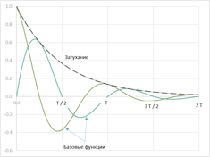
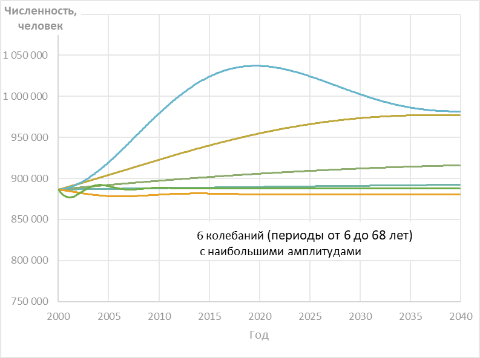
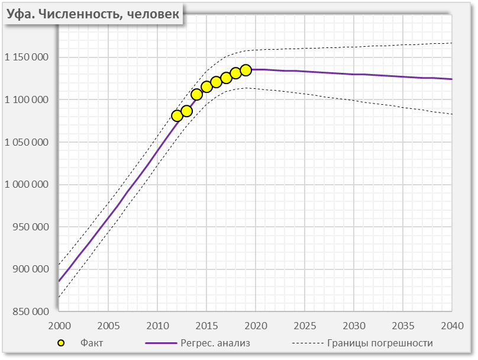
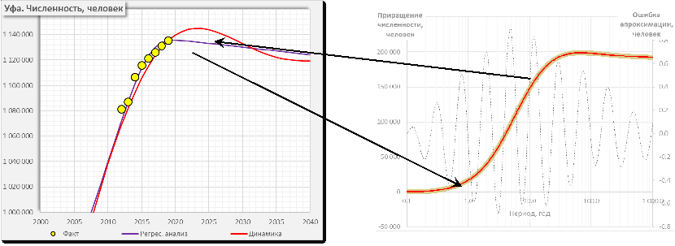

7 Математическое обеспечение
Математическое обеспечение Цифрового двойника представляет из себя комплекс математических моделей и методов их калибровки на фактических данных, связывающих цели социально-экономического развития, с базовыми показателями и внешними факторами.
Реализация математических моделей выполнена в форме расчетных (программных) модулей на языках программирования R и Java.
Программные модули могут встраиваться в информационно-аналитические системы более высокого уровня через контейнеры Docker или вызываться через методы REST API.
Комплекс включает в себя следующие математические модели:
Модель прогнозирования удельного потребления ресурсов
Модель межотраслевого баланса и ее производные:
- Модель топливно-энергетического баланса
- Модель транспортно-экономического баланса
- Модель межтерриториального баланса ресурсов
- Агент-ориентированная модель межотраслевого, динамического баланса ресурсов
- Модель прогнозирования экономических показателей СЭР в разрезе отраслей
- Модель топливно-энергетического баланса
Модель оценки влияния управленческих решений на развития города
Модель оценки финансовой результативности инвестиционного проекта
Модель оценки влияния инвестиционного проекта на социально-экономические показатели
Модель оценки влияния портфеля инвестиционных проектов на социально-экономические показатели
Модель оценки социальных, экономических и экологических последствий
Модель оценки потенциала развития
Модель тарифного регулирования, в том числе:
- расчета равновесных цен (тарифов) на продукцию по регулируемым видам деятельности
- расчета тарифного меню на поездки общественным транспортом
- расчета равновесных цен (тарифов) на продукцию по регулируемым видам деятельности
Сетевые модели
- Распределения рабочих нагрузок по транспортным сетям (водоснабжение, водоотведение, газоснабжение, электроснабжение, общественный транспорт)
- Выявления потерь ресурсов на транспортных сетях
- Оценки маятниковой миграции
- Оценки пассажиропотока и грузопотока
- Распределения рабочих нагрузок по транспортным сетям (водоснабжение, водоотведение, газоснабжение, электроснабжение, общественный транспорт)
Модель оценки рисков, в том числе
- надежности и безопасности ресурсоснабжения
- исполнения строительных проектов
- надежности и безопасности ресурсоснабжения
Модель оценки технического состояния, износа и сроков безопасной эксплуатации инфраструктуры
7.1 Модель прогнозирования численности населения
7.1.1 Назначение
Математическая модель демографических показателей СЭР (далее – Модель) предназначена для расчета прогноза значений демографических показателей (население, рождаемость, смертность, миграция) социально-экономического развития населенных пунктов (городов, регионов, стран).
Набор демографических показателей входит в состав концепции и методики оценки влияния инвестиционных проектов на социально-экономическое развитие. Зеленой рамкой на рисунке выделено место рассчитываемых показателей в общей структуре показателей СЭР.

Рисунок. Система показателей, используемая в оценке влияния инвестиционных проектов на социально-экономическое развитие города
Демографические показатели СЭР являются базовыми показателями, характеризующими состояние и развитие города, являются исходными для расчета показатели социального (обеспеченность объектами социально-экономического назначения, реальные располагаемые доходы населения) и экономического развития (объемы потребления, фондов оплаты труда и местных налогов). Логические связи демографических показателей, включенных в Модель с другими базовыми показателями, СЭР представлены на рисунке.

Рисунок. Взаимосвязи демографических показателей Модели, с другими базовыми показателями СЭР
Модель позволяет на основе неполного ряда ретроспективных значений показателей сформировать, как прогнозные значения на долгосрочный (десятки лет) и среднесрочный (годы) период времени, так и восстановить отсутствующие, откорректировать «аномальные» значения на ретроспективном периоде времени.
Основные задачи демографической модели:
1. Определение устойчивых коэффициентов тренда, описывающего изменения значений показателей во времени
2. Восстановление ретроспективных значений показателей, с помощью интерполяции для повышения качества муниципальной статистики
3. Расчет базового (инерционного) прогноза демографических показателей на расчетный период
4. Расчет сценарного демографических показателей, с учетом возможных «рукотворных» событий (инвестиционный проект, расширение территорий, катастрофические явления), происходящих одномоментно («скачок») изменяющим или не изменяющим тренд по выбору пользователя Модели
7.1.2 Основные параметры, показатели и обозначения
Модель позволяет производить прогнозные расчеты для следующих демографических показателей:
| № | Наименование демографического показателя | Ед. изм. |
|---|---|---|
| 1 | Численность | человек |
| 2 | Количество родившихся | человек |
| 3 | Коэффициент рождаемости | промилле |
| 4 | Количество умерших | человек |
| 5 | Коэффициент смертности | промилле |
| 6 | Количество прибывших | человек |
| 7 | Коэффициент прибытия | промилле |
| 8 | Количество выбывших | человек |
| 9 | Коэффициент выбытия | промилле |
| 10 | Естественный прирост (убыль) | человек |
| 11 | Коэффициент естественного прироста (убыли) | промилле |
| 12 | Миграционный прирост (убыль) | человек |
| 13 | Коэффициент миграционного прироста (убыли) | промилле |
В Модели используются следующие обозначения для параметров и вспомогательных показателей:
| № | Символ | Наименование | Ед. изм. |
|---|---|---|---|
| 1 | \(t\) | Время (календарная дата), год (месяц, день, час) | год |
| 2 | \(N\) | Численность населения | человек |
Фактические значения по данным федеральной службы государственной статистики (ФСГС)
| № | Символ | Наименование | Ед. изм. |
|---|---|---|---|
| 3 | \(N_{[20ХХ]}\) | Фактическая численность на 1 января 20ХХ года | человек |
| 4 | \(B_{[20ХХ]}\) | Количество родившихся в 20ХХ году | человек в год |
| 5 | \(D_{[20ХХ]}\) | Количество умерших в 20ХХ году | человек в год |
| 6 | \(E_{[20ХХ]} = B_{[20ХХ]} – D_{[20ХХ]}\) | Естественный прирост (убыль) в 20ХХ году | человек в год |
| 7 | \(I_{[20ХХ]}\) | Количество прибывших на ПМЖ в 20ХХ году | человек в год |
| 8 | \(O_{[20ХХ]}\) | Количество убывших на ПМЖ в 20ХХ году | человек в год |
| 9 | \(M_{[20ХХ]} = I_{[20ХХ]} – O_{[20ХХ]}\) | Миграционный прирост (убыль) в 20ХХ году | человек в год |
| 10 | \(∆N_{[20ХХ]} = E_{[20ХХ]} + M_{[20ХХ]}\) | Прирост (убыль) населения в 20ХХ году | человек в год |
| 11 | \(K_{Р[20ХХ]} = 2000·B_{[20ХХ]} / (N_{[20ХХ]} + N_{[20ХХ + 1]})\) | Коэффициент рождаемости, равный количеству родившихся в 20ХХ году на тысячу человек населения в 20ХХ году | промилле/год |
| 12 | \(K_{С[20ХХ]} = 2000·D_{[20ХХ]} / (N_{[20ХХ]} + N_{[20ХХ + 1]})\) | Коэффициент смертности, равный количеству умерших в 20ХХ году на тысячу человек населения в 20ХХ году | промилле/год |
| 13 | \(K_{Е[20ХХ]} = K_{Р[20ХХ]} – K_{С[20ХХ]}\) | Коэффициент естественного прироста (убыли) населения | промилле / год |
| 14 | \(K_{П[20ХХ]} = 2000·I_{[20ХХ]} / (N_{[20ХХ]} + N_{[20ХХ + 1]})\) | Коэффициент миграционного прибытия, равный количеству прибывших на ПМЖ в 20ХХ году на тысячу человек населения в 20ХХ году | промилле / год |
| 15 | \(K_{У[20ХХ]} = 2000·O_{[20ХХ]} / (N_{[20ХХ]} + N_{[20ХХ + 1]})\) | Коэффициент миграционного убытия, равный количеству убывших на ПМЖ в 20ХХ году на тысячу человек населения в 20ХХ году | промилле / год |
| 16 | \(K_{М[20ХХ]} = K_{П[20ХХ]} – K_{У[20ХХ]}\) | Коэффициент миграционного прироста (убыли) населения | промилле / год |
| 17 | \(K_{[20ХХ]} = K_{Е[20ХХ]} + K_{М[20ХХ]}\) | Коэффициент прироста (убыли) населения | промилле / год |
Расчетные
| № | Символ | Наименование | Ед. изм. |
|---|---|---|---|
| 18 | \(N(t)\) | Расчетная численность на момент времени t | человек |
| 19 | \(N`(t)=dN/dt\) | Скорость изменения численности | человек в год |
| 20 | \(\nu_{B}(t)\) | Расчетный коэффициент рождаемости в момент времени t | 1 / год |
| 21 | \(\nu_{D}(t)\) | Расчетный коэффициент смертности в момент времени t | 1 / год |
| 22 | \(B_{(20XX)}\) | Расчетное количество родившихся в 20ХХ году | человек в год |
| 23 | \(D_{(20XX)}\) | Расчетное количество умерших в 20ХХ году | человек в год |
| 24 | \(E_{(20XX)} = B_{(20XX)} - D_{(20XX)}\) | Расчетный естественный прирост (убыль) в 20ХХ году | человек в год |
| 25 | \(w_{I}(t)\) | Скорость миграционного прибытия в момент времени t | человек в год |
| 26 | \(w_{O}(t)\) | Скорость миграционного убытия в момент времени t | человек в год |
| 27 | \(I_{(20XX)}\) | Расчетное количество прибывших на ПМЖ в 20ХХ году | человек в год |
| 28 | \(O_{(20XX)}\) | Расчетное количество убывших на ПМЖ в 20ХХ году | человек в год |
| 29 | \(M_{(20XX)} = I_{(20XX)} - O_{(20XX)}\) | Расчетный миграционный прирост (убыль) в 20ХХ году | человек в год |
| 30 | \(∆N_{(20XX)} = E_{(20XX)} + M_{(20XX)}\) | Расчетный прирост (убыль) населения в 20ХХ году | человек в год |
Погрешности аппроксимации
| № | Символ | Наименование | Ед. изм. |
|---|---|---|---|
| 31 | \(\varepsilon_{N_{[20XX]}} = N_{(20XX)} - N_{[20XX]}\) | Абсолютная ошибка по численности на 1 января 20ХХ года | человек |
| 32 | \(\varepsilon_{B_{[20XX]}} = B_{(20XX)} - B_{[20XX]}\) | Абсолютная ошибка по количеству родившихся в 20ХХ году | человек |
| 33 | \(\varepsilon_{D_{[20XX]}} = D_{(20XX)} - D_{[20XX]}\) | Абсолютная ошибка по количеству умерших в 20ХХ году | человек |
| 34 | \(\varepsilon_{E_{[20XX]}} = E_{(20XX)} - E_{[20XX]}\) | Абсолютная ошибка по естественному приросту (убыли) в 20ХХ году | человек |
| 35 | \(\varepsilon_{I_{[20XX]}} = I_{(20XX)} - I_{[20XX]}\) | Абсолютная ошибка по количеству прибывших на ПМЖ в 20ХХ году | человек |
| 36 | \(\varepsilon_{O_{[20XX]}} = O_{(20XX)} - O_{[20XX]}\) | Абсолютная ошибка по количеству убывших на ПМЖ в 20ХХ году | человек |
| 37 | \(\varepsilon_{M_{[20XX]}} = M_{(20XX)} - M_{[20XX]}\) | Абсолютная ошибка по миграционному приросту (убыли) в 20ХХ году | человек |
| 38 | \(\varepsilon_{∆N_{[20XX]}} = ∆N_{(20XX)} - ∆N_{[20XX]}\) | Абсолютная ошибка по приросту (убыли) населения в 20ХХ году | человек |
Статистические оценки
| № | Символ | Наименование | Ед. изм. |
|---|---|---|---|
| 39 | \(P\) | Доверительная вероятность (для решений, приведенных в разделе 8, вероятность \(P\) принята равной 90 %) | % |
| 40 | \(z_{[P]}\) | Квантиль, соответствующий вероятности \(P\), и зависящий, в соответствии с распределением Стьюдента, от количества параметров, входящих в уравнения для численности \(N(t)\) и количества точек, в которых вычисляются ошибки (решения, приведенные в разделе 8, включают 16 параметров и построены по 90 фактическим статистическим значениям) | число |
| 41 | \(err(t)\) | Относительная ошибка (таблица раздела 8) | % |
Результаты расчетов и прогнозирование
| № | Символ | Наименование | Ед. изм. |
|---|---|---|---|
| 42 | \(N(t),\nu_{B}(t),\nu_{D}(t),B(t),D(t),…\) | Расчетные зависимости численности (коэффициента рождаемости, коэффициента смертности, количества родившихся, количества умерших и т. д.) от времени (фиолетовая кривая на графике в разделе 6) | число |
| 43 | \(H(t)=N(t)e^{(z_{[P]}err(t))}\) | Верхние границы прогнозируемого показателя с доверительной вероятностью \(P\) (красная кривая на графике в разделе 6) | число |
| 44 | \(L(t)=N(t)e^{(-z_{[P]}err(t))}\) | Нижние границы прогнозируемого показателя с доверительной вероятностью \(P\) (зеленая кривая на графике в разделе 6) | число |
7.1.3 Используемые формулы и допущения
В самом общем виде соотношение для изменения численности во времени
\[\begin{align*}
N`(t)=dN/dt,
\end{align*}\]
может быть записано в виде:
\[\begin{align*}
N`(t)=N(t)[\nu_{B}(N(t),t,S(N(t),t),Ext(t),…)-\nu_{D}(N(t),t,…)]+\\
+[w_{I}(N(t),t,S(N(t),t),Ext(t),…)-w_{O}(N(t),t,…)], (1)
\end{align*}\]
где
\(N(t)\) - численность населения в зависимости от времени;
коэффициенты рождаемости \(\nu_{B}(N(t),t,S(N(t),t),Ext(t),…)\) и смертности \(\nu_{D}(…)\), а также скорости миграционного прибытия \(w_{I}(…)\) и убытия \(w_{O}(…)\) зависят, в свою очередь, от численности \(N\), времени \(t\), «структуры» населения \(S\) (половозрастной, образовательной, национальной и т. д.), меняющейся во времени, внешних условий \(Ext\) (природно-климатические, уровень инфляции, курс доллара, стоимость нефти, обеспеченность работой, обеспеченность жильем, эпидемии, стихийные и техногенные катастрофы).
В предлагаемой модели рассматриваются два уровня детализации.
Уровень I – для моделирования и анализа социально-экономического развития в целом. Рассчитывается численность населения с последующим разделением на три возрастные группы:
- моложе трудоспособного возраста,
- трудоспособного возраста,
- старше трудоспособного возраста.
Уравнение (1) сводится к виду (2):
\[\begin{align*}
N`(t)=N(t)[\nu_{B}(t)-\nu_{D}(t)]+[w_{I}(t)-w_{O}(t)], (2)
\end{align*}\]
где функции \(\nu_{B}(t)\), \(\nu_{D}(t)\), \(w_{I}(t)\) и \(w_{O}(t)\) включают в себя зависимости от «структуры», в свою очередь, от численности \(N\), времени \(t\), «структуры» населения и внешних условий без детализации.
Основная проблема моделирования заключается в том, что функции \(\nu_{B}(t)\), \(\nu_{D}(t)\), \(w_{I}(t)\) и \(w_{O}(t)\) – неизвестны, то есть задача является «обратной», что на порядок повышает сложность решения. Порядок решения приведен в разделе 5 настоящего раздела.
Уровень II - предназначен для детального моделирования и анализа развития демографической системы.
Для уровня II уравнения (3) строятся отдельно для каждой i-ой возрастной группы с добавлением процесса «старения» - перехода из одной возрастной группы
в следующую по возрасту:
\[\begin{align*}
N`_{i}(t)=N_{i}(t)[\nu_{B_{i}}(t)-\nu_{D_{i}}(t)]+[w_{I_{i}}(t)-w_{O_{i}}(t)]+[u_{I_{i}}(t,S)-u_{O_{i}}(t,S)]. (3)
\end{align*}\]
где функции \(u_{I_{(i+1)}}(t,S)=u_{O_{i}}(t,S)\) – функции входа / выхода в i-ю возрастную группу.
Функции \(u_{I_{i}}(t,S)\), \(u_{O_{i}}(t,S)\), в отличие от неизвестных функций \(\nu_{B}(t)\), \(\nu_{D}(t)\), \(w_{I}(t)\) и \(w_{O}(t)\), известны и полностью определяются половозрастной структурой \(S\) и временем \(t\).
7.1.4 Исходные данные для модели
Исходными данными для модели Уровня I являются ретроспективные временные ряды по данным ФСГС (для тех лет, где они имеются):
\(N_{[2000]}, N_{[2001]}, …, N_{[2023]}\) - Фактическая численность на 1 января 20ХХ года, человек
\(B_{[2000]}, B_{[2001]}, …, B_{[2022]}\) - Количество родившихся в 20ХХ году, человек / год
\(D_{[2000]}, D_{[2001]}, …, D_{[2022]}\) - Количество умерших в 20ХХ году, человек / год
\(I_{[2000]}, I_{[2001]}, …, I_{[2022]}\) - Количество прибывших на ПМЖ в 20ХХ году, человек / год
\(O_{[2000]}, O_{[2001]}, …, O_{[2022]}\) - Количество убывших на ПМЖ в 20ХХ году, человек / год
7.1.5 Описание итоговых показателей расчета
Итоговые показатели расчета включают в себя следующие параметры для каждого демографического показателя:
Год — номер года характеризующий период, на окончание которого рассчитано значение показателя;
Период, начало — дата, характеризующая начало расчетного периода с точностью до 1 дня, для 2023 года будет равняться 01.01.2023;
Период, окончание — дата, характеризующая окончание расчетного периода с точностью до 1 дня, для 2022 года будет равняться 31.12.2022;
Факт — фактическое (не расчетное) значение демографического показателя на соответствующую дату, берется из паспорта города;
План/Проект — значение прироста (убыли) демографического показателя, вызванного не естественными процессами, а управляемым воздействием (например, присоединением новой области к муниципальному образованию);
Скачок — бинарный параметр, который находится во включенном состоянии (значение — TRUE) если введено значение “План/Проект“, в остальных случаях находится в выключенном состоянии;
Расчет, среднее — показывает наиболее ожидаемое прогнозное значение ряда демографических данных;
Расчет, верхняя граница — ряд характеризует верхнюю границу коридора прогнозируемых значений, в который должны попасть 90% ожидаемых значений;
Расчет, нижняя границы — ряд характеризует верхнюю границу коридора прогнозируемых значений, в который должны попасть 90% ожидаемых значений.
7.1.6 Детальное описание алгоритма произведения расчетов
Шаг 1. Выбор вида функций \(\nu_{B}(t)\), \(\nu_{D}(t)\), \(w_{I}(t)\) и \(w_{O}(t)\). Простейшими функциями, имеющими «физический» смысл, то есть пригодными не только для аппроксимации в ретроспективном периоде, но и для экстраполяции на прогнозный период являются четырех-параметрические сигмоидальные кривые [С. П. Капица]. В настоящей работе используется форма (4):
\[\begin{align*}
& \nu_{B}(t)=\frac{a_{B}+b_{B}(t⁄d_{B})^{c_{B}}}{1+(t⁄d_{B})^{c_{B}}}, & (4B) \\
& \nu_{D}(t)=\frac{a_{D}+b_{D}(t⁄d_{D})^{c_{D}}}{1+(t⁄d_{D})^{c_{D}}}, & (4D) \\
& w_{I}(t)=\frac{a_{I}+b_{I}(t⁄d_{I})^{c_{I}}}{1+(t⁄d_{I})^{c_{I}}}, & (4I) \\
& w_{O}(t)=\frac{a_{O}+b_{O}(t⁄d_{O})^{c_{O}}}{1+(t⁄d_{O})^{c_{O}}} & (4O)
\end{align*}\]
где a, b, c, d – параметры соответствующих соотношений;
a – значение функции при t = 0 (за 0 принято 1 января 1999 года);
b – предельный уровень функции при t = \(\infty\) (в «будущем»);
d – дата перегиба функции при t = d;
c – определяет угол наклона кривой в точке перегиба.
Шаг 2. Определение начальных значений параметров. Начальные значения параметров a, b, c, d определяются методом наименьших квадратов независимо для каждой из функций \(\nu_{B}(t)\), \(\nu_{D}(t)\), \(w_{I}(t)\) и \(w_{O}(t)\), с использованием соответствующих временных рядов.
 На рисунке приведен пример построения сигмоидальной функции \(w_{I}(t)\) для Воронежа.
На рисунке приведен пример построения сигмоидальной функции \(w_{I}(t)\) для Воронежа.
В приведенном примере a = 11046 человек / год, b = 37894 человек / год, d = 12.71 года, т. е. дата перегиба 14 мая 2011 года, с = 11.8, что показывает резкий переход от одного уровня до другого.
Шаг 3.1. Решение дифференциального уравнения (2) на ретроспективный период.
Для решения уравнения:
\[\begin{align*}
N`(t)=N(t)[\nu_{B}(t)-\nu_{D}(t)]+[w_{I}(t)-w_{O}(t)], (2)
\end{align*}\]
применяется неявный метод Эйлера.
Дифференциальное уравнение (2) заменяется разностным:
\[\begin{align*}
&\frac{N(t_{j}+δt)-N(t_{j})}{δt}=\frac{N(t_{j})\nu_{B}(t_{j})+N(t_{j}+δt)\nu_{B}(t_{j}+δt)}{2}-\frac{N(t_{j})\nu_{D}(t_{j})+N(t_{j}+δt)\nu_{D}(t_{j}+δt)}{2}+\\
&+\frac{w_{I}(t_{j})+w_{I}(t_{j}+δt)}{2}-\frac{w_{O}(t_{j})+w_{O}(t_{j}+δt)}{2}. (5)
\end{align*}\]
Перенося значения \(N(t_{j}+δt)\) в левую часть, получаем
\[\begin{align*}
&N(t_{j}+δt)(1-\frac{\nu_{B}(t_{j}+δt)δt}{2}+\frac{\nu_{D}(t_{j}+δt)δt}{2})=N(t_{j})(1+\frac{\nu_{B}(t_{j})δt}{2}-\frac{\nu_{D}(t_{j})δt}{2})+\\
&+δt(\frac{w_{I}(t_{j})+w_{I}(t_{j}+δt)}{2}-\frac{w_{O}(t_{j})+w_{O}(t_{j}+δt)}{2}). (6)
\end{align*}\]
Из соотношения (6) определяется \(N(t_{j+1})=N(t_{j}+δt)\) для следующего момента времени.
Для решения в ретроспективной области в качестве начального момента времени \(t_{0}\) принимается последняя дата, для которой известно значение численности (в примерах разделов 9 и 10 - 1 января 2019 года), а шаг \(δt\) задается отрицательным (1 месяц).
Шаг 3.2. Параллельно с решением для численности определяются расчетные значения других показателей: количество родившихся, умерших, прибывших на ПМЖ, убывших на ПМЖ.
Шаг 4. Оценка ошибок. Результаты расчетов по шагам 3.1 и 3.2 сравниваются с фактическими значениями и определяются погрешности аппроксимации \(\varepsilon_{N_{[20XX]}} = N_{(20XX)} - N_{[20XX]}\), \(\varepsilon_{B_{[20XX]}} = B_{(20XX)} - B_{[20XX]}\) и т. д. Общей оценкой ошибок считается сумма квадратов погрешностей \(∑\varepsilon^{2}\) по всем фактическим значениям (в примере из разделов 9, 10 фактических значений 90 по 15 показателям).
Шаг 5. Уточнение параметров функций \(\nu_{B}(t)\), \(\nu_{D}(t)\), \(w_{I}(t)\) и \(w_{O}(t)\). Поправки к параметрам a, b, c, d рассчитываются методом Ньютона безусловной оптимизации суммы квадратов погрешностей \(∑\varepsilon^{2}\).
Шаг 6. Итерационное повторение шагов 3, 4, 5 до достижения возможного минимума суммы квадратов погрешностей.
Шаги 7.1 и 7.2 Решение дифференциального уравнения (2) на прогнозный период. Шаги 7.1 и 7.2 полностью аналогичны шагам 3.1 и 3.2 за исключением того, что шаг по времени \(δt\) задается положительным (1 месяц).
Шаг 8. Построение верхней и нижней границ прогноза. Ошибка аппроксимации \(err(t)\) включают две составляющие: постоянную \(\varepsilon_{const}\) и переменную \(\varepsilon_{var}|t-t_{0}|\), равную 0 в начальной точке \(t_{0}\) (в представленных результатах \(t_{0}\) соответствует 1 января 2019 года)
\[\begin{align*}
err(t)^{2}=\varepsilon_{const}^{2}+\varepsilon_{var}^{2}(t-t_{0} ). (7)
\end{align*}\]
Для построения верхней \(H(t)\) и нижней \(L(t)\) границ ошибка \(err(t)\) умножается на квантиль \(z_{[P]}\), зависящий от доверительной вероятности \(P\), количества параметров и количества фактических значений (для приведенного примера при \(P=90\%\), 16-ти параметрах и 90 фактических значений \(z_{[90\%]} = 1.673\)):
\[\begin{align*}
&H(t)=N(t)e^{(z_{[P]}err(t))}, & (8) \\
&L(t)=N(t)e^{(-z_{[P]}err(t))}. & (9)
\end{align*}\]
7.1.7 Область (границы) допустимого применения математической модели
Данная модель подходит для прогнозирования населения города при его естественном и постепенном развитии, и не может показывать высокую точность и предсказывать, когда на демографические показатели города воздействуют резкие и значительные внешние изменения (войны, природные и техногенные катастрофы), а также в случае изменения границ населенного пункта или методики подсчета населения — что дает резкие «рукотворные» скачки значений демографических.
При этом, Модель позволяет провести сценарный анализ или прогноз, в случае если на вход Модели подставить «рукотворное» изменение показателей.
В случае объединения двух населенных пунктов в период, за который берутся данные для прогнозной модели необходимо провести расчет для каждого населенного пункта раздельно, а потом арифметически сложить получившиеся значения.
Также, расчеты подходят только для прогнозирования годовых значений и не сглаживают демографические волны и иные волнообразные эффекты для которых будет разработана отдельная модель системной динамики, учитывающая тренды полученные по результатам расчетов данной Модели.
7.1.8 Оценка точности математических моделей
Оценка по ретроспективным данным показывает высокую точность расчета численности населения (до 0,18 %) и средних значений частных показателей. В то же время сузить коридор между нижней и верхней границей не представляется возможным, так как некоторые точки лежат на границах коридора или даже выходят за них. При доверительной вероятности 90 % из 90 точек 8-10 должны «выпадать» из коридора. Оценивая точность прогноза с фактическими данными на 1 января 2020 года погрешность для 4 из 5 городов не превышает 1% от населения города (для Архангельска – 118 человек, Воронежа – 398 человек, Краснодара – 7227 человек, Уфы – 57 человек, Южно-Сахалинска – 2272 человек). При этом для трех городов прогноз показывает особенно высокую точность — отклонение менее 0,05%.
Численность населения, человек
| Город | Прогноз на 2020* | Факт | Отклонение |
|---|---|---|---|
| Воронеж | 1 057 863 | 1 058 261 | -0,04% |
| Краснодар | 939 856 | 932 629 | 0,77% |
| Уфа | 1 128 730 | 1 128 787 | -0,01% |
| Архангельск | 346 861 | 346 979 | -0,03% |
| Южно-Сахалинск | 202 908 | 200 636 | 1,13% |
* прогноз создан на основе данных за 2000—2019 года
Таблица иллюстрирует точность текущих расчетов по сравнению с новыми фактическими данными о населении пяти городов.
7.2 Модель системной динамики города
7.2.1 Назначение модели
Математическая модель расчета интегрального (системно-динамического) прогноза демографических, экономических показателей СЭР (далее – Модель) предназначена для:
– Определения долгосрочных трендов (регрессионной, аппроксимирующей функции) изменения базовых показателей СЭР города;
– Формирования динамического прогноза (на основе динамической функции) базовых показателей СЭР, ограниченных коридором значений долгосрочных трендов;
– Расчета корреляционных функций, описывающих меру взаимного влияния показателей друг на друга и восприимчивость к изменению внешних факторов.
Модель преобразует набор фактических, ежегодных (не менее чем за 6 лет) значений по 27 макроэкономическим показателям СЭР города и дополнительным 4 макроэкономическим показателям, характеризующих внешние факторы, в наборы следующих значений для каждого города:
– 27 макроэкономических показателей СЭР города за ретроспективный (до 2000 года) и перспективный (до 2050 года) периоды времени,
– корреляционные матрицы размерности 31 показатель х 31 показатель х 50 годовых периода, отражающих степени взаимного влияния изменения показателей СЭР.
7.2.2 Базовый вид модели
Под базовым видом модели будем понимать уравнения модели (целевой функции) в общем виде.
Базовым дифференциальным уравнением Модели является уравнение затухающих колебаний, описывающее изменение показателей системы \(x(t)\) во времени, \[\begin{align*} \frac{d^{2} x(t)}{dt^{2}}+ \gamma \frac{dx(t)}{dt} + \omega^{2}x(t)=f(t), (1) \end{align*}\] где параметрами системы являются:
\(\gamma\) - характеристика затухания колебаний системы из-за сопротивления («трения») в системе,
\(\omega\) - собственная частота колебаний системы в отсутствие сопротивления («трения»),
\(f\) – совокупность внешних воздействий.
Зависимости показателей от времени представляются суммой 42-х базовых функций с различными периодами колебаний:
\[\begin{align*}
x(t)=\sum_{i=1}^{21}(C_{i}cos\omega_{i}t+S_{i}sin\omega_{i}t)e^{-a_{i}t} (2)
\end{align*}\]
Для определения коэффициентов \((C, S, \omega, a)\) к динамической функции \(x(t)\) применяется преобразование Лапласа
\[\begin{align*}
L\{x(t)\}(s)=\int_{0}^{\infty}x(t) e^{-st} dt. (3)
\end{align*}\]
Или в явном виде:
\[\begin{align*}
L\{x(t)\}(s)=\sum_{i=1}^{21}(C_{i}\frac{s}{(s+a_{i})^{2}+\omega_{i}^{2}}+S_{i}\frac{\omega_{i}}{(s+a_{i})^{2}+\omega_{i}^{2}}). (3.1)
\end{align*}\]
На основе имеющихся статистических данных рассчитываются параметры \((C, S, \omega, a)\) уравнения (3.1), а затем строится динамическая функция \(x(t)\) (зависимость показателя x от времени) и скорость изменения показателя \(dx(t)/dt\).
Для всех анализируемых показателей СЭР наибольший вклад дают колебания с периодами от 6 до 68 лет.
Функции \(x(t)\), полученные в результате «динамического» анализа, используются для оценки влияния во времени изменения одного показателя (управленческие решения) на другие, в том числе на себя.
Корреляционная функция влияния показателя \(x(t)\) на скорость изменения показателя y вычисляется в виде
\[\begin{align*}
K_{xy}(\tau)=\int_{0}^{\infty}x(t)y`(t+\tau)dt, (4)
\end{align*}\]
где:
\(K_{xy}\) – корреляционная матрица влияния показателя \(x\) на изменение показателя \(у\),
\(y`(t+\tau)\) – скорость изменения показателя СЭР y в момент времени \(t + \tau\), для которого рассчитывается влияние значения \(х(t)\) в момент времени \(t\),
\(\tau\) - период времени с начала действия изменений показателя \(x\).
Исходные данные, а также краевые или граничные условия, для построения динамической функции (2) для показателей отражающих потоки ресурсов (не накопительные показатели: численность населения, общая площадь жилья, баланс бюджета города, накопления граждан), задаются с помощью четырех-параметрических сигмоидальных кривых, которые пригодны не только для аппроксимации в ретроспективном периоде, но и для экстраполяции на прогнозный период показателей (см. Раздел 6).
\[\begin{align*}
X(t)=\frac{A+B(t⁄d)^{c}}{1+(t⁄d)^{c}},(5)
\end{align*}\]
где A, B, c, d – параметры соответствующих соотношений;
A – значение функции при t = 0 (за 0 принято 1 января 1999 года);
B – предельный уровень функции при t = (в «будущем»);
d – дата перегиба функции при t = d;
c – определяет угол наклона кривой в точке перегиба.
7.2.3 Описание входных переменных модели
7.2.3.1 Перечень входных переменных модели
Модель расчета интегрального прогноза демографических и экономических показателей СЭР использует в качестве входных данных ретроспективные значения следующих показателей за период не менее 6-и лет:
| № | Код | Показатель | Ед.изм. |
|---|---|---|---|
| 1 | C013 | Численность населения на 1 января текущего года | человек |
| 2 | C034 | Число родившихся | человек |
| 3 | C035 | Число умерших | человек |
| 4 | C037 | Прибыло населения (миграция) | человек |
| 5 | C038 | Выбыло населения (миграция) | человек |
| 6 | C041 | Население трудоспособного возраста | человек |
| 7 | C096 | Ввод в действие многоквартирных жилых домов | м2 |
| 8 | C149 | Общая площадь жилых помещений | м2 |
| 9 | C221 | Среднесписочная численность работников организаций, всего | человек |
| 10 | C241 | Фонд заработной платы всех работников организаций, всего | рублей |
| 11 | C698 | Налогооблагаемые денежные доходы физических лиц и инд. предпринимателей | рублей |
| 12 | C699 | Доходы населения: социальные и другие выплаты | рублей |
| 13 | C712 | Денежные доходы населения на 1 жителя | руб. в год |
| 14 | C713 | Обязательные платежи и взносы на 1 жителя | руб. в год |
| 15 | C714 | Реальные располагаемые доходы на 1 жителя | руб. в год |
| 16 | C757 | Интегральная обеспеченность ОСЭН по городу | % |
| 17 | C049 | Доходы городского бюджета, всего | млн. руб. |
| 18 | C065 | Расходы городского бюджета, всего | млн. руб. |
| 19 | C087 | Инвестиции в осн. капитал осуществляемые организациями (без мал. бизнеса) | млн. руб. |
| 20 | C706 | Валовый городской продукт (ВГП) | млн. руб. |
| 21 | C708 | Налоговые доходы бюджетов всех уровней | млн. руб. |
| 22 | C709 | Доходы местного бюджета (налоговые) | млн. руб. |
| 23 | C433 | Оборотные активы | млн. руб. |
| 24 | C475 | Выручка (За отчетный период) | млн. руб. |
| 25 | C711 | Себестоимость полная (выручка - чистая прибыль) | млн. руб. |
| 26 | C707 | Валовая добавленная стоимость МСП | млн. руб. |
| 27 | C409 | Основные средства | млн. руб. |
| 28 | C715 | Региональный Индекс Потребительских Цен (ИПЦ) | ед. |
| 29 | C716 | Курс доллара | руб. / $ |
| 30 | C717 | Платежный баланс (сальдо импорта и экспорта) РФ | долларов |
| 31 | C718 | Валовый Внутренний Продукт (ВВП) РФ | млн. руб. |
7.2.3.2 Источники данных
Источником исходных данных для показателей (переменных) является База данных показателей муниципальных образований, размещённая в сети Интернет по адресу - https://rosstat.gov.ru/storage/mediabank/Munst.htm, за исключением следующих случаев:
| № | Наименование показателя (набора) | Источник данных |
|---|---|---|
| 1 | Валовый городской продукт | Математическая модель прогнозирования экономических показателей |
| 2 | Интегральная обеспеченность ОСЭН по городу | Математическая модель оценки качества городской среды |
| 3 | Выручка, Прибыль (убыток) от продаж, Основные средства предприятий | Бухгалтерские балансы |
| 4 | Денежные доходы, обязательные платежи и взносы, реальные располагаемые доходы | Росстат |
| 5 | Региональный ИПЦ | Росстат |
| 6 | Курс доллара, Платежный баланс (сальдо импорта и экспорта) РФ, ВВП РФ, Ставка ЦБ | Центральный банк РФ |
7.2.4 Описание результата модели
7.2.4.1 Перечень выходных данных модели
Модель расчета интегрального прогноза демографических и экономических показателей СЭР формирует в качестве выходных данных значения показателей описанных в Перечне входных переменных модели на ретроспективный (до 2000 года) и перспективный (до 2050 года) периоды, а так же матрицу чувствительности значений показателей к изменению каждого показателя на годовые периоды времени (корреляционная матрица).
7.2.5 Калибруемые параметры модели
Для каждого показателя из Перечня входных переменных модели рассчитываются следующие калибруемые параметры модели:
\(\gamma\) - характеристика затухания колебаний системы (Пример на Рисунке 1),

\(\omega\) - собственная частота колебания системы в отсутствие сопротивления среды, приведенная на Рисунке 2.

\(C, S, \omega , a\) – постоянные параметры интегрирования, рассчитываемые на исходных данных для 21 частоты, определяемые по начальным (фактические значения показателей) и краевым условиям (доверительного интервала аппроксимирующей показатель функции).
7.2.6 Калибровка модели
7.2.6.1 Характеристики и объем массива данных для разработки модели
Исходный объем массива данных для каждого города составляет не менее 186 значений или 6 годовых значений по каждому из 31 показателя социально-экономического развития.
Фактические ретроспективные данные по группе показателей, связанных между собой:
– численность населения, рождаемость, смертность, количество прибывших, количество убывших;
– доходы населения, удельные доходы на одного жителя, численность, региональный ИПЦ;
– расходы городского бюджета, удельные расходы на одного жителя, численность, региональный ИПЦ;
– валовый городской продукт (ВГП), удельный ВГП на одного человека трудоспособного возраста, население трудоспособного возраста, среднесписочная численность работников, региональный ИПЦ.
Для каждого показателя из Перечня входных переменных модели производится расчет параметров нелинейных аппроксимирующих функций, ограничивающих область допустимых значений динамической функции, по следующему порядку:
– аппроксимирующие функции выбираются в форме сигмоид, что позволяет проводить экстраполяцию (прогноз) на перспективный период;
– параметры аппроксимирующих функций рассчитываются так, чтобы минимизировать ошибку по всем показателям одновременно;
– оценка погрешности аппроксимации;
– построение полосы возможного рассеяния на перспективный период;
– в приведенных примерах на Рисунке 3 полосы рассеяния показаны штриховыми линиями для достоверности 90 %;
– расчет области допустимых значений показателей и темпов их изменения производится с помощью вычисления аппроксимирующей функции (5) (Рисунок 3).

7.2.6.2 Показатели точности калибровки модели
Для каждого показателя, приведенного в Перечне входных переменных модели, рассчитываются следующие показатели точности исходя из принятого за постоянную величину доверительного интервала в 90%:
\(P\) – доверительная вероятность (по умолчанию принята за 90%)
\(\varepsilon\) – абсолютная ошибка (см. пример на рисунке 4)
\(err(t)\) - относительная ошибка, %

7.2.7 Результат применения модели
По результатам опытной эксплуатации математической модели на 44 городах были получены следующие усредненные отклонения фактических значений показателей от значений, полученных с использованием динамической модели.
Максимальный размер отклонений, зафиксирован по показателям, имеющим рукотворную природу «Обязательные платежи и взносы на 1 жителя», «Инвестиции в основной капитал» или высокую волатильность «Оборотные активы организаций».
| Наименование показателя | Интегральная ошибка динамической модели, % |
|---|---|
| Численность населения на 1 января текущего года | 0,12% |
| Число родившихся | 0,20% |
| Число умерших | 0,33% |
| Прибыло населения (миграция) | 1,12% |
| Выбыло населения (миграция) | 1,25% |
| Население моложе трудоспособного возраста | 0,37% |
| Население трудоспособного возраста | 1,10% |
| Население старше трудоспособного возраста | 0,16% |
| Доходы городского бюджета, всего | 0,70% |
| Расходы городского бюджета, всего | 0,57% |
| Инвестиции в осн. капитал осуществляемые организациями (без мал. бизнеса) | 5,07% |
| Введено в действие жилых домов на территории муниципального образования | 2,71% |
| Общая площадь жилых помещений | 0,85% |
| Среднесписочная численность работников организаций, всего | 0,99% |
| Фонд заработной платы всех работников организаций, всего | 2,57% |
| Основные средства организаций | 2,13% |
| Оборотные активы организаций | 2,54% |
| Выручка организаций | 2,28% |
| Налогооблагаемые денежные доходы физических лиц и инд. предпринимателей | 2,78% |
| Доходы населения: социальные и другие выплаты | 3,18% |
| Валовый городской продукт (ВГП) | 2,27% |
| Валовая добавленная стоимость малого и среднего предпринимательства (МСП) | 4,25% |
| Налоговые доходы бюджетов всех уровней | 3,75% |
| Доходы местного бюджета (налоговые) | 0,56% |
| Полная себестоимость | 2,56% |
| Денежные доходы населения на 1 жителя | 3,99% |
| Обязательные платежи и взносы на 1 жителя | 6,35% |
| Реальные располагаемые доходы на 1 жителя | 3,71% |
| Интегральная обеспеченность ОСЭН по городу | 0,14% |
| Максимальное значение | 6,4% |
| Медианное значение | 2,1% |
| Минимальное значение | 0,1% |
Использование предложенной модели при оценке принятия решений необходимо вести, с учетом достигнутых уровней ошибки.
Размер ошибок имеет склонность к снижению в ходе увеличения объема исходных статистических данных.
7.2.8 Требования к поддержке модели и регулярности ее рекалибровки.
Поддержка модели заключается в ежегодном добавлении или уточнении фактических значений по исходным показателям для расчета, приведенным в Перечне входных переменных модели. Рекалибровка модели происходит в автоматическом режиме, по факту загрузки новых значений показателей по городам.
7.2.9 Допущения, необходимые для проведения расчетов
Ключевыми допущениями, принимаемыми при проведении расчетов, являются:
– наличие фактических значений по всем показателям для города, указанным в Перечне входных переменных модели,
– наличие фактических значений минимум за 6 лет,
– группы показателей по демографии, экономике и качеству городской среды являются условно-независимыми (ортогональными),
– данные муниципальной статистики (Росстат) обладают преимуществом (большей точностью) при формировании исходных показателей переменных.
7.2.10 Полное описание алгоритма проведения расчетов
Алгоритм проведения расчетов состоит из следующих шагов:
Подготовка исходных данных включающих фактические значения входных переменных модели, указанных в Перечне входных переменных модели.
Определение начальных параметров регрессионной модели A, B, c, d методом наименьших квадратов, минимизирующих ошибку по всем показателям одновременно для каждого города и каждой группы социально-экономических показателей города:
- Демографических (численность населения, количество родившихся и умерших, прибыло и выбыло населения, численность населения трудоспособного возраста)
- Экономических (среднесписочная численность работников организаций, фонд заработной платы всех работников организаций, выручка и прибыль организаций, доходы МСП, основные и оборотные активы, инвестиции в основной капитал)
- Городских (Валовый городской продукт, доходы и расходы бюджета, доходы и расходы населения, Налоговые доходы бюджетов всех уровней)
- Социальных (общая площадь жилых помещений, ввод в действие многоквартирных жилых домов, введено в действие жилых домов, обеспеченность ОСЭН по городу)
Вычисление прогнозных и восстановление отсутствующих ретроспективных показателей социально-экономического развития на основе регрессионной модели.
Определение ошибок расчета
\[\begin{align*}
\varepsilon_{[20XX]} = x(20XX)-X_{[20XX]}, (6)
\end{align*}\]
где:
\(\varepsilon_{[20XX]}\) – величина ошибки по каждому показателю на 20XX год
\(x(20ХХ)\) – значение показателя полученное на основе регрессионной модели п.3
\(X_{[20ХХ]}\) - фактическое значение показателя
- Уточнение параметров A, B, c, d методом Ньютона безусловной оптимизации суммы квадратов погрешностей \(\sum\varepsilon^{2}\) , полученныхв п. 4
- Итерационное повторение шагов 2, 3, 4, 5 до достижения возможного минимума суммы квадратов погрешностей
- Построение верхней и нижней границ прогноза регрессионной модели. Ошибка аппроксимации \(err(t)\) включают две составляющие: постоянную \(\varepsilon_{const}\) и переменную \(\varepsilon_{var}(t-t_{0})\), равную 0 в начальной точке \(t_{0}\) (в представленных результатах \(t_{0}\) соответствует 1 января 2019 года)
\[\begin{align*} err(t)^{2}=\varepsilon_{const}^{2} + \varepsilon_{var}^{2}(t-t_{0}). (7) \end{align*}\]
- Для построения верхней \(H(t)\) и нижней \(L(t)\) границ значений показателей регрессионной модели ошибка \(err(t)\) умножается на квантиль \(z_{[P]}\), зависящий от доверительной вероятности \(P\), количества параметров и количества фактических значений (для приведенного примера при \(P=90\%\), 16-и параметрах и 90 фактических значений \(z_{[90\%]} = 1.673\)):
\[\begin{align*} H(t)=X(t)e^{z_{[P]}err(t)}, (8) L(t)=X(t)e^{-z_{[P]}err(t)}. (9) \end{align*}\]
- Определение параметров динамической функции \((C, S, \omega, a)\) на основе имеющихся статистических данных, верхней и нижней границ значений показателей регрессионной модели на основании уравнения (2).
- Формирование модельных значений для каждого показателя на прогнозный и ретроспективный периоды на основе динамической функции, построенной с использование параметров \((C, S, \omega, a)\).
- Расчет корреляционных матриц для каждого показателя по формуле (4) исходя из полученных модельных значений.
7.2.11 Область (границы) допустимого применения математических моделей
Областью (границей) допустимого применения математических моделей является:
– формирование инерционного среднесрочного и долгосрочного прогноза основных показателей социально-экономического развития городов,
– восстановление отсутствующих значений по показателям социально-экономического развития городов на ретроспективном периоде не ранее 2000 года,
– создание корреляционных матриц для реализации моделей оценки влияния параметров инвестиционного проекта на социально-экономическое развитие городов на среднесрочном (1-5 лет) и долгосрочном (5-15 лет) горизонтах времени.
7.3 Модель прогнозирования экономических показателей СЭР в разрезе отраслей
7.3.1 Назначение модели
Математическая модель прогнозирования экономических показателей СЭР в разрезе отраслей предназначена для:
• выявления инвестиционных потенциалов экономического развития города (расчет показателей, необходимых для оценки перспектив инвестиционной деятельности в разрезе городов и отраслей)
• выявления инвестиционных потенциалов в разрезе отраслей
• расчета экономических показателей в разрезе отраслей
• расчета основных показателей СЭР городов (ВГП, ФОТ, выпуск, экспорт)
• расчета межотраслевого мультипликатора (расчет матричного мультипликатора, необходимого для оценки эффектов влияния инвестиционных проектов на экономику города)
• выявления дефицитов (объем ввоза) и профицитов (объем вывоза) продукции по отраслям и городам
• расчета производства и потребления продукции смежными отраслями
• оценки влияния реализуемых и планируемых к реализации инвестиционных проектов на показатели СЭР и инвестиционные потенциалы
Математическая модель прогнозирования экономических показателей СЭР в разрезе отраслей позволяет повысить точность отраслевых прогнозов и оценки инвестиционных потенциалов городов.
Межотраслевые балансы городов позволяют:
• учитывать объемы производства и потребления продукции по смежным отраслям;
• детализировать отрасли до второго уровня общероссийской классификации видов экономической деятельности.
Термины и определения
• ИП – Инвестиционный проект
• СЭР – Социально-экономическое развитие городов
• ВГП – валовый городской продукт
• МСП – малое и среднее предпринимательство
• ОСЭН – объекты социально-экономического назначения
• ФОТ – фонды оплаты труда
• ФТС – Федеральная Таможенная Служба
• СНС - Система Национальных Счетов
• МОБ — межотраслевой баланс
• СД-модель – математическая модель расчета интегрального (системно-динамического) прогноза демографических, экономических показателей СЭР
• Инерционный сценарий – сценарий СЭР без учета внешних ИП
• Инвестиционный сценарий – сценарий СЭР с учетом внешних ИП
• Квадрант межотраслевого баланса – раздел таблицы затраты-выпуск (I квадрант – промежуточное потребление, II квадрант – конечное потребление, III – квадрант добавленной стоимости)
• Матрицы коэффициентов межотраслевого баланса - параметры уравнений межотраслевого баланса в том числе:
- \(a\) – матрица удельного внутреннего потребления,
- \(b\) – матричный мультипликатор (матрица полных материальных затрат),
- \(e\) – матрица удельного выпуска продукции,
- \(l\) – структура валовой добавленной стоимости,
- \(p\) – отраслевая пропорция.
7.3.2 Базовый вид модели в общем виде
7.3.2.1 Базовое уравнение модели
Базовым видом модели для данного блока расчетов является уравнение межотраслевого баланса, связывающая объемы производства и конечного потребления по следующему соотношению:
\[\begin{align*}
&X=a*X+Y &(1)
\end{align*}\]
где
\(X\) – объемы производства (выпуска продукции) в отраслях,
\(a\) – матрица удельного внутреннего потребления,
\(Y\) – объемы конечного потребления.
7.3.2.2 Расчет удельных коэффициентов уравнения затраты-выпуск
Построение модели межотраслевого баланса происходит посредством вычисления матрицы удельного внутреннего потребления \(a\). Для этого выполняется поэлементное деление матрицы ресурсов товаров и услуг на транспонированный вектор-столбец объемов выпуска продукции:
\[\begin{align*}
&e_{ii}=E_{ii}/X_{i} &(2)
\end{align*}\]
где,
\(e_{ii}\) - элемент матрицы удельного выпуска
\(E_{ii}\) - общефедеральная таблица ресурсов товаров и услуг
\[\begin{align*}
&a_{ii}=A_{ii}/X_{i} &(3)
\end{align*}\]
где,
\(a_{ii}\) - элемент матрицы удельного потребления
\(A_{ii}\) – общефедеральная таблица использования товаров и услуг в ценах покупателя.
Для подготовки расчета ВГП примем следующие обозначения \(X_{i}=X\), \(Y_{i}=Y\) и т.д. для всех вектор-столбцов. Перепишем (1) в следующем виде:
\[\begin{align*}
&X=e*X+NB+I+T &(4)
\end{align*}\]
где,
\(NB\) – Налоги за вычетом субсидий на продукты (D21-D31),
\(T\) – Торгово-транспортные наценки,
\(I\) – Импорт.
Приравняем (1) к (4) и выразим X:
\[\begin{align*}
&X=(e-a)^{-1} (Y-I-NB-T) &(5)
\end{align*}\]
Перепишем (1) в удельных коэффициентах:
\[\begin{align*}
&GVA=(e-a)*X &(6)
\end{align*}\]
где GVA – Валовая добавленная стоимость
и далее подставим в (6) выражение (5):
\[\begin{align*}
&GVA=Y-I-NB-T &(7)
\end{align*}\]
По определению валовый внутренний продукт равен
\[\begin{align*}
&GDP=GVA+NB=Y-I-T &(8)
\end{align*}\]
где GDP - валовый внутренний продукт
В силу того, что модель имеет линейную природу, приращение ВВП в следствии реализации инвестиционного проекта вычисляется по следующей формуле:
\[\begin{align*}
&ΔGDP=ΔY-ΔI-ΔT &(9)
\end{align*}\]
7.3.2.3 Калибровка модели затраты-выпуск на уровень отдельного города
Для калибровки статической модели межотраслевого баланса необходимо провести корректировку удельных матриц потребления \(a\) и выпуска \(у\).
На первом шаге вычисляется отношение доли отрасли в городе к доле отрасли в РФ (Отраслевая пропорция), которую можно вычислить следующим образом:
\[\begin{align*}
P_{i}^{city/ru}=P_{i}=
\begin{cases}
&\frac{2h}{(1+exp(-P_{i}^{city}/h*P_{i}^{ru})}-h, &P_{i}^{city}/P_{i}^{ru}\in(-∞ ;-l)\cup(l ;-∞), \\
&-l, &P_{i}^{city}/P_{i}^{ru}\in(-l, 0), &(10) \\
&l, &P_{i}^{city}/P_{i}^{ru}\in(0, l)
\end{cases}
\end{align*}\]
где
\(h\) - настроечный параметр ограничения возможных значений \(P_{i}\) сверху,
\(l\) - настроечный параметр ограничения возможных значений \(P_{i}\) снизу.
Доля отрасли города в общей добавленной стоимости города:
\[\begin{align*}
&P_{i}^{city}=GVA_{i}^{city}/∑GVA_{i}^{city} &(11)
\end{align*}\]
доля отрасли РФ в общей добавленной стоимости РФ
\[\begin{align*}
&P_{i}^{ru}=GVA_{i}^{ru}/∑GVA_{i}^{ru} &(12)
\end{align*}\]
валовая добавленная стоимость отрасли в городе
\[\begin{align*}
&GVA_{i}=X_{i}-NB_{i}-T_{i} &(13)
\end{align*}\]
Примем поправку для коэффициентов удельного выпуска города равной:
\[\begin{align*}
&ΔGVA_{i}=GVA_{i}*(P_{i}-1)/X_{i} &(14)
\end{align*}\]
Определим поправочную матрицу удельного выпуска города:
\[\begin{align*}
&e^{city}=e^{ru}+ΔGVA &(15)
\end{align*}\]
Сделаем допущение, что удельная структура потребления ресурсов - одинакова для всего РФ. Формально имеем:
\[\begin{align*}
a^{city}=a^{ru}.
\end{align*}\]
Уравнение (5) с учетом (15) выражается как:
\[\begin{align*}
&X=(e^{ru}-a^{ru} )^{-1}*GVA=(e^{city}-ΔGVA-a^{city})^{-1}*GVA &(16)
\end{align*}\]
Преобразуем (16) к следующему виду
\[\begin{align*}
&X*e^{city}-X*a^{city}=GVA+X*ΔGVA &(17)
\end{align*}\]
Используя определение \(ΔGVA_{i}\) из (14) получаем:
\[\begin{align*}
&X*(e^{city}-a^{city})=GVA+X*GVA*(P-1)/X=GVA*P &(18)
\end{align*}\]
Выразив X, получаем:
\[\begin{align*}
&X=(e^{city}-a^{city})^{-1}*GVA*P &(19)
\end{align*}\]
Таким образом, вектор совокупного выпуска \(X\) выражен линейно через отраслевую пропорцию города по добавленной стоимости и равен матричному мультипликатору города, умноженному на валовую добавленную стоимость и отраслевую пропорцию. В силу линейной природы модели межотраслевого баланса запишем совокупный выпуск города:
\[\begin{align*}
&X^{city}=(e^{city}-a^{city})^{-1}*GVA^{city}*P &(20)
\end{align*}\]
Итоговое значение матричного мультипликатора составит:
\[\begin{align*}
&b=(e^{city}-a^{city})^{-1} &(21)
\end{align*}\]
Показатель мультипликатора:
\[\begin{align*}
&B=\sum_{i}b_{i} &(22)
\end{align*}\]
с учетом того, что \(P\) - скалярная величина:
\[\begin{align*}
&X^{city}/P=b*GVA^{city} &(23)
\end{align*}\]
Формула (23) может быть применена для проверки точности оценок матричного мультипликатора.
7.3.2.4 Расчет инвестиционного потенциала
Математическая модель позволяет оценить совокупный инвестиционный потенциал города, который является суммой инвестиционных потенциалов, относящихся к различным аспектам экономической деятельности:
\[\begin{align*}
&IP = IP_{s} + IP_{CA} + IP_{FA} + IP_{R} &(24)
\end{align*}\]
где,
\(IP_{s}\) – инвестиционный потенциал по спросу, связанный с возможным увеличением объемов сбыта товаров и услуг,
\(IP_{CA}\) - инвестиционный потенциал, связанный с возможным ростом рентабельности использования оборотных фондов,
\(IP_{FA}\) - инвестиционный потенциал, связанный с возможным ростом эффективности использования основных средств,
\(IP_{R}\) - инвестиционный потенциал, связанный с возможным ростом эффективности использования материальных ресурсов.
7.3.2.4.1 Расчет инвестиционного потенциала по спросу
Для проведения расчета отрасли делятся на два типа по локализации сбыта:
Отрасли с локальным сбытом – отрасли, ориентированные на внутригородского потребителя. Объем дополнительного спроса (рыночной ниши) определяется дисбалансом локального производства и локального конечного спроса (потребления).
Отрасли с региональным сбытом – отрасли, ориентированные как на внутригородского потребителя, так и на потребителя за пределами города. Рыночная ниша для таких отраслей определяется дисбалансом производства (мощностных ограничений производства) и объемом спроса на территориях, доставка на которые экономически целесообразна с учетом логистических затрат.
Конечное потребление включает в себя три составляющих:
- Конечное потребление домохозяйствами, величина которого определяется исходя из величины совокупных расходов домохозяйств в городе и структуры спроса, которая соответствует структуре потребления для РФ, полученной из СНС.
- Конечное потребление органов государственной власти определяется, исходя из совокупных расходов муниципального бюджета, структуры потребления, которая соответствует структуре потребления для РФ, полученной из СНС.
- Конечное потребление некоммерческими организациями определяется долей к совокупному конечному потреблению домохозяйств и органов государственной власти (определена по федеральной таблице затраты-выпуск).
Промежуточное потребление, формируемое коммерческими организациями города, определяется пропорцией по выручке (выпуску) организаций города. Структура удельного потребления отраслей города, выраженная матрицей потребления ресурсов, определяется пропорцией по выручке (выпуску) организаций города.
В отрасли «розничная торговля» выпуск (производство) определяется как величина торгового наложения, т.е. разница между стоимостью продажи товаров и их приобретения.
Инвестиционный потенциал по спросу определяется исходя из объемов рыночной ниши следующим образом:
\[\begin{align*}
&IP_{s}=(C- YdL)*J =(C-RVN)*J*T^{*} &(25)
\end{align*}\]
где
\(С\) – рыночная ниша (по внутреннему и трансграничному видам спроса)
\(RVN\) – объем выпуска
\(J\) – рентабельность продаж
\(T^{*}\) – нормативный срок окупаемости инвестиций, по умолчанию принят за 7 лет
7.3.2.4.2 Частная эффективность по видам капитала
Для расчета инвестиционных потенциалов по эффективности определяются отдельные компоненты эффективности.
Эффективность основных фондов определяется по формуле:
\[\begin{align*}
&E_{FA}=RVN/FA &(26)
\end{align*}\]
где
\(FA\) - основные средства (активы)
Функция эффективности для основных фондов, является показателем фондоотдачи. Иными словами, снижение объема основных средств, необходимых
на производство единицы выпускаемой продукции - является составляющей технического прогресса.
Эффективность оборотных фондов определяется по формуле:
\[\begin{align*}
&E_{CA}=CA/Пч &(27)
\end{align*}\]
где
\(CA\) - оборотные средства (активы)
\(Пч\) - чистая прибыль
Функция эффективности для оборотных фондов, является показателем фондоотдачи по оборотному капиталу. Иными словами, увеличение объема прибыли, необходимых на единицу оборотных фондов - является составляющей технического прогресса.
Эффективность затрат ресурсов определяется по формуле:
\[\begin{align*}
&E_{R}=RVN/R &(28)
\end{align*}\]
где
\(R\) - затраты материальных ресурсов
Функция эффективности для затрат натуральных ресурсов, является показателем удельных затрат ресурсов. Иными словами, снижение объема натуральных ресурсов, необходимых на производство единицы выпускаемой продукции - является составляющей технического прогресса.
7.3.2.4.3 Расчет инвестиционных потенциалов по эффективности
Расчет потенциалов в разрезе факторов эффективности производится путем расчета отклонений значений соответствующих факторов эффективности от медианного значения по отрасли по всем городам и годам статистических наблюдений.
Потенциалы по основным фондам определяется следующим образом:
\[\begin{align*}
&IP_{FA}=(-E_{FA}+\widehat{E_{FA}})*FA*J*T^{*} &(29)
\end{align*}\]
Потенциал по оборотным фондам:
\[\begin{align*}
&IP_{CA}=(E_{CA}-\widehat{E_{CA}})*CA*T^{*}*G &(30)
\end{align*}\]
где
\(G\) - ставка привлечения оборотных средств
Потенциал по использованию ресурсов:
\[\begin{align*}
&IP_{R}=(-E_{R}+\widehat{E_{R}})*R*J*T^{*} &(31)
\end{align*}\]
где знак \(\widehat{\ \ \ }\) означает расчет медианы (квантиль).
Структура конечного потребления для домохозяйств и органов муниципальной власти не зависит от объемов реально-располагаемых доходов и бюджетных доходов соответственно.
7.3.2.5 Допущения используемые в расчетах
При разработке Модели были сделаны следующие допущения:
- Матрицы коэффициентов межотраслевого баланса (a, b, e, l, p) изменяются во времени в пределах допустимой погрешности статистических измерений.
- При построении модели не учитывается динамика международного экспорта.
- Матрицы коэффициентов межотраслевого баланса (a, b, e, l) одинаковы по городам с точностью до отраслевых пропорций (p).
- Удельный объем выпуска отрасли пропорционален удельному объему добавленной стоимости GVA.
- Удельное потребление отрасли соответствует удельному потреблению РФ согласно СНС.
- Отрицательные коэффициенты матричного мультипликатора характеризуют трансграничные дисбалансы т.е. потребности в импорте продукции. Отрицательные значения выпуска, получаемые в ходе расчетов следует интерпретировать как объем импортируемой продукции.
Областью допустимого применения модели для прогноза отраслевых показателей является среднесрочный период (до 3-лет), по истечении которого матрицы коэффициентов МОБ должны быть уточнены с использованием актуальных фактических данных.
7.3.2.6 Алгоритм проведения расчетов
Прогнозирование отраслевых показателей производится в следующем порядке:
- В качестве исходных данных используется Таблица ресурсов товаров и услуг, а также Таблица использования товаров и услуг в основных ценах из Системы Национальных Счетов (CHC). Данные таблицы содержат информацию по 61 виду экономической деятельности.
- Первым шагом расчетов является декомпозиция данных таблиц от 61 до 128 отрасли. Детализация проводится на основе пропорций по выручке 128 отраслей, полученных из данных бухгалтерских балансов предприятий РФ.
- Определяются федеральные матричные коэффициенты межотраслевых балансов - a, e, b, l.
- Определяется суммарный выпуск в разрезе 128 отраслей (на основании данных бухгалтерских балансов).
- Используя Модель системной динамики города, строятся прогнозные ряды по показателям численность населения и доходы населения на 1 человека до 2030 года.
- На основании данных полученных в пунктах 4 и 5, рассчитывается выпуск с детализацией по 128 отраслям на прогнозный период (до 2030 года).
\[
Q_{j i}^{t}=Q_{j i}^{t_{0}} \times\left(\frac{N_{j}^{t} \times \phi_{j}^{t}}{N_{j}^{t_{0}} \times \phi_{j}^{t_{0}}}\right)\ \ (32)
\]
7. Определяются верхнее и нижнее значение доверительного коридора с доверительным интервалом в 95%.
\[
\delta=\mathrm{Z} \frac{\sigma}{\sqrt{n}} \ \ (33)
\]
где
\(Z\) - коэффициент доверия. Для вероятности 95% равен 1.96,
\(\sigma\) - среднеквадратичное отклонение,
\(n\) - объем выборки
8. На основании данных о выпуске (в разрезе отраслей и городов, полученных в пункте 6) и матричных коэффициентов находятся абсолютные значения матриц:
\(А\) - внутриотраслевое потребление
\(Y\) - конечное потребление
\(L\) - суммарные затраты
\(Е\) - выпуска товаров и услуг
9. На основании значений матрицы \(L\) рассчитываются значения в разрезе отраслей и городов ВГП (Валовый Городской Продукт), ВДС (Валовая Добавленная Стоимость), ФОТ (Фонд Оплаты Труда), ввоз и вывоз продукции в/из города, а также другие экономические показатели в разрезе отраслей.
10. Проводится расчет медиан по следующим показателям:
- Рентабельность основных средств
\[
E F A_{i j}^{t}=\frac{R_{i j}^{t}}{F A_{i j}^{t}} \ \ (34)
\]
- Рентабельность оборотных средств
\[
E F L_{i j}^{t}=\frac{Пч_{i j}^{t}}{F L_{i j}^{t}} \ \ (35)
\]
- Рентабельность материальных затрат
\[
E M_{i j}^{t}=\frac{Пч_{i j}^{t}}{M_{i j}^{t}} \ \ (36)
\]
- Рентабельность продаж
\[
E п р о д а ж_{i j}^{t}=\frac{Пч_{i j}^{t}}{R_{i j}^{t}} \ \ (37)
\]
11. На следующем шаге производтся расчет инвестиционного потенциала.
12. После чего, на основании значений матриц \(A, Y, L\) происходит расчет производства и потребления продукции по смежным отраслям.
13. Используя данные о реализуемых и планируемых к реализации проектах по сумме инвестиций и выручки, определяются приросты выпуска по 128 отраслям.
14. Получив приросты выпуска, получаем значения выходных показателей с учетом приростов от реализуемых и планируемых к реализации проектов по всем 128 отраслям в рамках инвестиционного сценария.
7.3.3 Описание входных переменных модели
7.3.3.1 Описание источников данных
В дополнение к Перечню входных переменных Модели системной динамики города используются показатели таблицы ресурсов и использования товаров и услуг (таблицы межотраслевого баланса РФ), полученные из Системы Национальных Счетов, подготавливаемых Росстатом.
7.3.3.2 Список таблиц МОБ
Список таблиц, предоставляемых по разделу “Таблицы ресурсов и использования товаров и услуг”
| № | Вкладка | Описание |
|---|---|---|
| 1 | \(\underline{\text {ТР }}\) | Таблица ресурсов товаров и услуг |
| 2 | \(\underline{\text {ТИцп }}\) | Таблица использования товаров и услуг в ценах покупателей |
| 3 | \(\underline{\text { ТИоц }}\) | Таблица использования товаров и услуг в основных ценах |
| 4 | \(\underline{\text { М-отеч }}\) | Таблица использования отечественной продукции в основных ценах |
| 5 | \(\underline{\text { М-имп }}\) | Таблица использования импортной продукции |
| 6 | \(\underline{\text { М-ттн }}\) | Таблица торгово-транспортных наценок |
| 7 | \(\underline{\text { М-чистнал }}\) | Таблица налогов (за вычетом субсидий) на продукты |
Данные таблицы доступны для ознакомления и скачивания на сайте ФСГС (Росстат), в разделе:
Главная страница / Статистика / Официальная статистика / Национальные счета
Ссылка на раздел: https://rosstat.gov.ru/accounts
7.3.4 Описание исходных показателей
Исходные показатели Модели выведены из методического описания СНС.
| № | Символ | Наименование | Ед. изм. |
|---|---|---|---|
| 1 | \(E_{i i}\)10 | Таблица ресурсов товаров и услуг, дополненная Торгово-транспортными наценками по отраслям (Н49-Н52) | млн. руб. |
| 2 | \(A_{i i}\) | Таблица использования товаров и услуг в основных ценах | млн. руб. |
| 3 | \(I_{i}\)11 | Импорт (объем ввозимой продукции в город) | млн. руб. |
| 4 | \(NB_{i}\) | Налоги за вычетом субсидий на продукты | млн. руб. |
| 5 | \(T_{i}\) | Торгово-транспортные наценки | млн. руб. |
| 6 | \(X_{i}\) | Итого ресурсы в основных ценах (вектор совокупного выпуска с учетом межотраслевых связей) | млн. руб. |
| 7 | \(X^{\prime}_{i}\) | Итого выпуск в основных цена | млн. руб. |
| 8 | \(C_{i}\) | Расходы домашних хозяйств на конечное потребление | млн. руб. |
| 9 | \(G_{i}\) | Расходы государственного управления на индивидуальные и коллективные товары и услуги | млн. руб. |
| 10 | \(Ch_{i}\) | Расходы некоммерческих организаций, обслуживающих домашние хозяйства | млн. руб. |
| 11 | \(FA_{i}\) | Валовое накопление основного капитала; приобретение за вычетом выбытия ценностей | млн. руб. |
| 12 | \(CA_{i}\) | Изменение запасов материальных оборотных средств | млн. руб. |
| 13 | \(Ex_{i}\) | Экспорт (объем вывозимой продукции из города) | млн. руб. |
| 14 | \(Y_{i}\) | Итого использование | млн. руб. |
| 15 | \(S_{i}\) | Оплата труда | млн. руб. |
| 16 | \(NS_{i}\) | Другие налоги (за вычетом субсидий) на производство | млн. рyб. |
| 17 | \(FAC_{i}\) | Потребление основного капитала | млн. руб. |
| 18 | \(Er_{i}\) | Чистая прибыль (чистый смешанный доход) | млн. руб. |
| 19 | \(GVA\) | Валовая добавленная стоимость | млн. руб. |
7.3.5 Особенности таблицы выпуска товаров и услуг
Торгово-транспортные наценки входят слагаемым в правую часть формулы (1). Для расчета коэффициентов полных затрат I квадрант межотраслевого баланса преобразуется в симметричную форму, то есть в I квадрант по строке «торговля и посредническая деятельность» добавлены транспонированные векторы-столбцы торгово-посреднических наценок, а по строке «транспорт и связь» транспонированный вектор-столбец транспортных наценок.
Формулы составленные на основе таблицы вкладки:
\[
\begin{aligned}
X_{i}^{\prime} & =\sum_{i} E_{i i} \ \ (38) \\
X_{i} & =\sum_{i} E_{i i}+N B_{i}+I_{i} \ \ (39)
\end{aligned}
\]
Формализация I и II квадрантов:
\[
\begin{aligned}
& Y_{i}=C_{i}+G_{i}+C h_{i}+F A_{i}+C A_{i}+E x_{i} \ \ (40)\\
& X_{i}=\sum_{i} A_{i i}+Y_{i} \ \ (41)
\end{aligned}
\]
Формализация III квадранта:
\(S_{i}\) - оплата труда
\(NS_{i}\) - другие налоги (за вычетом субсидий) на производство
\(FAC_{i}\) - потребление основного капитала
\(Er_{i}-\) - чистая прибыль (чистый смешанный доход)
\(GVA\) - валовая добавленная стоимость
\[
\begin{aligned}
& GVA_{i}=S_{i}+NS_{i}+FAC_{i}+Er_{i} \ \ (41)\\
& X_{i}^{\prime}=GVA_{i}+\sum_{i}A_{ii} \ \ (42)
\end{aligned}
\]
Входные переменные для формирования базовых экономических показателей
| № | С-код | Наименование выходной переменной | Ед. измерения | Источник |
|---|---|---|---|---|
| 1 | C261 | Средние зарплаты в отрасли | млн.руб. | Мунстат |
| 2 | C041 | Трудоспособное население города | человек | Мунстат |
| 3 | C221 | Среднесписочная численность в отрасли | человек | Росстат |
| 4 | C509 | Прибыль предприятий в отрасли | млн.руб | Бухгалтерские балансы |
| 5 | C241 | ФОТ предприятий в отрасли | млн.руб | Бухгалтерские балансы |
| 6 | C499 | Налоги на прибыль предприятий в отрасли | млн.руб | Бухгалтерские балансы |
| 7 | C781 | Инвестиции предприятий в отрасли | млн.руб | Бухгалтерские балансы |
| 8 | C409 | Основные средства предприятий в отрасли | млн.руб | Бухгалтерские балансы |
| 9 | C433 | Оборотные средства предприятий в отрасли | млн.руб | Бухгалтерские балансы |
| 10 | C422 | Запасы в отрасли | млн.руб | Бухгалтерские балансы |
| 11 | C897 | Значение рыночный ниши для отраслей | млн.руб | Бизнес-навигатор |
| 12 | C479 | Себестоимость продаж | млн.руб | Бухгалтерские балансы |
| 13 | C481 | Коммерческие расходы | млн.руб | Бухгалтерские балансы |
| 14 | C483 | Управленческие расходы | млн.руб | Бухгалтерские балансы |
| 15 | C013 | Численность населения на 1 января | человек | Мунстат, СД-модель |
| 16 | C712 | Доходы населения на 1 жителя | руб. | Мунстат, СД-модель |
7.3.6 Описание результата модели
В результате расчета математической модели сформированы межотраслевые балансы городов, матричные мультипликаторы, рассчитан объем валового городского продукта и валовой добавленной стоимости отраслей города.
Результаты модели, используемые в других математических моделях
| № | Наименование | Описание |
|---|---|---|
| 1 | Матрица межотраслевого мультипликатора | Представляет собой таблицу удельных коэффициентов отрасли, которая позволяет вычислить выпуск при наличии \(GVA\) |
| 2 | Показатель межотраслевого мультипликатора | Показатель мультипликативной характеристики отрасли, показывающий количество денежных единиц генерируемых в смежных отраслях на денежную единицу добавленной стоимости рассматриваемой отрасли |
| 3 | Базовые экономические показатели | Показатели выпуска, затрат и конечного потребления для каждого города и целевой отрасли |
Результирующие показатели Модели со значениями за ретроспективный и прогнозный период:
| № | С-код | Показатель | Ед. изм. |
|---|---|---|---|
| 1 | C221 | Среднесписочная численность работников организаций | человек |
| 2 | C241 | Фонд заработной платы всех работников организаций | млн. руб. |
| 3 | C401 | Нематериальные активы | млн. руб. |
| 4 | C409 | Основные средства | млн. руб. |
| 5 | C422 | Запасы | млн. руб. |
| 6 | C433 | Оборотные активы организаций | млн. руб. |
| 7 | C459 | Долгосрочные обязательства организаций | млн. руб. |
| 8 | C475 | Выручка | млн. руб. |
| 9 | C477 | Себестоимость продаж | млн. руб. |
| 10 | C479 | Валовая прибыль (убыток) | млн. руб. |
| 11 | C481 | Коммерческие расходы | млн. руб. |
| 12 | C483 | Управленческие расходы | млн. руб. |
| 13 | C485 | Прибыль (убыток) от продаж | млн. руб. |
| 14 | C499 | Текущий налог на прибыль | млн. руб. |
| 15 | C509 | Чистая прибыль (убыток) | млн. руб. |
| 16 | C706 | Валовый городской продукт (ВГП) | млн. руб. |
| 17 | C708 | Налоговые доходы бюджетов всех уровней | млн. руб. |
| 18 | C709 | Доходы местного бюджета | млн. руб. |
| 19 | C711 | Полная себестоимость | млн. руб. |
| 20 | C761 | Выпуск в основных ценах | млн. руб. |
| 21 | C762 | Ввод сырья в город | млн. руб. |
| 22 | C763 | Торгово-транспортные наценки | млн. руб. |
| 23 | C764 | Налоги за вычетом субсидий на продукты | млн. руб. |
| 24 | C765 | Другие налоги (за вычетом субсидий) на производство | млн. руб. |
| 25 | C766 | Потребление основного капитала | млн. руб. |
| 26 | C767 | Чистая прибыль (чистый смешанный доход) | млн. руб. |
| 27 | C768 | Расходы домашних хозяйств на конечное потребление | млн. руб. |
| 28 | C769 | Расходы государственного управления на индивидуальные и коллективные товары и услуги | млн. руб. |
| 29 | C770 | Расходы некоммерческих организаций, обслуживающих домашние хозяйства | млн. руб. |
| 30 | C771 | Валовое накопление основного капитала; приобретение за вычетом выбытия ценностей | млн. руб. |
| 31 | C772 | Изменение запасов материальных оборотных средств | млн. руб. |
| 32 | C774 | Промежуточный спрос | млн. руб. |
| 33 | C775 | Итого конечное использование | млн. руб. |
| 34 | C781 | Инвестиции, всего | млн. руб. |
| 35 | C784 | Валовая добавленная стоимость | млн. руб. |
| 36 | C792 | Объем конечного спроса на продукцию | млн. руб. |
| 37 | C797 | Эффективность использования материальных ресурсов | \(\%\) |
| 38 | C798 | Рентабельность оборотных средств | \(\%\) |
| 39 | C799 | Фондоотдача или эффективность использования внеоборотных (основных) средств | \(\%\) |
| 40 | C806 | Рентабельность продаж | \(\%\) |
| 41 | C809 | Валовое накопление капитала | млн. руб. |
| 42 | C878 | Профицит производственной мощности | млн. руб. |
| 43 | C879 | Дефицит производственной мощности | млн. руб. |
| 44 | C881 | Итого использование (ресурсов) | \(\%\) |
| 45 | C896 | Вывоз готовой продукции из города | млн. руб. |
| 46 | C897 | Ввоз готовой продукции в город | млн. руб. |
| 47 | C944 | Доля МСП в отрасли по объему выручки | \(\%\) |
| 48 | C945 | Доля занятых в отрасли | \(\%\) |
| 49 | C952 | Конечное потребление | млн. руб. |
| 50 | C957 | ФОТ с соц. отчислениями | млн. руб. |
| 51 | C966 | Доля отрасли в экономике городе по ВДС | \(\%\) |
| 52 | C994 | Затраты организаций | млн. руб. |
| 53 | C1001 | Медиана показателя рентабельности оборотных средств | руб./pyб. |
| 54 | C1002 | Медиана показателя фондоотдача | руб./pyб. |
| 55 | C1004 | Медиана показателя эффективность использования материальных ресурсов | руб./pyб. |
| 56 | C1043 | Профицит (дефицит) по конечному потреблению (потенциал инвестиций в торговлю) | млн. руб. |
| 57 | C1044 | Выпуск, обеспечивающий спрос | млн. руб. |
| 58 | C1045 | Профицит (дефицит) производства (потенциал инвестиций в производство) | млн. руб. |
| 59 | C1046 | Промежуточное потребление (конечное использование) | млн. руб. |
| 60 | C1047 | Конечное потребление, обеспеченное выпуском согласно данных бухбалансов | млн. руб. |
| 61 | С1048 | Затраты предприятий согласно таблиц затраты-выпуск | млн. руб. |
| 62 | С1049 | Затраты предприятий (собственные) за исключением импорта и налогов | млн. руб. |
| 63 | С982 | Инвестиционный потенциал, формируемый вследствие роста сбыта (продаж) в целевых направлениях | млн. руб. |
| 64 | C979 | Инвестиционный потенциал по повышению рентабельности оборотных средств | млн. руб. |
| 65 | С978 | Инвестиционный потенциал по повышению фондоотдачи | млн. руб. |
| 66 | C981 | Инвестиционный потенциал по повышению эффективности использования материальных ресурсов | млн. руб. |
Перечень моделей, которые используют выходные данные МОБ:
- Модуль оценки эффектов от инвестиционных проектов с учетом и без учета внешних инвестиционных проектов
- Модуль расчета показателей международных индексов ОЭСР
7.3.7 Калибровка модели
Данная модель имеет прямое алгебраическое решение, калибровка (обновление) отраслевых коэффициентов проводится ежегодно по мере обработки данных бухгалтерских балансов предприятий РФ за отчетный период.
K основным коэффициентам математической модели участвующим в управлении расчетами относятся:
а - матрица удельного внутреннего потребления,
b - матричный мультипликатор (матрица полных материальных затрат),
е - удельный выпуск продукции,
l - структура валовой добавленной стоимости,
р - отраслевая пропорция (отношение доли отрасли города к доли отрасли в РФ).
Отдельным образом определяется точность оценки инвестиционных потенциалов по экономической эффективности. Как отмечалось ранее, данная модель построена на основе эталонного уровня сразу для нескольких факторов эффективности. Другими словами, модель способна прогнозировать добавленную стоимость на основе знаний о наличии и стоимости ресурсов: трудовых, материальных, оборотных и основных.
Таким образом были установлены следующие уровни доверительных интервалов, которыми следует руководствоваться при проработке инвестиционных проектов:
| № | Вероятность наличия потенциала | Коэффициент детерминации | Комментарий |
|---|---|---|---|
| 1 | Отсутствует | He вычисляем | Не достаточно сведений для оценки потенциалов |
| 2 | Сомнительная | \(\mathrm{R}<0.5\) | Модель объясняет менее 50% всей вариации (изменений) |
| 3 | Вероятная | \(0.5<\mathrm{R}<0.75\) | Модель объясняет более 50% всей вариации (изменений), но менее 75% |
| 4 | Максимально вероятная | \(0.75<\mathrm{R}\) | Модель объясняет более 75% всей вариации (изменений) |
7.3.8 Результат применения модели
Результатом применения модели является получение инвестиционных потенциалов по 59 видам экономической деятельности.
По результатам опытной эксплуатации модель подтвердила свою работоспособность.
Расхождение между фактическим объемом производства и объемом производства, оцененного с использованием матрицы мультипликатора, не превышает 1%.
Оценка точности производилась по формуле (23).
Пример расчета точности для Южно-Сахалинска по отраслям:
| № | Отрасль | Погрешность модели |
|---|---|---|
| 1 | 10.1 Переработка и консервирование мяса и мясной пищевой продукции | \(0.01 \%\) |
| 2 | 10.2 Переработка и консервирование рыбы, ракообразныхи моллюсков | \(0.05 \%\) |
| 3 | 10.3 Переработка и консервирование фруктов и овощей | \(0.22 \%\) |
| 4 | 10.4 Производство растительныхи животных масел и жиров | \(0.00 \%\) |
| 5 | 10.5 Производство молочной продукции | \(0.01 \%\) |
| 6 | 10.6 Производство продуктов мукомольной и крупяной промышленности, крахмала и крахмалосодержащих продуктов | \(0.06 \%\) |
| 7 | 10.7 Производство хлебобулочных и мучных кондитерских изделий | \(0.02 \%\) |
| 8 | 10.8 Производство прочих пищевых продуктов | \(0.05 \%\) |
| 9 | 10.9 Производство готовых Кормов для животных | \(0.01 \%\) |
| 10 | 17.1 Производство целлюлозы, древесной массы, бумаги и картона | \(0.07 \%\) |
| 11 | 17.2 Производство изделий из бумаги и картона | \(0.01 \%\) |
| 12 | 20.1 Производство основных химических веществ, удобрений и азотных соединений, пластмасс и синтетического каучука в первичных формах | \(0.05 \%\) |
| 13 | 20.2 Производство пестицидов и прочих агрохимических продуктов | \(0.03 \%\) |
| 14 | 20.3 Производство красок, лаков и аналогичных материалов для нанесения покрытий, полиграфических красок и мастик | \(0.09 \%\) |
| 15 | 20.4 Производство мыла и моющих, чистящих и полирующих средств; парфюмерных и косметических средств | \(0.03 \%\) |
| 16 | 20.5 Производство прочих химических продуктов | \(0.00 \%\) |
| 17 | 20.6 Производство химических волокон | \(0.02 \%\) |
| 18 | 21.1 Производство фармацевтических субстанций | \(0.03 \%\) |
| 19 | 21.2 Производство лекарственных препаратов и материалов, применяемых в медицинских целях | \(0.07 \%\) |
| 20 | 22.1 Производство резиновых изделий | \(0.06 \%\) |
| 21 | 22.2 Производство изделий из пластмасс | \(0.01 \%\) |
| 22 | 35.2 Производство и распределение газообразного топлива | \(0.03 \%\) |
| 23 | 35.3 Производство, передача и распределение пара и горячей воды; кондиционирование воздуха | \(0.00 \%\) |
| 24 | З6 Забор, очистка и распределение воды | \(0.02 \%\) |
| 25 | З7 Сбор и обработка сточных вод | \(0.03 \%\) |
| 26 | 38.1 Сбор отходов | \(0.00 \%\) |
| 27 | 38.2 Обработка и утилизация отходов | \(0.00 \%\) |
| 28 | З8.3 Деятельность по обработке вторичного сырья | \(0.00 \%\) |
| 29 | З9 Предоставление услуг в области ликвидации последствий загрязнений и прочих услуг, связанных с удалением отходов | \(0,0008 \%\) |
| 30 | 41.1 Разработка строительных проектов | \(0.01 \%\) |
| 31 | 41.2 Строительство жилых и нежилых зданий | \(0.04 \%\) |
| 32 | 47.1 Торговля розничная в неспециализированных магазинах | \(0.01 \%\) |
| 33 | 47.2 Торговля розничная пищевыми продуктами, напитками и табачными изделиями в специализированных магазинах | \(0.00 \%\) |
| 34 | 47.3 Торговля розничная моторным топливом в специализированных магазинах | \(0.06 \%\) |
| 35 | 47.4 Торговля розничная информационным и коммуникационным оборудованием в специализированных магазинах | \(0.02 \%\) |
| 36 | 47.5 Торговля розничная прочими бытовыми изделиями в специализированных магазинах | \(0.10 \%\) |
| 37 | 47.6 Торговля розничная товарами культурно-развлекательного назначения в специализированных магазинах | \(0.03 \%\) |
| 38 | 47.7 Торговля розничная прочими товарами в специализированных магазинах | \(0.02 \%\) |
| 39 | 47.8 Торговля розничная в нестационарных торговых объектах и на рынках | \(0.04 \%\) |
| 40 | 47.9 Торговля розничная вне магазинов, палаток, рынков | \(0.00 \%\) |
| 41 | 49 Деятельность сухопутного и трубопроводного транспорта | \(0.00 \%\) |
| 42 | 49.31 Деятельность сухопутного пассажирского транспорта: перевозки пассажиров в городском и пригородном сообщении | \(0.00 \%\) |
| 43 | 55.1 Деятельность гостиниц и прочих мест для временного проживания | \(0.00 \%\) |
| 44 | 55.2 Деятельность по предоставлению мест для краткосрочного проживания | \(0.04 \%\) |
| 45 | 56.1 Деятельность ресторанов и услуги по доставке продуктов питания | \(0.10 \%\) |
| 46 | 68 Операции с недвижимым имуществом | \(0.00 \%\) |
| 47 | 81 Деятельность по обслуживанию зданий и территорий | \(0.13 \%\) |
| 48 | 81.3 Предоставление услуг по благоустройству ландшафта | \(0.16 \%\) |
| 49 | 85.1 Образование общее | \(0.00 \%\) |
| 50 | 85.2 Образование профессиональное | \(0.02 \%\) |
| 51 | 85.3 Обучение профессиональное | \(0.04 \%\) |
| 52 | 85.4 Образование дополнительное | \(0.01 \%\) |
| 53 | 86.1 Деятельность больничных организаций | \(0.05 \%\) |
| 54 | 86.2 Медицинская и стоматологическая практика | \(0.11 \%\) |
| 55 | 86.9 Деятельность в области медицины прочая | \(0.07 \%\) |
| 56 | 9О Деятельность творческая, деятельность в области искусства и организации развлечений | \(0.05 \%\) |
| 57 | 91 Деятельность библиотек, архивов, музеев и прочих объектов культуры | \(0.13 \%\) |
| 58 | 93.1 Деятельность в области спорта | \(0.10 \%\) |
| 59 | 93.2 Деятельность в области отдыха и развлечений | \(0.15 \%\) |
7.3.9 Требования к поддержке модели и регулярности ее рекалибровки
Модель актуализируется ежегодно по мере обновления СНС, муниципальной статистики и бухгалтерской отчетности.
При поступлении новых рядов статистических данных за отчетный период производится пересчет матриц мультипликаторов, фактическихи прогнозных значений отраслевых показателей, значений инвестиционных потенциалов.
7.4 Модель оценки финансовой результативности инвестиционного проекта
7.4.1 Назначение модели
Модель оценки финансовой результативности инвестиционных проектов (далее Модель) предназначена для предварительной не детализированной оценки экономической эффективности инвестиций, произведенных в конкретную отрасль конкретного города.
Результат расчетов Модели может быть использован для оценки социальноэкономических эффектов с использованием модели “Оценки влияния инвестиционного проекта на социально-экономическое развитие города”.
7.4.2 Базовый вид модели
Базовым видом модели является уравнение финансового потока, рассчитываемое следующим образом:
\[ CF=R-C-E-I \ \ (1) \]
где
- \(CF\) - чистый денежный поток,
- \(R\) - выручка,
- \(C\) - себестоимость,
- \(Е\) - коммерческие, управленческие и прочие расходы,
- \(I\) - инвестиции
Базовое уравнение используется для оценки ожидаемого финансового потока инвестиционного проекта заданного пользователем и входящих в финансовый поток компонент. Оценка ожидаемого финансового потока далее участвуют в расчете производных (синтетических) показателей, характеризующих финансовую эффективность инвестиционного проекта.
Компоненты финансового потока определяются исходя из:
- заданных пользователем значений объема инвестиций \(I\), отрасли и города реализации проекта, а также вспомогательных финансово-экономических показателей;
- сложившимися отношениями объемов инвестиций и базовых финансовоэкономических показателей предприятий соответствующего города и отрасли.
Оценка сложившихся объемов инвестиций и базовых финансово-экономических показателей производится с помощью регрессионных моделей, применяемых к наборам данных бухгалтерской отчетности соответствующего города и отрасли.
Общая схема расчетов по Модели
7.4.3 Порядок расчета
7.4.3.1 Формирование выборки организаций
Отбор из общей совокупности бухгалтерских отчетов производился по следующим критериям:
- Организации начали деятельность в 2011 году или позже (использование 2011 года связано с недостаточным количеством наблюдения на более ранних интервалах времени). Критерий позволяет отобрать только условно новые организации.
- Организации имеют не нулевые положительные значения показателей выручки, объема основных и оборотных средств, размера фондов оплаты труда.
- Организации существовали/существуют 5 и более лет, т.е. выборка включает организации, которые осуществляли свою деятельность достаточно длительное время, а не являлись техническими организациями “однодневками”.
7.4.3.2 Устранение выбросов
Сведения бухгалтерских отчетов иногда содержат ошибки размерности или аномальные значения, связанные с человеческим фактором при их формировании и обработке. Устранение выбросов производилось по следующей формуле:
\[
q 25_{i}-1.5 I Q R_{i}<X_{i}<q 75_{i}+1.5 I Q R_{i} \ \ (2)
\]
где
\(X_{i}\) - показатели для проверки на выбросы ( \(i\) - индекс показателя), перечень показателей:
- Выручка, поделенная на сумму себестоимости, коммерческих и управленческих расходов
- Отношение оборотных фондов к основным
- Отношение оборотных фондов к выручке
- \(q 25_{i}\) и \(q 75_{i}\) - соответствующие показателям проверки квантили распределения \(25 \%\) и \(75 \%\)
- \(I Q R_{i}\) - внутриквантильный разброс, определяемый по формуле \(I Q R_{i}= q 75_{i}-q 25_{i}\)
После проведения операции устранения выбросов, общее количество бухгалтерских отчетов, на базе которых строилась модель, составило около 60 тысяч.
7.4.3.3 Оценка параметров модели
Оценка параметров модели производилась несколькими методами:
- Обобщенной моделью баейсовского вывода со случайным эффектом 12,13, где параметры апостериорного распределения определялись численным алгоритмом MCMC (Markov Chain Monte Carlo),
- Обобщенной регрессионной моделью со случайным эффектом 14,15,16, где параметры зависимостей определялись методом максимального правдоподобия с использованием квазиньютоновского численного Алгоритма Бройдена - Флетчера - Гольдфарба - Шанно (BFGS).
7.4.3.4 Ввод исходных параметров модели пользователем
Ввод параметров пользователем сопровождается проверкой на предмет соответствия справочной информации в части городов и отраслей, а также проверкой на предмет возможного превышения значения объема инвестиций по проекту значения инвестиционного потенциала, рассчитанного на текущий год для заданной отрасли в данном городе.
7.4.3.5 Оценка базовых финансово-экономических показателей
K - cоотношение оборотных средств к общему размеру активов
В соответствии с определением \(K\):
\[ K=\frac{C A}{C A+F A} \ \ (3) \]
Оценка показателя производится на базе байесовского вывода по формуле:
\[ \begin{gathered} K=\beta_{0}+\beta_{1} \log (I)+\beta_{2} \text { type }_{\text {org }}+\beta_{3} \text { type }_{\text {rep }}+ eff_{city} + eff_{industry}\\ K \sim \operatorname{Beta}(C A, F A) \end{gathered} \ \ (4) \]
где
- \(I\) - объем инвестиций
- \(\operatorname{Beta}(C A, F A)\) - бета-распределение для отношения оборотных фондов \(CA\) к совокупным фондам \(FA\) И выбрано эмпирическим образом на основе того факта, что моделируемым показателем является показатель пропорции двух составляющих
- \(type_{org}\) - влияние типа организации (с государственным участием и без государственного участия)
- \(type_{rep}\) - влияние типа отчета (с выделенной частью коммерческих/ управленческих расходов или нет)
- \(eff_{city}\) - случайный эффект для города с учетом структурной иерархии по региону
- \(eff_{\text {industry }}\) - случайный эффект для отрасли с учетом структурной иерархии по вышестоящему коду ОКВЭД
- \(\beta_{j}\) - коэффициенты модели
R - Выручка
Оценка показателя производится на базе байесовского вывода по формуле:
\[ \begin{gathered} R \sim \operatorname{Gamma}(\mu, \lambda) \\ \log (\mu)=\eta \\ \eta=\beta_{0}+\beta_{1} \log (C A)+\beta_{2} \log (I)+\beta_{3} \text { type }_{\text {org }}+\beta_{4} \text { type }_{\text {rep }} + eff_{city} + eff_{industry} \end{gathered} \ \ (5) \]
где
- \(Gamma(\mu, \lambda)\) - априорное гамма-распределение для выручки. Выбрано эмпирическим образом на основе следующих соображений: положительно определенное распределение с большим количеством наблюдений для малых значений и малым количеством для больших, что соответствует исследуемой предметной области
- \(\mu\) - параметр гамма-распределения, характеризующий сдвиг математического ожидания
- \(\lambda\) - параметр гамма-распределения, характеризующий масштабирование распределения
- \(\log (\mu)\) - функция связи для \(\eta\) - вспомогательного параметра, позволяющая снизить эффект наблюдаемой гетероскедастичности
- \(type_{org}\) - влияние типа организации (с государственным участием и без государственного участия)
- \(type_{rep}\) - влияние типа отчета (с выделенной частью коммерческих/управленческих расходов или нет)
- \(eff_{city}\) - случайный эффект для города с учетом структурной иерархии по региону
- \(eff_{industry}\) - случайный эффект для отрасли с учетом структурной иерархии по вышестоящему коду ОКВЭД
- \(\beta_{j}\) - коэффициенты модели
C - Себестоимость
Оценка показателя производится на базе байесовского вывода по формуле:
\[ \begin{gathered} C \sim \operatorname{Gamma}(\mu, \lambda) \\ \log (\mu)=\eta \\ \eta=\beta_{0}+\beta_{1} \log (R)+\beta_{2} \text { type }_{\text {org }}+\beta_{3} \text { type }_{\text {rep }} + eff_{city} + eff_{industry} \end{gathered} \ \ (6) \]
где
- \(\operatorname{Gamma}(\mu, \lambda)\) - априорное гамма-распределение для выручки. Выбрано эмпирическим образом на основе следующих соображений: положительно определенное распределение с большим количеством наблюдений для малых значений и малым количеством для больших, что соответствует исследуемой предметной области
- \(\mu\) - параметр гамма-распределения, характеризующий сдвиг математического ожидания
- \(\lambda\) - параметр гамма-распределения, характеризующий масштабирование распределения
- \(\log (\mu)\) - функция связи для \(\eta\) - вспомогательного параметра, позволяющая снизить эффект наблюдаемой гетероскедастичности
- \(type_{org}\) - влияние типа организации (с государственным участием и без государственного участия)
- \(type_{rep}\) - влияние типа отчета (с выделенной частью коммерческих/управленческих расходов или нет)
- \(eff_{city}\) - случайный эффект для города с учетом структурной иерархии по региону
- \(eff_{industry}\) - случайный эффект для отрасли с учетом структурной иерархии по вышестоящему коду ОКВЭД
- \(\beta_{j}\) - коэффициенты модели
E - Коммерческие и управленческие затраты
Оценка показателя производится на базе байесовского вывода по формуле:
\[ \begin{gathered} \mathrm{E} \sim \operatorname{Gamma}(\mu, \lambda) \\ \log (\mu)=\eta \\ \eta=\beta_{0}+\beta_{1} \log (R)+\beta_{2} \log (C A)+\beta_{3} type_{org}+\beta_{4}type_{rep} + eff_{city} + eff_{industry } \end{gathered} \ \ (7) \]
где
- \(\operatorname{Gamma}(\mu, \lambda)\) - априорное гамма-распределение для выручки. Выбрано эмпирическим образом на основе следующих соображений: положительно определенное распределение с большим количеством наблюдений для малых значений и малым количеством для больших, что соответствует исследуемой предметной области
- \(\mu\) - параметр гамма-распределения, характеризующий сдвиг математического ожидания
- \(\lambda\) - параметр гамма-распределения, характеризующий масштабирование распределения
- \(\log (\mu)\) - функция связи для \(\eta\) - вспомогательного параметра, позволяющая снизить эффект наблюдаемой гетероскедастичности
- \(type_{org}\) - влияние типа организации (с государственным участием и без государственного участия)
- \(type_{rep}\) - влияние типа отчета (с выделенной частью коммерческих/управленческих расходов или нет)
- \(eff_{city}\) - случайный эффект для города с учетом структурной иерархии по региону
- \(eff_{industry}\) - случайный эффект для отрасли с учетом структурной иерархии по вышестоящему коду ОКВЭД
- \(\beta_{j}\) - коэффициенты модели
S - Фонд оплаты труда
Показатель фонда оплаты труда - является составляющим показателя себестоимости и оценивается с учетом полученной оценки себестоимости по формулам (6). Таким образом, модель устанавливает зависимость фонда оплаты труда от себестоимости и не включается напрямую в формулу (1). В силу того, что оценка апостериорного распределения необходима только для показателей, включенных в формулу (1) Байесовский вывод не используется для прочих показателей, не вошедших в формулу (1), а заменяется на алгоритмы менее требовательные к объему вычислений. Оценка показателя производится на базе обобщенной регрессии по формуле с учётом прямой логарифмической трансформации искомого показателя:
\[ \begin{gathered} \log (S)=\beta_{0}+\beta_{1} \log (C A)+ \beta_{2} \log (F A)+ \beta_{3} \log (C)+\beta_{4} \log (I) + \beta_{5} \log (\mathrm{K}) + \\ + \beta_{6}\left(E \mid \text { type }_{\text {rep }}\right)+ eff_{city} + eff_{industry}\\ \log (S) \sim N(\mu, \sigma) \end{gathered} \ \ (8) \]
где
- \(\left(E\mid type_{rep}\right)\) - случайный эффект для \(E\) при разных \(type_{rep}\)
- \(\quad \mu\) - математическое ожидание \(\log (S)\)
- \(\sigma\) - дисперсия \(\log (S)\)
- Оценка производится для логарифмированной целевой переменной
- \(eff_{city}\) - случайный эффект для города с учетом структурной иерархии по региону
- \(eff_{industry}\) - случайный эффект для отрасли с учетом структурной иерархии по вышестоящему коду ОКВЭД
- \(\beta_{j}\) - коэффициенты модели
Q - Среднесписочная численность персонала
Оценка показателя производится на базе обобщенной регрессии по формуле:
\[ \begin{gathered} Q \sim \operatorname{Gamma}(\mu, \lambda) \\ \log (\mu)=\eta \\ \eta=\beta_{0}+\beta_{1} \log (S)+\beta_{2} \log (F A)+\beta_{3} \log (K)+\beta_{4} \log (C A) +\\ +\beta_{5} \log (\mathrm{K})+\beta_{6}\left(E \mid \text { type }_{\text {rep }}\right)+\beta_{7} \log (R) + eff_{city} + eff_{industry} \end{gathered} \ \ (9) \]
где
- \(\operatorname{Gamma}(\mu, \lambda)\) - Гамма распределение искомого показателя численности персонала
- \(\log (\mu)\) - функция связи для \(\eta\) - вспомогательного параметра, позволяющая снизить эффект наблюдаемой гетероскедостичности
- \(eff_{city}\) - случайный эффект для города с учетом структурной иерархии по региону
- \(eff_{industry}\) - случайный эффект для отрасли с учетом структурной иерархии по вышестоящему коду ОКВЭД
- \(\beta_{j}\) - коэффициенты модели
T - Срок инвестиционной фазы
Оценка показателя производится на базе обобщенной регрессии по формуле:
\[ \begin{gathered} T \sim \operatorname{Gamma}(\mu, \lambda) \\ \log (\mu)=\eta \\ \eta=\beta_{0}+\beta_{1} \log (I)+\beta_{2} \text { year }+\beta_{3} type_{org } + eff_{city} + eff_{industry} \end{gathered} \ \ (10) \]
где
- \(year\) - порядковый год осуществления инвестиций
- \(\operatorname{Gamma}(\mu, \lambda)\) - Гамма распределение искомого показателя срока инвестиционной фазы
- \(\log (\mu)\) - функция связи для \(\eta\) - вспомогательного параметра, позволяющая снизить эффект наблюдаемой гетероскедастичности
- \(eff_{city}\) - случайный эффект для города с учетом структурной иерархии по региону
- \(eff_{industry}\) - случайный эффект для отрасли с учетом структурной иерархии по вышестоящему коду ОКВЭД
- \(\beta_{j}\) - коэффициенты модели
7.4.3.6 Оценка срока амортизации основных фондов
На основе данных Росстата РФ по объемам накопленных основных средств и объемам начисленной амортизации в разрезе отраслей оценивается срок износа фондов для отраслей:
\[ T_{i}^{r u}=\frac{F A_{i}^{r u}}{A_{i}^{r u}} \ \ (11) \]
где
- \(T_{i}^{ru}\) - срок амортизации для отрасли \(i\)
- \(FA_{i}^{ru}\) - общероссийский объем фондов в отрасли \(i\) согласно сведениям росстата РФ
- \(A_{i}^{ru}\) - общероссийский объем начисленной амортизации в отрасли \(i\) согласно сведениям Росстата РФ
В силу выражения (3) размер основных фондов определяется как: \(FA=I(1-K)\) и размер амортизации: \(A=\frac{FA}{T_{i}^{ru}}\)
7.4.3.7 Оценка денежных потоков
В рамках оценки ожидаемых финансово-экономических показателей инвестиционного проекта используются следующие допущения:
- Инвестиции распределяются равномерно на всю инвестиционную фазу проекта
- Выручка от продаж не учитывает косвенные налоги и акцизы, выручку от иных видов деятельности
- Прибыль до налогообложения определяется по формуле \(П_{д}=C-E\)
- Размер \(EBITDA=R-C+A-E\)
- Налог на прибыль - 20%
- Налог на имущество - 2% с учетом амортизации
- Финансовые потоки рассчитываются в текущих ценах без использования дефлятора при оценке финансовых показателей
- Инвестиции могут быть направлены либо на пополнение оборотных средств, либо на приобретение основных фондов, либо на сочетание двух составляющих: пополнения оборотных средств и приобретение основных фондов
- В качестве безрисковой ставки, необходимой для дисконтирования денежных потоков, а также расчета приведенной стоимости (NPV) и окупаемости (DPP), используется ключевая ставка ЦБ РФ, которая актуализируется с сайта ЦБ РФ
- Внутренняя норма доходности (IRR) и приведенная стоимость (NPV) рассчитываются на совокупный инвестиционный капитал, включая собственные и заемные средства
- Начисление налогов с недропользования не учитываются Моделью
- Для инвестиций, направленных на основные фонды, подразумевается получение налогового вычета по НДС в размере 20%
- Инвестиции в ценные бумаги, ровно как результаты от операций с ценными бумагами, не учитываются Моделью
- Расходы или доходы, связанные с краткосрочной дебиторской и кредиторской задолженностями, не учитываются Моделью
7.4.3.8 Денежный поток (DCF)
Денежный дисконтированный поток, выраженный в рублях и рассчитываемый отдельно для каждого года периода расчета:
\[ D C F=\frac{C F_{t}}{(1+i)^{t}} \ \ (12) \]
где
- \(CF_{t}\) - чистый денежный поток
- \(i\) - ставка дисконтирования, равная безрисковой ставке (ключевая ставка ЦБ)
- \(t\) - порядковый номер года
7.4.3.9 Чистая приведенная стоимость (NPV)
Чистая приведенная стоимость проекта, выраженная в рублях и рассчитанная для периода расчета:
\[ NPV=\sum_{t=0}^{T} \frac{C F_{t}}{(1+i)^{t}} \ \ (13) \]
где
- \(T\) - порядковый номер последнего года расчета
7.4.3.10 Доходность проекта (IRR)
Внутренняя норма доходности проекта, выраженная в процентах и рассчитанная для периода расчета. Внутренняя норма доходности рассчитывается численным методом из уравнения:
\[ \sum_{t=0}^{T} \frac{C F_{t}}{(1+I R R)^{t}}=0 \ \ (14) \]
7.4.3.11 Окупаемость (DPP)
Окупаемость проекта по дисконтированным денежным потокам, выраженная в количестве лет и рассчитанная для периода расчета. Срок окупаемости равен порядковому номеру года реализации проекта, при котором кумулятивная сумма дисконтированного денежного потока становится положительной.
7.4.4 Описание входных переменных модели
Входные переменные модели состоят из трех блоков:
Блок 1 - Финансово-экономические показатели выборки инвестиционных проектов, необходимые для определения соотношений (параметров) инвестиций и базовых показателей.
| № | обозначение | Описание | Единица измерения |
|---|---|---|---|
| 1 | \(\mathrm{R}\) | Выручка предприятия | млн. рублей |
| 2 | \(\mathrm{C}\) | Себестоимость продукции предприятия | млн. рублей |
| 3 | \(\mathrm{E}\) | Коммерческие и управленческие затраты | млн. рублей |
| 4 | \(\mathrm{S}\) | Фонд оплаты труда | млн. рублей |
| 5 | \(\mathrm{Q}\) | Среднесписочная численность персонала | млн. рублей |
| 6 | \(\mathrm{T}\) | Срок инвестиционной фазы | млн. рублей |
| 7 | \(ЕВІТDА\) | Прибыль до вычета амортизации | млн. рублей |
| 8 | \(\mathrm{A}\) | Амортизация | млн. рублей |
Блок 2 - показатели, обязательные для ввода пользователем. Без указания значений для этих показателей расчет не может быть произведен.
| № | Название на интерфейсе | Математическое обозначение | Системное название | Пояснение |
|---|---|---|---|---|
| 1 | Инвестиции | I | set_invstmnt | Значения вводятся в рублях |
| 2 | Отрасль | industry | set_okved | Двухзначный код ОКВЭД отрасли |
| 3 | Город | city | set_oktmo | Пятизначный код ОКТМО города |
Блок 3 - дополнительные показатели, которые могут быть введены пользователем при наличии данных. Указание значений для дополнительных показателей является рекомендуемым, т.к. оценки модели при указании дополнительных показателей являются более точными.
| № | Название на интерфейсе | Системное название | Пояснение | Типы значений |
|---|---|---|---|---|
| 1 | Доля оборотных средств | set_asst_rt | Допустимо использование null для указания того, что данный показатель неизвестен | Число, меньше 1 |
| 2 | Кредитная ставка | loan_rate | По умолчанию - средневзвешенная кредитная ставка кредитования нефинансовых организаций (ЦБ) | Число, меньше 1 |
| 3 | Безрисковая ставка | risk_free_rate | По умолчанию - ключевая ставка ЦБ, в расчете используется и обновляется автоматически | Число, меньше 1 |
| 4 | Доля заемных средств | loan_part | По умолчанию - 0.8 | Число, меньше 1 |
| 5 | Доля доходов, направляемая на погашение кредита | pay_rate | По умолчанию - 0.5 | Число, меньше 1 |
| 6 | Форма собственности инициатора проекта | set_okfs_grp | Допустимо использование null для указания того, что данный показатель не известен. Возможны варианты: Государственная, Частная | Текстовое поле с двумя вариантами: “gov”, “prvt” |
| 7 | Год начала проекта | set_year | По умолчанию - текущий год, минимальный год - 2020, максимальный год - 2030 | Целочисленное значение |
| 8 | Период расчета, лет | set_period | По умолчанию - 20, минимальный - 5, максимальный - 30 | Целочисленное значение |
| 9 | Срок реализации | set_years2invest | По умолчанию - null | Целочисленное значение |
7.4.5 Источники данных для наборов переменных
При оценке параметров модели, а также при произведении алгебраических вычислений использовались следующие наборы данных:
Бухгалтерские балансы организаций (всего порядка 60 тыс. отчетов) в соответствии с информацией, отраженной на ресурсе ФНС РФ.
Данные об инвестиционных проектах из различных источников: ФАИП, РАИП, выгрузка проектов из внешних баз данных, инвестиционные программы организаций,осуществляющих регулируемые виды деятельности (всего порядка 56 тыс. инвестиционных проектов).
Сведения об объеме накопленных основных фондов, объеме инвестиций и амортизации о данным федеральной статистике Росстата:
- Начисленный за год учетный износ основных фондов (амортизация и износ, отражаемые в бухгалтерском учете и отчетности) коммерческих организаций (без субъектов малого предпринимательства) с 2017 г.
- Введено новых основных фондов в среднегодовых ценах с 2017 г.
- Наличие основных фондов на конец года по остаточной балансовой стоимости по всем организациям с 2017 г. (миллион рублей, значение показателя за год, Российская Федерация).
- Начисленный за год учетный износ основных фондов (амортизация и износ, отражаемые в бухгалтерском учете и отчетности) коммерческих организаций (без субъектов малого предпринимательства) с 2017 г.
7.4.6 Описание результата модели
Выходные данные модели разделены на два блока:
- Блок 4 - вывод основных значений результирующих показателей
- Блок 5 - вывод временных рядов для построения графика денежных потоков
Блок 4 - Вывод основных показателей
| № | Название на интерфейсе | Системное название | Пояснение |
|---|---|---|---|
| 1 | Сценарии | scenario | Хранится в классе CF объекта выдачи АРІ под названием scenaгіо, порядок сценариев соответствует порядку показателей 2-5 данной таблицы |
| 2 | Доходность | IRR | Хранится в классе CF объекта выдачи API под названием IRR, возможен вывод null |
| 3 | Приведенная стоимость | NPV | Хранится в классе CF объекта выдачи API под названием NPV, возможен вывод null |
| 4 | Срок окупаемости | PP | Хранится в классе СF объекта выдачи АРІ под названием РP |
| 5 | Индекс доходности | PI | Хранится в классе CF объекта выдачи АРІ под названием РІ |
| 6 | Штат персонала | qnty | Хранится в классе CF, подкласce best_scnrs объекта выдачи АРІ под названием qnty |
| 7 | Срок реализации | term | Хранится в классе CF, подкласce best_scnrs объекта выдачи API под названием term |
| 8 | Основные активы | fixed_assts | Хранится в классе CF, подклассе best_scnrs объекта выдачи АРІ под названием fixed_assts |
| 9 | Оборотные активы | current_funds | Хранится в классе CF, подкласce best_scnrs объекта выдачи АРІ под названием current_funds |
Блок 5 - Вывод показателей динамики денежных потоков
Данные для графика хранятся в классе CF, объекта выдачи API в виде массива, упорядоченного по сценариям, названия которых хранятся в scenariо того же класса.
| № | Название на интерфейсе | Системное название | Пояснение | Знак | |
|---|---|---|---|---|---|
| 1 | Инвестиции | invest_TA | Отриц. | ||
| 2 | Год | year | Отсечка для временного ряда | ||
| 3 | Выручка | rvn | Полож. | ||
| 4 | Амортизация | amrtztn | Амортизация приводится справочно и не участвует в оценки денежных потоков | Отриц. | |
| 5 | Коммерческие и административные расходы | SGnA | Отриц. | ||
| 6 | Прочие расходы | rest_expnds | Отриц. | ||
| 7 | Фонд оплаты труда | salary | Отриц. | ||
| 8 | Выплата процентов | interest_pay | Отриц. | ||
| 9 | Дисконтированный денежный поток | CF | Выводится накопительным итогом | Отриц./Полож. | |
| 10 | ЕВІDТА | EBIDTA | Отриц./Полож. |
Результаты расчетов модели могут быть использованы при подготовке паспортов инвестиционных проектов по форме, требуемой моделью влияния инвестиционных проектов на социально-экономические показатели.
7.4.7 Калибровка модели
Калибрируемыми (на основе фактической бухгалтерской отчетности в соответствующем городе и отрасли) параметрами модели являются коэффициенты, приведенные в таблице:
| обозначение | Описание калибруемого параметра |
|---|---|
| \(\beta_{j}\) | Калибруемый параметр для расчета финансово-экономического показателя |
| \(\mu\) | Параметр гамма-распределения, характеризующий сдвиг математического ожидания |
| \(\lambda\) | Параметр гамма-распределения, характеризующий масштабирование распределения |
| \(eff\) | Случайный эффект |
| \(G a m m a(\mu, \lambda)\) | Априорное гамма-распределение |
Показатели точности приведены в таблице:
| № | Финансово-экономические показатели | \(\mathbf{R}^{2}\)17 | \(RMSE\)18 | \(MAE\)19 |
|---|---|---|---|---|
| 1 | Соотношение оборотных средств к общему размеру активов - \(K\) | 0.439 | 0.213 | 0.171 |
| 2 | Выручка - \(R\) | 0.808 | 8.39e-9 | 7.97e-8 |
| 3 | Себестоимость - \(C\) | 0.991 | 1.28e-9 | 1.59e-8 |
| 4 | Коммерческие и управленческие затраты - \(E\) | 0.914 | 1.23e-9 | 1.38e-8 |
| 5 | Фонд оплаты труда - \(S\) | 0.646 | 2.46e-9 | 8.73e-8 |
| 6 | Среднесписочная численность персонала - \(Q\) | 0.433 | 2.66e-9 | 9.50e-8 |
| 7 | Срок инвестиционной фазы - \(T\) | 0.328 | 1.29 | 0.888 |
Показатели точности комплекса моделей ниже 0.5 по коэффициенту детерминации \(R^{2}\) - являются слабыми и определяются для Модели дополнительными экзогенными факторами, не вошедшими в Модель. Для повышения качества результатов вотношении следующих показателей рекомендуется ручной ввод значений пользователями:
- Соотношение оборотных средств к общему размеру активов - \(K\)
- Срок инвестиционной фазы - \(T\)
7.4.8 Требования к поддержке модели и регулярности ее рекалибровки
Обновление данных и калибровка модели должна производиться ежегодно по мере обновления всех источников данных, приведенных в разделе Источники данных.
7.5 Модель оценки влияния инвестиционного проекта на социально-экономические показатели
7.5.1 Назначение модели
В описании модели будем рассматривать оценку влияния инвестиционных проектов на социально-экономическое развитие городов. При этом применение модели возможно на муниципальном, агломерационном, региональном и федеральном уровнях.
Настоящая Модель предназначена для:
- оценки социально-экономических эффектов от реализации инвестиционных проектов (далее - ИП) с учетом и без учета сведений о реализуемых и планируемых к реализации в городе инвестиционных проектах (информация о которых доступна в открытых источниках и собрана в Банк инвестиционных проектов ООО “ЦД”);
- оценки влияния инвестиционных проектов на динамику отраслевых инвестиционных потенциалов.
7.5.2 Термины и определения
- Пользовательский инвестиционный проект - в рамках данной модели будем понимать инвестиционный проект, созданный пользователем для оценки эффектов СЭР города при его реализации
- Внешние инвестиционные проекты - Банк инвестиционных проектов, собранный ООО “ЦД” из различных открытых источников
- Инерционный сценарий СЭР города - характеризует динамику основных показателей развития экономики города и отдельных ее сфер в условиях консервативных траекторий изменения внешних и внутренних факторов при сохранении основных тенденций изменения эффективности использования ресурсов
- Инвестиционный сценарий прогноза СЭР города - характеризует динамику основных показателей развития экономики города и отдельных ее сфер в условиях консервативных траекторий изменения внешних и внутренних факторов с учетом реализации внешних ИП
- Пользовательский инвестиционный сценарий СЭР города без учета внешних ИП характеризует динамику основных показателей развития экономики города и отдельных ее сфер в условиях консервативных траекторий изменения внешних и внутренних факторов без учета реализации банка инвестиционных проектов при условии реализации пользовательского ИП в сфере городской экономики
- Пользовательский инвестиционный сценарий СЭР города с учетом внешних ИП характеризует динамику основных показателей развития экономики города и отдельных ее сфер в условиях консервативных траекторий изменения внешних и внутренних факторов с учетом реализации внешних ИП при условии реализации пользовательского ИП в сфере городской экономики
- Оценка влияния ИП на СЭР - изменение показателей инерционного и инвестиционного сценария прогноза СЭР в абсолютных и относительных показателях в результате реализации ИП
- Отдельные сферы (отрасли) городской экономики - перечень видов экономической деятельности городской экономики, детализированные до ОКВЭД первого уровня или объединенные в выделенные группы
- Методика - Методика оценки влияния ИП на социально-экономическое развитие города
- Паспорт города - форма сбора и представления значений показателей социально-экономического развития и отдельных сфер городской экономики
- Паспорт инвестиционного проекта - форма сбора и представления характеристик инвестиционного проекта
- Банк инвестиционных проектов - собранная и обработанная информация из различных источников данных о внешних ИП (реализованных, реализуемых, планируемых) на территории Российской Федерации по набору параметров (объем инвестиций, срок реализации проекта, отрасль/ОКВЭД, город реализации, источник финансирования - бюджет/коммерческие средства))
- Расчетные модули - программные модули, состоящие из входных, расчетных и выходных форм (показателей), реализующие отдельные функции расчета, анализа и оценки, описанных в Методике
- Допущения по внешним факторам - сценарные параметры, используемые для построения прогнозов
- Показатель - числовое значение или набор числовых значений, характеризующий состояние объекта (процесса, функции)
- Измерение - атрибут показателя, содержащий числовое значение или набор числовых значений, характеризующий одно из представлений объекта (процесса, функции) или его декомпозицию
- Базовые показатели - количественно-измеримые показатели, по которым возможно проведение статистических, социологических наблюдений или прямых измерений
- Целевые города - города выбранные для наполнения Модели статистическими и расчетными данными, по которым доступен расчет эффектов от реализации инвестиционных проектов
- Инвестиционный потенциал - рассчитываемый объем инвестиций, возврат которых возможен вследствие получения дополнительной прибыли по отдельным видам экономической деятельности за счет увеличения сбыта (продаж) или объема услуг и повышения экономической эффективности производства
- Корреляционная матрица - это комплекс таблиц, заголовками строк и столбцов которой являются макроэкономические показатели СЭР города. На пересечении строк (регулируемый показатель) и столбцов (показатель, изменяемый вследствие регулирования) выводится коэффициент корреляции для соответствующей пары показателей на момент времени от начала действия эффекта от изменения показателя
- KM1 - корреляционная матрица для инерционного сценария развития города
- KМ2 - корреляционная матрица для инвестиционного сценария развития города
- МГК - метод главных компонент
- ВГП - валовый городской продукт
- МСП - малое и среднее предпринимательство
- OCЭH - объекты социально-экономического назначения
- ФОТ - фонды оплаты труда
- ФТС - Федеральная таможенная служба
- СНС - Система Национальных Счетов
7.5.3 Базовый вид модели
Совокупный социально-экономический эффект от инвестиционного проекта выражается в приросте базовых и целевых показателей СЭР города вследствие реализации ИП.
Прирост значений базовых и целевых показателей СЭР города обусловлен тремя типами эффектов: прямого, мультипликативного, системно-динамического.
Совокупный эффект представляет из себя сумму трех типов эффектов по набору базовых и целевых показателей:
\[ \overline{E_{j}}=\sum_{i} \overline{E}_{j i} \ \ (1) \]
где
\(\overline{E_{j}}\) - совокупный социально-экономический эффект ИП по ј-му показателю
\(\overline{E}_{j i}\) - отдельные і-е составляющие эффекта по ј-му показателю в том числе:
- прямой эффект - эффект (изменения) показателей СЭР города, получаемые непосредственно от реализации ИП. Эффекты соответствуют показателям, указываемым пользователем в паспорте ИП.
- мультипликативный эффект - это эффекты (изменения) экономических показателей СЭР города, рассчитываемые с помощью матрицы межотраслевого мультипликатора. Данный вид эффекта отражает влияние ИП на смежные отрасли, которые затрагивает реализация ИП в определенной сфере.
- системно-динамический эффект - это эффекты (изменения) показателей СЭР города, которые характеризуются косвенными, корреляционным зависимостями между динамикой базовых показателей СЭР.
7.5.3.1 Прямой эффект
Величина прямого эффекта соответствует значениям следующих показателей, указываемых пользователем в Паспорте инвестиционного проекта:
| № | Наименование показателя | Код | Ед. изм. |
|---|---|---|---|
| 1 | Основные средства (На отчетную дату отчетного периода) | С409 | млн. руб. |
| 2 | Валовый городской продукт (ВГП) | С706 | млн. руб. |
| 3 | Доходы местного бюджета (налоговые и неналоговые) | С709 | млн. руб. |
| 4 | Чистая прибыль (убыток) (За отчетный период) | С509 | млн. руб. |
| 5 | Фонд заработной платы | С241 | руб. |
| 6 | Среднесписочная численность работников организаций, всего | C221 | человек |
| 7 | Общая площадь жилых помещений | С149 | \(м^{2}\) |
7.5.4 Мультипликативный эффект
Мультипликативный эффект рассчитывается только по экономическим показателям и равен сумме прироста экономических показателей, возникающего вследствие увеличения выпуска и добавленной стоимости в отраслях, смежных по отношению к отрасли оцениваемого пользователем инвестиционного проекта.
Расчет увеличения выпуска \(\vec{P}\) в смежных отраслях осуществляется путем умножения вектора добавленной стоимости ИП \(\overrightarrow{GVA}\) на матричный мультипликатор \(\Omega\), полученный из модели прогнозирования экономических показателей в разрезе 127 подклассов ОКВЭД:
\[ \vec{P}=\Omega \bullet \overrightarrow{GVA} \ \ (2) \]
где
\(\overrightarrow{GVA}\) - вектор добавленной стоимости проекта, получаемый путем сложения чистой прибыли, налоговых отчислений, амортизации и фонда оплаты труда ИП (прямой эффект). Для инвестиционного периода производится расчет \(\overrightarrow{GVA}\) относительно отраслей, которые получают финансирование по проекту (проектные работы, строительство, выпуск оборудования и пр.). После завершения инвестиционной фазы для расчета значений \(\overrightarrow{GVA}\) используются сведения инвестиционно-финансового расчета операционной деятельности образованной компании (направления деятельности)
\(\Omega\) - матричный мультипликатор, уникальный для каждого города
\(\vec{P}\) - вектор добавленного выпуска продукции в смежных отраслях (мультипликативный выпуск)
Мультипликативный эффект фонда оплаты труда \(S\) вычисляется по формуле:
\[ \vec{S}=\vec{P} \bullet \frac{\overrightarrow{S_{H A}}}{\vec{P_{РФ}}} \ \ (3) \]
Мультипликативный эффект налоговых отчислений \(T\) вычисляется по формуле:
\[ \vec{T}=\vec{P} \bullet \frac{\overrightarrow{T_{H A}}}{\vec{P_{РФ}}} \ \ (4) \]
Мультипликативный эффект для амортизации \(A\) вычисляется по формуле:
\[
\vec{A}=\vec{P} \bullet \frac{\overrightarrow{A_{HA}}}{\vec{P_{РФ}}} \ \ (5)
\]
Мультипликативный эффект для прибыли E вычисляется по формуле:
\[ \vec{E}=\vec{P} \bullet \frac{\overrightarrow{E_{HA}}}{\vec{P_{РФ}}} \ \ (6) \]
7.5.5 Системно-динамический эффект
Расчет системно-динамического эффекта осуществляется на основе применения корреляционных матриц, уникальных для каждого города и получаемых из интегральной системно-динамической модели, к значениям прямых и мультипликативных эффектов инвестиционного проекта по формуле (8).
Входные показатели прямых и мультипликативных эффектов инвестицчонного проекта, участвующие в расчете системно-диномических эффектов:
| № | Наименование показателей | Код | Единица измерения |
|---|---|---|---|
| 1 | Среднесписочная численность работников организаций | C221 | человек |
| 2 | Фонд заработной платы всех работников организаций, всего | C241 | млн. руб. |
| 3 | Налогооблагаемые денежные доходы физических лиц и инд. предпринимателей | C698 | млн. руб. |
| 4 | Доходы городского бюджета, всего | C049 | млн. руб. |
| 5 | Инвестиции в основной капитал осуществляемые организациями (без малого бизнеса) | C087 | млн. руб. |
| 6 | Валовая добавленная стоимость | C784 | млн. руб. |
| 7 | Налоговые доходы бюджетов всех уровней | C708 | млн. руб. |
| 8 | Доходы местного бюджета (налоговые) | C709 | млн. руб. |
| 9 | Оборотные активы организаций | C433 | млн. руб. |
| 10 | Выручка | C475 | млн. руб. |
| 11 | Себестоимость полная (Выручка - чистая прибыль) | C711 | млн. руб. |
| 12 | Основные средства | С409 | млн. руб. |
Расчет величины воздействия на показатель осуществляется по формуле:
\[ I_{j}=\sum_{i=1}^{12} V_{j}^{i} * X_{j}^{i} \ \ (7) \]
где
\(I_{j}\) - сила воздействия на временном промежутке \(j\)
\(V_{j}^{i}\) - элемент корреляционной матрицы для \(i\)-го показателя на временном промежутке \(j\)
\(X_{j}^{i}\) - значение входного показателя \(i\) на временном промежутке \(j\)
Расчет влияния на показатель осуществляется по формуле:
\[ R_{j}=R_{j-1}+R_{j-1} * p \frac{W_{j-1}+W_{j}}{2-p W_{j}}+I_{j} \ \ (8) \]
где
\(R_{j}\) - влияние на показатель на временном промежутке \(j\)
\(W_{j}\) - отношение значения инерционного прогноза показателя к скорости его изменений на временном промежутке \(j\)
\(p\) - константа, равная 1/10 года, выраженной в днях, равная 36.52
7.5.5.1 Системно-динамический эффект с учетом влияния внешних инвестиционных проектов
Для расчета эффектов влияния ИП на СЭР, без учета внешних ИП используется версия корреляционной матрицы КМ1. Для оценки эффектов ИП на СЭР с учетом внешних ИП формируется версия корреляционной матрицы КМ2, учитывающая реализацию инвестиционного сценария развития города.
Формирование корреляционных матриц осуществляется с помощью Модели системной динамики города.
Различия в построении матриц КМ1 и КМ2:
- КМ1 формируется на ретроспективных данных за 2010-2022 года и данных инерционного прогноза на 2022-2032 года.
- КМ2 формируется на ретроспективных данных за 2010-2022 года, а также данных инвестиционного прогноза, формируемого социально-экономическими эффектами внешних ИП.
В ходе подготовки КМ2 для внешних ИП в городе, собранных в Банке инвестиционных проектов, с применением Модели оценки финансовой результативности инвестиционного проекта формируются параметры прямых эффектов, необходимые для формирования инвестиционного сценария развития города и консолидированного паспорта ИП по отдельному городу по следующей формуле:
\[ C_{i j}^{t}=\sum_{k=1}^{n} C_{i j k}^{t} \ \ (9) \]
где
\(C_{i j}^{t}\) - \(i\)-й показатель из паспорта проекта по \(j\)-у ОКВЭД в момент времени \(t\)
\(C_{i j k}^{t}\) - \(i\)-й показатель из паспорта проекта по \(j\)-у ОКВЭД в момент времени \(t\) по \(k\)-y проекту
Далее для консолидированного паспорта ИП, проводится оценка мультипликативных и корреляционных эффектов по формулам (2) и (8). Полученные эффекты суммируются и добавляются к значениям инерционного прогноза города.
\[ \mathrm{C}_{i}^{t}=\mathrm{C}_{d i}^{t}+\mathrm{C}_{m i}^{t}+\mathrm{C}_{f i}^{t} \ \ (10) \]
где
\(\mathrm{C}_{i}^{t}\) - \(i\)-й показатель в момент времени \(\boldsymbol{t}\)
\(\mathrm{C}_{d i}^{t}\) - прямой эффект от \(i\)-го показателя в момент времени \(\boldsymbol{t}\)
\(\mathrm{C}_{m i}^{t}\) - мультипликативный эффект \(i\)-го показателя в момент времени \(\boldsymbol{t}\)
\(\mathrm{C}_{f i}^{t}\) - системно-динамический эффект \(i\)-го показателя в момент времени \(\boldsymbol{t}\)
Значения по базовым показателям СЭР, полученные путем сложения значений показателей по инерционному прогнозу с эффектами внешних ИП позволяет получить KM2.
Фрагмент корреляционной матрицы
7.5.6 Расчет эффектов от инвестиционных проектов по целевым показателям
Расчет эффектов от ИП по целевым показателям осуществляется по набору прямых алгебраических формул:
| Код | Формула | Описание |
|---|---|---|
| C002 | \(C002=0.95*\frac{1-2*C035/(C013+C013_{t})}{2*C035/(C013+C013_{t})}\) | Продолжительность жизни, лет |
| C003 | \(C003=100*C714/C714_{it}\) | Рост реальных располагаемых денежных доходов населения (Темп устойчивого роста доходов населения), % |
| C009 | \(C009=100*\frac{C013+C013_{i}}{C013t+C013_{it}}-100*\frac{C013_{i}}{C013_{it}}\) | Рост численности населения, % |
| C010 | \(C010=100*\frac{C706+C706_{i}}{C706t+C706_{it}}-\frac{C706_{i}}{C706_{it}}\) | Темп роста валового внутреннего продукта РФ свыше среднемирового, % |
| C013 | \(C013=C034-C035+C037-C038\) | Численность населения, человек |
| C043 | \(C043=1000*C035_{i}/C013_{i}+1000*C035/C013\) | Смертность населения старше трудоспособного возраста (на 1000 человек населения соответствующего возраста), промилле |
| C045 | \(C045=100*C045_{d}\) | Автомобильные дороги, км. |
| C221 | \(C221= C221+C221_{d}+C241_{d}*C221_{i}/C241_{i}\) | Среднесписочная численность работников организаций всего, чел |
| C409 | \(C409=C409+C409_{d}\) | Основные средства, млн. руб. |
| C509 | \(C509=C475-C711+ C509_{d}\) | Чистая прибыль (убыток), млн.руб. |
| C696 | \(C696=100*(C706+C706_{i})*C221t+\\+\frac{C221_{it}}{(C221+C221_{i})*C706_{t}+C706_{it}}-100*\frac{C706_{i}*C221_{it}}{C221_{i}*C706_{it}}\) | Вклад в темпы роста реального ВВП на одного работника, % |
| C706 | \(C706=C706+C706_{d}\) | Валовый городской продукт (ВГП), млн. руб. |
| C707 | \(C707=C707+C707_{m}\) | Валовая добавленная стоимость малого и среднего предпринимательства, млн.руб. |
| C709 | \(C709=C709+C709_{d}\) | Доходы местного бюджета (налоговые), млн.руб. |
| C710 | \(C710=100*\frac{C706+C706_{i}+C409+C409_{i}}{C706_{t}+C706_{it}+C409t+C409_{it}}-\\-100*\frac{C706_{i}+C409_{i}}{C706_{it}+C409_{it}}\) | Прирост национального (городского) богатства, измеряемый в % по отношению к предыдущему или базовому году |
| C714 | \(C714=C714+C241_{d}*1000000/C013_{i}\) | Реально располагаемые доходы на 1 жителя, руб/год |
| C753 | \(C753=100*(\frac{C733}{C733_{i}}+\frac{C734}{C734_{i}}+\frac{C735}{C735_{i}})/3\) | Обеспеченность спортивными объектами, % |
| C796 | \(C796=C706*1000000/(C221_{i}+C221)\) | Производительность труда, % |
| C804 | \(C804=(C149_{d}+C149)/(C013_{i}+C013)\) | Жилищная обеспеченность, кВ.м./чел. |
| C815 | \(C815= 100*\frac{C221+C221_{d}+C221_{i}}{C041+C041_{i}}-100*\frac{C221_{i}}{C041_{i}}\) | Занятость населения, % |
| C818 | \(C818=C221*C818_{і}/C221_{i}\) | Число занятых в сфере малого и среднего предпринимательства, чел |
| C825 | \(C825=100*C744/C744_{і}\) | Доступность первичных медицинских организаций, % |
| C985 | \(C985=C149_{d}+C149\) | Объем жилищного строительства, тыс. \(м^{2}\) |
где
- индекс \(і\) - используется значение инерционного прогноза показателя,
- индекс \(d\) - используется прямой эффект для показателя,
- индекс \(t\) - используется значение показателя за предыдущий период,
- индекс \(m\) - значение показателя, рассчитанного для субъектов МСП.
7.5.7 Расчет влияния ИП на динамику инвестиционных потенциалов
Изменения инвестиционного потенциала по спросу происходят ввиду:
- устранения дефицита продукциии, планируемой к выпуску ИП в целевом городе,
- увеличения спроса на продукцию отраслей-поставщиков сырья, возникающего в следствии выпуска продукции в отрасли ИП
Изменение инвестиционного потенциала связанного с изменением спроса можно выразить следующим образом:
\[ \overrightarrow{\Delta L_{R}^{*}}=\left(\overrightarrow{\Delta R} * E_{R} * T^{*}\right) \ \ (11) \]
где
\(E_{R}\) - рентабельность продаж для пользовательского ИП и медианная рентабельность по смежным отраслям в городе,
\(T^{*}\) - нормативный срок окупаемости ИП (по умолчанию принятый за 7 лет)
7.5.8 Описание входных переменных модели
Входными данными для Модели являются:
- значения показателей Паспорта инвестиционного проекта, основанные на предварительных финансовых и инвестиционных расчетах (моделях), которые описывают экономику инвестиционного проекта;
- матрицы мультипликаторы, формируемые в результате экономического прогнозирования по 127-ти подклассам ОКВЭД;
- корреляционные матрицы и инерционные прогнозы, получаемые посредством расчета Модели системной динамики города.
Значения показателей Паспорта инвестиционного проекта приводятся по каждому календарному году на горизонте инвестиционного планирования проекта и включают в себя следующие показатели:
| № | Код | Наименование | Единица измерения |
|---|---|---|---|
| 1 | C840 | Объем инвестиций\(^*\) | млн. руб. |
| 2 | C843 | Общая выручка проекта\(^*\) | млн. руб. |
| 3 | C844 | Выручка проекта от внутригородского сбыта | млн. руб. |
| 4 | C845 | Выручка проекта от внутрироссийского сбыта | млн. руб. |
| 5 | C846 | Выручка проекта от международного сбыта | млн. руб. |
| 6 | C843 | Общая выручка проекта | млн. руб. |
| 7 | C859 | Объем расходов эксплуатационной фазы проекта | млн. руб. |
| 8 | C477 | Себестоимость продаж | млн. руб. |
| 9 | C851 | Амортизация основных фондов | млн. руб. |
| 10 | C482 | Коммерческие расходы | млн. руб. |
| 11 | C479 | Валовая прибыль (убыток) | млн. руб. |
| 12 | C499 | Текущий налог на прибыль | млн. руб. |
| 13 | C491 | Проценты к уплате (за пользование кредитными средствами) | млн. руб. |
| 14 | C509 | Чистая прибыль (убыток) | млн. руб. |
| 15 | C867 | Среднесписочная численность работников проекта | человек |
| 16 | C872 | Объем фонда оплаты труда проекта | млн. руб. |
| 17 | C149 | Жилая площадь | \(м^{2}\) |
| 18 | C165 | Мощность больниц | коек |
| 19 | C744 | Мощность поликлиник | посещений в смену |
| 20 | C045 | Автомобильные дороги | км |
| 21 | C733 | Общая площадь спортивных залов | \(м^{2}\) |
| 22 | C734 | Общая площадь спортивных плоскостных сооружения | \(м^{2}\) |
| 23 | C735 | Общая площадь бассейнов (зеркало воды) | \(м^{2}\) |
| 24 | C899 | Площадь земельных участков необходимая для реализации проекта, жилых зон | га |
| 25 | C112 | Объем утилизации ТКО | тысяч \(м^{3}/год\) |
| 26 | C113 | Объем переработки ТКО | тысяч \(м^{3}/год\) |
\(^*\) Значения по данным показателям используется в разрезе видов экономической деятельности и задаются пользователем при заполнении паспорта инвестиционного проекта.
Необходимыми условиями для проведения расчетов являются:
- Указание значений объемов инвестиций в разрезе видов экономической деятельности,
- Указание значений объемов выручки в разрезе видов экономической деятельности,
- Указание налога на прибыль,
- Указание амортизации,
- Указание прибыли,
- Указание фонда оплаты труда
Корректность планово-экономических показателей обеспечивается соотношениями:
\(C479=C843-C477\)
\(C509=C479-C482-C491-C499\)
7.5.9 Описание результата модели
Выходными показателями расчета математической модели является:
Величина изменения показателей, характеризующих социальноэкономический эффект, приведенных в Таблице: “Перечень показателей, характеризующих социольно-экономчческие эффекты”
\({\Delta L_{R}^{*}}\) - изменение инвестиционного потенциала по спросу
Финансово-экономические показатели проекта:
- IRR - внутренняя ставка дисконтирования
- NPV - чистая приведенная стоимость
- PP - срок возврата инвестиций
- IRR - внутренняя ставка дисконтирования
Таблица: “Перечень показателей, характеризующих социольно-экономчческие эффекты”
| № | Код | Наименование показателя | Единица измерения |
|---|---|---|---|
| 1 | С796 | Производительность труда | руб./чел. |
| 2 | С003 | Рост реальных располагаемых денежных доходов населения | %, г/г |
| 3 | C043 | Смертность населения старше трудоспособного возраста | промилле |
| 4 | C045 | Автомобильные дороги регионального значения, соответствующих нормативным требованиям | км |
| 5 | C710 | Прирост национального (городского) богатства по отношению к предыдущему году | % |
| 6 | C696 | Ежегодный темп роста реального ВГП на одного работника | % |
| 7 | C509 | Чистая прибыль (убыток) (За отчетный период) | млн. руб. |
| 8 | C714 | Реальные располагаемые доходы на 1 жителя | руб./год |
| 9 | C709 | Доходы местного бюджета (налоговые) | млн. руб. |
| 10 | C753 | Обеспеченность спортивными объектами | % |
| 11 | C757 | Интегральная обеспеченность ОСЭН по городу | % |
| 12 | C773 | Объем экспорта | млн. руб. |
| 13 | C804 | Жилищная обеспеченность | \(м^{2}\)/чел. |
| 14 | C403 | Затраты на НИОКР | млн. руб. |
| 15 | C409 | Основные средства (На отчетную дату отчетного периода) | млн. руб. |
| 16 | C815 | Занятость населения | % |
| 17 | C818 | Число занятых в сфере малого и среднего предпринимательства | человек |
| 18 | C989 | Доля малого и среднего предпринимательства в ВГП | % |
| 19 | C706 | Валовый городской продукт | млн. руб. |
| 20 | C707 | Валовая добавленная стоимость малого и среднего предпринимательства | млн. руб. |
| 21 | C985 | Объем жилищного строительства | \(м^{2}\) |
| 22 | C002 | Ожидаемая продолжительность жизни при рождении | лет |
| 23 | C009 | Рост численности населения | % |
| 24 | C012 | Увеличение внутренних затрат на развитие цифровой экономики за счет всех источников | млн. руб. |
| 25 | C013 | Численность населения на 1 января текущего года | человек |
| 26 | C041 | Население трудоспособного возраста | человек |
| 27 | C112 | Вывезено за год твердых коммунальных отходов | \(м^{3}\) |
| 28 | C113 | Вывезено на объекты переработки | \(м^{3}\) |
7.5.10 Калибровка модели
Калибруемыми параметрами модели являются исходные матрицы мультипликаторов и корреляционные матрицы для каждого города, рассчитываемые в Модели системной динамики города и Модели прогнозирования экономических показателей СЭР в разрезе отраслей.
Точность модели влияния ИП складывается из произведения точностей математических моделей, приведенных в соответствующих описаниях:
* Модель прогнозирования численности населения
* Модель системной динамики города
* Модель прогнозирования экономических показателей СЭР в разрезе отраслей
* Модель оценки обеспеченности общественной инфраструктурой
Точность производимых расчетов модели влияния ИП может варьироваться от города к городу, что обусловлено значениями исходных показателей, используемых для построения модели. Диапазон допустимых показателей регрессионных моделей формировался исходя из оценки 90% доверительного интервала.
7.5.11 Результат применения модели
В ходе опытной эксплуатации проверена работоспособность модели на всех целевых города, а так же 85 регионах РФ. В качестве тестовых проектов были использованы инвестиционные проекты в таких направлениях, как:
- школы,
- детские сады,
- жилищные комплексы,
- гостиницы,
- ФОК,
- ТБО,
- транспорт,
- водоснабжение,
- медицинские центры.
Модель может быть расширена на новые города/муниципалитеты/агломерации для которых имеется достаточный объем статистических данных, необходимых для работы моделей перечисленных в разделе Калибровка модели
7.5.12 Требования к поддержке модели и регулярности ее рекалибровки
Поддержка Модели осуществляется ежегодным обновлением матриц мультипликаторов и корреляционных матриц (КМ1 и КМ2) для каждого целевого города и региона по мере публикации статических данных за очередной отчетный период.
7.5.13 Развитие модели
В качестве альтернативы корреляционным матрицам в Модели реализован расчет эффектов с использованием метода главных компонент. Дополнительной возможностью данного метода является решение обратной задачи, позволяющей для каждого выбранного субъекта и интересующего показателя СЭР найти оптимальную отрасль для инвестирования.
7.6 Модель оценки влияния портфеля инвестиционных проектов на социально-экономические показатели
7.6.1 Назначение модели
Модель является расширением Модели оценки влияния инвестиционного проекта на социально-экономические показатели, которое позволяет получить эффекты не по одному проекту и одной отрасли, а по комплексу проектов в различных отраслях города или региона.
7.6.2 Базовый вид модели
Алгоритмы расчетов модели полностью соотвтсвуют алгоритмам Модели оценки влияния инвестиционного проекта на социально-экономические показатели.
7.6.3 Описание входных переменных модели
В отличае от Модели оценки влияния инвестиционного проекта на социально-экономические показатели на вход подается набор Паспортов инвестиционных проектов. Все проекты должны иметь привязку к одной локации: городу или региону.
Формат Паспортов инвестиционных проектов должен полностью соответствовать формату для Модели оценки влияния инвестиционного проекта на социально-экономические показатели и включать в себя себя следующие показатели:
| № | Код | Наименование | Единица измерения |
|---|---|---|---|
| 1 | C840 | Объем инвестиций\(^*\) | млн. руб. |
| 2 | C843 | Общая выручка проекта\(^*\) | млн. руб. |
| 3 | C844 | Выручка проекта от внутригородского сбыта | млн. руб. |
| 4 | C845 | Выручка проекта от внутрироссийского сбыта | млн. руб. |
| 5 | C846 | Выручка проекта от международного сбыта | млн. руб. |
| 6 | C843 | Общая выручка проекта | млн. руб. |
| 7 | C859 | Объем расходов эксплуатационной фазы проекта | млн. руб. |
| 8 | C477 | Себестоимость продаж | млн. руб. |
| 9 | C851 | Амортизация основных фондов | млн. руб. |
| 10 | C482 | Коммерческие расходы | млн. руб. |
| 11 | C479 | Валовая прибыль (убыток) | млн. руб. |
| 12 | C499 | Текущий налог на прибыль | млн. руб. |
| 13 | C491 | Проценты к уплате (за пользование кредитными средствами) | млн. руб. |
| 14 | C509 | Чистая прибыль (убыток) | млн. руб. |
| 15 | C867 | Среднесписочная численность работников проекта | человек |
| 16 | C872 | Объем фонда оплаты труда проекта | млн. руб. |
| 17 | C149 | Жилая площадь | \(м^{2}\) |
| 18 | C165 | Мощность больниц | коек |
| 19 | C744 | Мощность поликлиник | посещений в смену |
| 20 | C045 | Автомобильные дороги | км |
| 21 | C733 | Общая площадь спортивных залов | \(м^{2}\) |
| 22 | C734 | Общая площадь спортивных плоскостных сооружения | \(м^{2}\) |
| 23 | C735 | Общая площадь бассейнов (зеркало воды) | \(м^{2}\) |
| 24 | C899 | Площадь земельных участков необходимая для реализации проекта, жилых зон | га |
| 25 | C112 | Объем утилизации ТКО | тысяч \(м^{3}/год\) |
| 26 | C113 | Объем переработки ТКО | тысяч \(м^{3}/год\) |
7.6.4 Проведение расчета эффектов
Модель интегрирована в единый модуль, включающий в себя:
- Модель оценки влияния инвестиционного проекта на социально-экономические показатели
- Модель оценки влияния портфеля инвестиционных проектов на социально-экономические показатели
- Модель оценки влияния городских парков на показатели социально-экономического развития города и ESG (Ecology, Social, Governance)
- Модуль сценарного расчета социально-экономической результативности транспортных проектов с использованием методики GIH
Для проведения расчетов формируется файл json-формата, содержащий набор паспортов инвестиционных проектов. После чего формируется API запрос, содержащий входной json на сервер, на котором развернут единый Модуль расчета эффектов.
Модуль преобразовывает набор паспортов в единый паспорт, который обрабатываетя Моделью оценки влияния инвестиционного проекта на социально-экономические показатели.
7.6.5 Выходные показатели модели
Выходные показатели аналогичны Модели оценки влияния инвестиционного проекта на социально-экономические показатели и включают в себя:
Величины изменения показателей, характеризующих социально-экономические эффекты,
Изменение инвестиционного потенциала по спросу,
Финансово-экономические показатели портфеля проектов:
- IRR - внутренняя ставка дисконтирования
- NPV - чистая приведенная стоимость
- PP - срок возврата инвестиций
- IRR - внутренняя ставка дисконтирования
7.6.6 Результат применения модели
В ходе опытной эксплуатации проверена работоспособность модели на всех целевых города, а так же 85 регионах РФ. Портфели инвестиционных проектов формировались из готовых Паспортов в таких отраслях, как: школы, детские сады, жилищные комплексы, гостиницы, ФОК, ТБО, транспорт, водоснабжение, медицинские центры.
7.6.7 Требования к поддержке модели и регулярности ее рекалибровки
Для работы модели необходимо поддержание и рекалибровка Модели оценки влияния инвестиционного проекта на социально-экономические показатели.
7.6.8 Развитие модели
В качестве развития модели, возможно рассмотрение каждого инвестиционного проекта портфеля, как прородителя новых проектов. Когда инвестиции в одну отрасль формируют привлечение инвестиций в смежные отрасли. Например: строительство жилого комплекса, может повлиять на привлечение инвестиций в строительство завода по производству сухих строительных смесей.
7.7 Модель оценки влияния городских парков на показатели социально-экономического развития города и ESG (Ecology, Social, Governance)
7.7.1 Назначение модели
Модель оценки влияния городских парков на показатели социально-экономического развития города и на ESG (Ecological, Social, Governance) имеет несколько ключевых задач:
Определение экологического воздействия - Оценка способности парков снижать загрязнение воздуха и окружающей среды, улучшать водный баланс и биоразнообразие города.
Оценка социального воздействия - Измерение степени влияния парков на здоровье и благополучие горожан, повышение качества жизни, обеспечение доступа к зеленым насаждениям для отдыха и спорта, создание условий для общения и социализации людей.
Анализ эффективности управления - Насколько эффективно осуществляется управление парками, существуют ли четкие правила и нормы, сколько средств вкладывается в содержание и благоустройство парков.
Оценить влияние на социально-экономическое развитие города - Способствует ли наличие парков привлечению туристов и созданию новых рабочих мест, повышает ли качество жизни и стоимость недвижимости вблизи парков, увеличивает ли привлекательность города для инвестиций.
Такая модель позволяет городским руководителям принимать обоснованные решения об инвестициях в парки и балансировать интересы социальных, экологических и экономических целей.
7.7.2 Базовый вид модели
Базовый вид Модели оценки влияния городских парков на показатели социально-экономического развития города и на ESG (Ecological, Social, Governance):
\[ \frac{d Q_{i}}{d t}=k_{t} F_{i S}\left(\frac{d S}{d t}\right)+k_{t} F_{i V}\left(\frac{d V}{d t}\right)+k_{t} F_{i C_{k}}\left(\frac{d C_{k}}{d t}\right)+k_{t} F_{i C_{k}}\left(\frac{d C_{k}}{d t}\right) \ldots \ \ (1) \]
где
\(\frac{d Q_{i}}{d t}\) - приращение выходного показателя,
\(F_{a b}\) - функция передачи как приращение b переходит в приращение а,
\(k_{t}\) - поправочный коэффициент нормализации,
\(\frac{d S}{d t}\) - изменение площади парков в городе, создаваемое проектом,
\(\frac{d V}{d t}\) - изменение объема денежных средств на озеленение в городе, создаваемое проектом,
\(\frac{d C_{k}}{d t}\) - инерционные прогнозируемые изменения остальных показателей, от которых зависит искомый показатель.
Главной задачей Модели является поиск функций передачи \(F_{a b}\).
7.7.2.1 Порядок формирования функций передачи
- Общий вид функции передачи.
\[ \begin{gathered} F_{\frac{d S}{d t}}=k_{1}\frac{1}{1+\frac{d S}{d t}}+k_{2} \frac{d S}{d t}+k_{3}\left(\frac{d S}{d t}\right)^{2}+k_{4} \frac{1}{1+\left(\frac{d S}{d t}\right)^{2}}+k_{5}\left(\frac{d S}{d t}\right)^{3}+k_{6} \frac{1}{1+\left(\frac{d S}{d t}\right)^{3}} \\ +k_{7} \frac{1}{1+\sin \left(\frac{d S}{d t}\right)} \\ +k_{8} \sin \left(\frac{d S}{d t}\right)+k_{9} \frac{1}{1+\sin \left(\frac{d S}{d t}\right)^{2}}+k_{10} \sin \left(\frac{d S}{d t}\right)^{2}+k_{11} \frac{1}{1+\cos \left(\frac{d S}{d t}\right)} \\ +k_{12} \cos \left(\frac{d S}{d t}\right)+k_{13} \frac{1}{1+\cos \left(\frac{d S}{d t}\right)^{2}}+k_{14} \cos \left(\frac{d S}{d t}\right)^{2} \end{gathered} \ \ (2) \]
Мы не знаем какой характер имеет функция передачи, поэтому используем исчерпывающий перечень функций и с помощью обучения на большой выборке настраиваем коэффициенты. Тем самым находим фактический характер поведения функции.
- Формирование выборки обучения
Модель использует несколько наборов данных из различных источников (полный перечень показателей Приложение 1 к данному разделу):
- 2ГИС - площадные характеристики ОСЭН,
- муниципальная статистика Росстата,
- утвержденные нормы градостроительного проектирования МНГП/РНГП
Для получения достаточного для обучения количества данных мы группируем города по принципу похожести мы назвали их “города - побратимы”. Принцип похожести в данном контексте означает близость городов в 400-мерном (по количеству доступных на каждый город показателей) пространстве. Из этого формируется иерархическая классификация:
Пример классификации городов
Исходим из допущения что динамика и эффекты схожи внутри группы. Таким образом обучающая выборка увеличивается в 4-5 раз.
- Подготовка данных
Так как мы рассматриваем приращения необходимо из исходных рядов вычесть тренд, чтобы модель учитывала только среднесрочные и кратко срочные изменения. Тренд определяем как самую низкочастотную гармонику в преобразовании Гильберта. После чего получаем ряд, который нормируется. Таким образом мы получаем обучающую выборку.
- Составление выборки зависящих и зависимых индикаторов
Для каждого выходного показателя определяются индикаторы, главным образом влияющие на выходной показатель. Для корректировки этой выборки используется полнота доля дисперсии исходного показателя, который описывается набором из \(n\) влияющих показателей.
Это происходит исходя из перемножения матриц МГК (берутся те синтетические переменные, которые в сумме дают 95% полноты) на обратную ей и получается взаимное влияние каждого на каждый индикатор.
Например, для показателя “Жилищная обеспеченность” этот перечень включает в себя:
- Среднемесячная заработная плата работников организаций, всего
- Наличие в городском округе (муниципальном районе) утвержденного генерального плана городского округа (схема территориального планирования муниципального района)
- Расходы бюджета на поддержание и развитие зеленых насаждений
- Численность населения на 1 января текущего года
- Среднесписочная численность работников организаций, всего
- Население моложе трудоспособного возраста
- Прибыло населения (миграция)
- Выбыло населения (миграция)
- Ввод в действие индивидуальных жилых домов
- Введено в действие жилых домов (МКД и ИЖС)
- Число родившихся
- Обеспеченность спортивными объектами
- Население трудоспособного возраста
- Площадь парков, м. кв
- После получения обучающей выборки производится калибровка модели по средней абсолютной ошибке для всех коэффициентов. После схождения модели (ошибка меньше 10%) модель считается обученной и готова к использованию.
7.7.3 Входные данные
Для оценки влияния инвестиций в городские парки используются входные параметры, значения которых задаются пользователем:
| № | Наименование | Единица измерения | Код показателя или наименование переменной | Тип данных | Примечание |
|---|---|---|---|---|---|
| 1 | Город | location | строка | Пользователь выбирает один город из списка, расчетный модуль получает 8-значный код ОКТМО города | |
| 2 | Тип проекта | type | строка | Пользователь выбирает одно из двух значений: 1. Создание нового объекта = “new” 2. Реконструкция существующего объекта = “req” | |
| 3 | Площадь объекта | гектар | C1188 | число с плавающей точкой | Указывается положительное число от 0,1 до 1000000 |
| 4 | Объем вложений | млн.руб. | C1115 | число с плавающей точкой | Указывается положительное число от 0,1 до 1000000 |
| 5 | Год начала проекта | год | start_year | число | Указывается целое число в диапазоне от 2020 до 2040 |
| 6 | Год окончания инвестиционной стадии проекта (переход к эксплуатационной стадии) | год | invest_end_year | число | Указывается целое число в диапазоне от следующего после года начала проекта до года окончания периода оценки проекта |
| 7 | Год окончания периода оценки проекта | год | end_year | число | Указывается целое число в диапазоне от 2020 до 2040. Год окончания периода оценки проекта должен быть равен или больше, чем год окончания инвестиционной стадии проекта |
Ограничения на входные параметры применяемые в Модуле влияния инвестиций в городские парки:
- Минимальный год начала проекта - 2020
- Максимальный год окончания периода оценки проекта - 2040
- Минимальная длительность проекта - 1 год
- Максимальная длительность проекта - 20 лет
7.7.4 Выходные данные
В качестве выходных параметров Модуль влияния инвестиций в городские парки формирует следующий набор показателей:
| № | Группа | Наименование | Ед. измерения | Код показателя |
|---|---|---|---|---|
| 1 | E (environmental) | Общее количество загрязняющих веществ | тонн | C108 |
| 2 | S (social) | Уловлено и обезврежено загрязняющих атмосферу веществ | тонн | C109 |
| 3 | Среднемесячная заработная плата работников организаций | руб./месяц | C261 | |
| 4 | Жилищная обеспеченность | кв.м/чел. | C804 | |
| 5 | G (governance) | Число субъектов малого и среднего предпринимательства в расчете на 10 тыс. человек населения | шт. | C1173 |
| 6 | Миграционный прирост численности населения | чел. | С037 |
Свойства выходных показателей
1. Показатели выдаются как ряд данных с года начала проекта, до года окончания периода оценки проекта.
2. Ряд данных является моментальным эффектом на каждый год.
3. Эффекты от площади объекта (C1188) вступают после окончания инвестиционной фазы проекта, т.е. после открытия городского парка.
4. Эффекты от объема вложений (C1115) наступают сразу после начала работ.
7.7.5 Результат применения модели
Модель реализована в двух вариантах:
как отдельный расчетный модуль
интегрирована в единый расчетный модуль, включающий в себя:
- Модель оценки влияния инвестиционного проекта на социально-экономические показатели
- Модель оценки влияния портфеля инвестиционных проектов на социально-экономические показатели
- Модель оценки влияния городских парков на показатели социально-экономического развития города и ESG (Ecology, Social, Governance)
- Модуль сценарного расчета социально-экономической результативности транспортных проектов с использованием методики GIH
- Модель оценки влияния инвестиционного проекта на социально-экономические показатели
В ходе опытной эксплуатации модель подтвердила свою работоспособность на целевых городах заведенных в единый расчетный Модуль оценки влияния инвестиционных проектов на различные социально-экономические показатели города.
7.7.6 Требования к поддержке модели и регулярности рекалибровки
Калибровку модели целесообразно проводить раз в год после опубликования новых статистических данных используемых моделью. Увеличение количества статистических данных может улучшить точность выдаваемых эффектов.
7.7.7 Допущения, необходимые для проведения расчетов
Восстановление недостающих данных по “городам-побратимам” приводит к сходным эффектам на выходе Модели.
7.7.8 Область (границы) допустимого применения математической модели
Так как Модель посчитана на данных кратко-средне срочных приращений и исключается влияния тренда. Инвестиционные проекты с площадью парка более 30% общей площади парков в городе и/или объемом вложений более 50% общих затрат на благоустройство и озеленение территорий, может привести к неинтерпретируемым результатам. Частично данная ситуация регулируется учетом инвестиционных потенциалов города. Если объем вложений превышает инвестиционный потенциал, то они ограничиваются его размером.
7.7.9 Приложение 1
| Код | Наименование |
|---|---|
| C707 | Валовая добавленная стоимость малого и среднего предпринимательства (МСП) |
| C241 | Фонд заработной платы всех работников организаций, всего |
| C475 | Выручка (За отчетный период) |
| C698 | Налогооблагаемые денежные доходы физических лиц и инд. предпринимателей |
| C708 | Налоговые доходы бюджетов всех уровней |
| C709 | Доходы местного бюджета (налоговые и неналоговые) |
| C035 | Число умерших |
| C477 | Себестоимость продаж (За отчетный период) |
| C421 | Запасы (На отчетную дату отчетного периода) |
| C908 | Выброшено в атмосферу загрязняющих веществ |
| C261 | Среднемесячная заработная плата работников организаций, всего |
| C479 | Валовая прибыль (убыток) (За отчетный период) |
| C640 | Платежи организаций, в том числе в связи с оплатой труда работников (За отчетный год) |
| C149 | Общая площадь жилых помещений |
| C081 | Расходы городского бюджета, в том числе: Социальная политика |
| C077 | Расходы городского бюджета, в том числе: Образование |
| C1173 | Число субъектов малого и среднего предпринимательства в расчете на 10 тыс. человек населения |
| C1156 | Доля протяженности автодорог общего пользования местного значения, не отвечающих нормативным требованиям, в общей протяженности автомобильных дорог общего пользования местного значения |
| C1163 | Доля детей в возрасте 1–6 лет, состоящих на учете для определения в муниципальные дошкольные образовательные учреждения, в общей численности детей в возрасте 1–6 лет |
| C433 | Оборотные активы организаций по разделу II бухгалтерского баланса (На отчетную дату отчетного периода) |
| C1165 | Удельная величина потребления тепловой энергии муниципальными бюджетными учреждениями на 1 кв. м общей площади |
| C1171 | Наличие в городском округе (муниципальном районе) утвержденного генерального плана городского округа (схема территориального планирования муниципального района) |
| C1174 | Расходы бюджета муниципального образования на содержание работников органов местного самоуправления в расчете на одного жителя муниципального образования (2008 г., тыс. руб.) |
| C050 | Доходы городского бюджета, в том числе: Налог на доходы физических лиц |
| C013 | Численность населения на 1 января текущего года |
| C221 | Среднесписочная численность работников организаций, всего |
| C804 | Жилищная обеспеченность (кв.м./чел.) |
| C1188 | Площадь парков, м.кв |
| C040 | Население моложе трудоспособного возраста |
| C042 | Население старше трудоспособного возраста |
| C037 | Прибыло населения (миграция) |
| C038 | Выбыло населения (миграция) |
| C818 | Число занятых в сфере малого и среднего предпринимательства |
| C181 | Число общедоступных (публичных) библиотек |
| C757 | Интегральная обеспеченность ОСЭН |
| C711 | Полная себестоимость |
| C097 | Ввод в действие индивидуальных жилых домов |
| C697 | Денежные доходы населения |
| C096 | Введено в действие жилых домов (МКД и ИЖС) |
| C815 | Занятость населения |
| C002 | Ожидаемая продолжительность жизни при рождении |
| C034 | Число родившихся |
| C207 | Количество магазинов |
| C516 | Совокупный финансовый результат периода (За аналогичный период предыдущего года) |
| C510 | Чистая прибыль (убыток) (За аналогичный период предыдущего года) |
| C1029 | Оборот розничной торговли на душу населения |
| C1034 | Количество малых и микропредприятий на душу населения |
| C108 | Общее количество загрязняющих веществ |
| C753 | Обеспеченность спортивными объектами |
| C041 | Население трудоспособного возраста |
| C109 | Уловлено и обезврежено загрязняющих атмосферу веществ |
| C165 | Число больничных коек больниц (круглосуточных стационаров) |
| C1115 | Расходы бюджета на поддержание и развитие зеленых насаждений |
| C699 | Доходы населения: социальные и другие выплаты |
7.8 Модель сценарного расчета социально-экономической результативности транспортных проектов с использованием методики GIH
GIH - Глобальный инфраструктурный центр (GI Hub) - международная организация, которая работает над улучшением инвестиций в инфраструктуру и ее развития по всему миру. Он был учрежден в 2014 году странами G20 с целью поощрения лучшей координации между правительствами, заинтересованными сторонами частного сектора и международными финансовыми институтами для устранения дефицита инвестиций в инфраструктуру. Его основные цели включают продвижение инфраструктуры как класса активов, разработку устойчивых инвестиционных практик и предоставление платформы для обмена знаниями и наращивания потенциала в области планирования и финансирования инфраструктуры.Организация проводит исследования и анализ по различным аспектам развития инфраструктуры, включая оценку проектной документации, нормативно-правовую базу и модели финансирования. Он также предоставляет инструменты и ресурсы для оказания помощи правительствам и инвесторам в выявлении и реализации инфраструктурных проектов.
7.8.1 Термины и определения
Целевые города - города выбранные для наполнения Модели статистическими и расчетными данными, по которым доступен расчет эффектов от реализации транспортных проектов
7.8.2 Назначение модели
Модель предназначена для оценки социально-экономических эффектов от инвестиций в транспортные проекты, такие как:
- строительство/реконструкция дорожной сети,
- строительство велопешеходной зоны,
- расширение/улучшение парка общественного транспорта,
- создание нового транспортного маршрута.
Задачей модуля является оценка полученных экономических, временных, экологических и прочих эффектов, которые будут достигнуты при реализации инвестиционных проектов в сфере транспорта.
7.8.3 Входные данные
На вход Модели предусмотрен довольно большой и специфичный для транспортной отрасли набор данных в котором обычному пользователю весьма сложно разобраться. В связи с чем в Модуле предусмотрены обязательные и дополнительные наборы данных.
Обязательные - минимальный набор данных, который должен указать пользователь для получения результата.
Дополнительные - расширенный набор данных, используемых при расчетах, который пользователь может изменить по своему усмотрению. Эти наборы данных преднасчитанны для целевых городов по каждому виду проектов реализуемых в Модуле.
7.8.3.1 Обязательные входные данные
| id | Название | В расчётах | С код | Ед. изм. | Комментарии |
|---|---|---|---|---|---|
| 1 | Населённый пункт | loc | - | строка | - |
| 2 | Инвестиции в транспортной сфере (GIH) | investments | C1251 | миллион рублей | - |
| 3 | Доля общественного транспорта в общем пассажиропотоке | share_bus | C1255 | \(\%\) | - |
| 4 | Год начала проекта | year_st | - | год | - |
| 5 | Год окончания инвестиционной стадии проекта (переход к эксплуатационной стадии) | year_end_invest | - | год | - |
| 6 | Год окончания периода оценки проекта | year_end_eval | - | год | - |
| 7 | Расчёты введённым по инвестициям (investments) или пассажиропотоку (share_bus) | invest_traffic | - | значение | 2 - инвестиции, 1 - пассажиропоток |
7.8.3.2 Дополнительные входные данные
| id | Название | В расчётах | С код | Ед. изм. | Комментарий |
|---|---|---|---|---|---|
| 1 | Инвестиции идут: только в транспорт, только в дорогу или туда и туда | invest_bus_road | - | значение | 1 - инвестиции учитываются только в транспорт, 2 - только в дорогу, 3 - в транспорт и дорогу |
| 2 | Изменение количества километров, проходимых пешком за первый год реализации проекта (в рамках инвестиционного сценария) | walk_change | C1260 | \(\%\) | - |
| 3 | Изменение количества километров, проезжаемых на велосипеде за первый год реализации проекта (в рамках инвестиционного сценария) | cycle_change | C1264 | \(\%\) | - |
| 4 | Изменение количества километров, проходимых пешком за второй и последующие года реализации проекта ежегодно (в рамках инвестиционного сценария) | walk_km_grow | C1261 | \(\%\) | - |
| 5 | Изменение количества километров, проезжаемых на велосипеде за второй и последующие года реализации проекта ежегодно (в рамках инвестиционного сценария) | cycle_km_grow | C1265 | \(\%\) | - |
| 6 | Обновление подвижного состава | upgrade_bus | - | TRUE/FALSE | - |
| 7 | Тип дорожного проекта | road_proj_type | C1256 | значение | 1 - строительство, 2 - реконструкция, 3 - не используется |
| 8 | Протяженность дорожного проекта | road_length | C1257 | км | - |
| 9 | Количество полос на дороге | road_lanes | - | количество | - |
| 10 | Скоростной лимит | speed_limit | - | км/ч | - |
| 11 | Пригород или город | suburban | - | TRUE/FALSE | TRUE - Пригород, FALSE - Город |
| 12 | Количество вариантов передвижения | transport_mode | - | значение | Автомобиль, автобус, поезд, метро/трамвай, пешком, велосипед |
| 13 | Ставка дисконтирования | disc_rate | - | значение | ставка ЦБ * 1.8 |
| 14 | Уровень переполненности при базовом сценарии | base_crowding | - | значение | 1 - no_crowding, 2 - low_crowding, 3 - medium_crowding, 4 - high_crowding |
| 15 | Уровень переполненности при альтернативном сценарии | alt_crowding | - | значение | Отсутствие скученности - количество пассажиров на квадратный метр (100% сидячих мест) Низкая скученность = 1-2 пассажира на квадратный метр (или 110-125% сидячих мест). Средняя скученность = 3-5 пассажиров на квадратный метр (или 150-170% сидячих мест). Высокая скученность = 6-8 пассажиров на квадратный метр (или 200-230% сидячих мест). |
| 16 | Велопешеходная зона | cycle_zone | - | TRUE/FALSE | TRUE - строительство или реконструкция (в зависимсти от road_proj_type), FALSE - не учитывается |
| 17 | Количество новых маршрутов | new_route | - | значение | - |
7.8.3.3 Уточняющие входные данные для расчётов
| id | Название | С код | Ед. изм. | Комментарий |
|---|---|---|---|---|
| 1 | Средняя дальность поездки | C1197 | км | Средняя дальность поездки = \(1.2+0.17*\sqrt{Площадь \ города}\) 20 |
| 2 | Количество поездок в неделю | C1252 | поездки в неделю | Выводится из транспортной подвижности населения в зависимости от численности города на одного жителя в год 21 |
| 3 | Пассажиропоток, общий | C1194 | тысяч пассажиров в год | |
| 4 | Доля общественного транспорта в общем пассажиропотоке | C1255 | % | Выводится из числа поездок на общественном пассажирском транспорте и удельного веса перевозок на легковых автомобилях в зависимости от их числа на 1000 жителей 22 |
| 5 | Среднее количество километров, проходимых пешком за год 1 жителем | C1258 | км | ~ 492 км |
| 6 | Среднее количество километров, проезжаемых на велосипеде за год 1 жителем | C1262 | км | ~ 169,7 км |
| 7 | Изменение количества километров, проходимых пешком на период реализации проекта ежегодно (в рамках инерционного сценария) | C1259 | % | - |
| 8 | Изменение количества километров, проезжаемых на велосипеде на период реализации проекта ежегодно (в рамках инерционного сценария) | C1263 | % | - |
| 9 | Средняя вместимость автобуса | - | человек | ~ 100 23 |
| 10 | Средняя вместимость улучшенного автобуса | - | человек | ~ 150 |
| 11 | Средняя вместимость автомобиля | - | человек | ~ 1,43 |
| 12 | Средняя вместимость автомобиля по будням | - | человек | ~ 1,34 |
| 13 | Средняя вместимость автомобиля по выходным | - | человек | ~ 1,66 |
| 14 | Средняя скорость автобуса | - | км/ч | ~ 35 24 |
| 15 | Средняя скорость автомобиля | - | км/ч | ~ 40 |
| 16 | Время работы общественного транспорта в сутки | - | час | ~ 14 |
| 17 | Количество часов, в которых происходит час пик | - | час | ~ 6,5 25 (c 7 до 10 и с 16:30 до 20) |
| 18 | Средний пробег автомобиля в год | - | км | ~ 20700 26 |
| 19 | Средний пробег общественного транспорта в год | - | км | ~ 60000 27 |
| 20 | Доля доходов от продажи билетов | - | % | ~93 |
| 21 | Ширина дорожного полотна | - | м | ~ 3,75 |
| 22 | Количество километров в одной миле | - | км | 1,609 |
| 23 | Коэффициент увеличения времени ожидания прибытия автобуса вследствие нерегулярности движения | - | ~ 1,3 28 | |
| 24 | Транспортная подвижность 1 человека в год | C1193 | поездки в год | Транспортная подвижность населения в зависимости от численности города на одного жителя в год 29 |
| 25 | Доля личного транспорта в общем пассажиропотоке | C1294 | % | Выводится из числа поездок на общественном пассажирском транспорте и удельного веса перевозок на легковых автомобилях в зависимости от их числа на 1000 жителей 30 |
| 26 | Изменение количества несчатных случаев в год | - | % | -5,3 31 |
| 27 | Стоимость аварии для автомобиля | - | евро-цент/км | 7,2 32 |
| 28 | Стоимость загрязнения от автомобиля | - | евро-цент/км | 1,14 33 |
| 29 | Стоимость шумового загрязнения для автомобиля | - | евро-цент/км | 0,9 34 |
| 30 | Стоимость \(\mathrm{CO}_{2}\) загрязнения для автомобиля | - | евро-цент/км | 1,9 35 |
| 31 | Стоимость ущерба окружающей среде и экосистеме от строительства или реконструкции дорожной инфраструктуры в год | - | евро-цент/км | 9350000 36 |
| 32 | Общая стоимость пользы от поездки на велосипеде за милю | - | $/миля | 1,6 37 |
| 33 | Общая стоимость пользы от передвижения пешком за милю | - | $/миля | 3 38 |
| 34 | Амортизация автомобиля в год | - | рублей | 100695 39 |
| 35 | Страховка на автомобиль в год | - | рублей | 12938 40 |
| 36 | Топливо на автомобиль в год | - | рублей | 58747 41 |
| 37 | Стоимость техобслуживания автомобиля в год | - | рублей | 22687 42 |
| 38 | Транспортный налог на автомобиль в год | - | рублей | 3075 43 |
| 39 | Стоимость строительства 1 полосы 1 км дорожного полотна | - | тысяч рублей/км | 81651,33 44 |
| 40 | Стоимость реконструкции 1 полосы 1 км дорожного полотна | - | тысяч рублей/км | 36702,93 45 |
| 41 | Мультипликаторы переполненности: Нет скученности | - | значение | 1,31 - нет скопления пассажиров на квадратный метр (100% сидячих мест) |
| 42 | Мультипликаторы переполненности: Низкая скученность | - | значение | 1,46 - низкая скученность = 1-2 пассажира на квадратный метр (или 110-125% сидячих мест) |
| 43 | Мультипликаторы переполненности: Средняя скученность | - | значение | 1,76 - средняя скученность = 3-5 пассажиров на квадратный метр (или 150-170% сидячих мест) |
| 44 | Мультипликаторы переполненности: Высокая скученность | - | значение | 2,21 - высокая скученность = 6-8 пассажиров на квадратный метр (или 200-230% сидячих мест) |
| 45 | Коэффициент для новых маршрутов | - | значение | 0,3 |
| 46 | Коэффициент при реконструкции | - | значение | 0,35 |
| 47 | ВВП на душу населения РФ | - | $ | 11786 в 2019 году |
| 48 | ВВП на душу населения ЕС | - | $ | 35183 в 2019 году |
| 49 | ВВП на душу населения США | - | $ | 65734 в 2019 году |
| 50 | ВВП на душу населения Нидерланды | - | $ | 52876 в 2019 году |
7.8.3.4 Статистические входные ряды данных из открытых источников
| id | Название | С код | Ед. изм. |
|---|---|---|---|
| 1 | Численность населения на 1 января текущего года | C013 | человек |
| 2 | Общая площадь города | C046 | \(км^{2}\) |
| 3 | Основные средства (На отчетную дату отчетного периода) | C409 | миллион рублей |
| 4 | Выручка (За отчетный период) | C475 | миллион рублей |
| 5 | Чистая прибыль (убыток) (За отчетный период) | C509 | миллион рублей |
| 6 | Денежные доходы населения на 1 жителя | C712 | руб./чел. |
| 7 | Валовый Внутренний Продукт (ВВП) | C718 | миллиард рублей |
| 8 | Кросс курс, руб-доллар | C716 | руб./$ |
| 9 | Региональный Индекс Потребительских Цен (ИПЦ) | C715 | % |
| 10 | Коммерческие расходы (За отчетный период) | C481 | миллион рублей |
| 11 | Управленческие расходы (За отчетный период) | C483 | миллион рублей |
| 12 | Прочие расходы (За отчетный период) | C495 | миллион рублей |
| 13 | Себестоимость продаж (За отчетный период) | C477 | миллион рублей |
| 14 | Текущий налог на прибыль (За отчетный период) | C499 | миллион рублей |
| 15 | Расходы городского бюджета, в том числе: Бюджетные инвестици и на увеличение стоимости основных средств | C066 | миллион рублей |
| 16 | Расходы городского бюджета, в том числе: Общегосударственные вопросы | C067 | миллион рублей |
| 17 | Расходы городского бюджета, в том числе: Обслуживание государственного и муниципального долга | C068 | миллион рублей |
| 18 | Расходы городского бюджета, в том числе: Национальная безопасность и правоохранительная деятельность | C069 | миллион рублей |
| 19 | Расходы городского бюджета, в том числе: Национальная экономика | C070 | миллион рублей |
| 20 | Расходы городского бюджета, в том числе: Другие вопросы в области национальной экономики | C071 | миллион рублей |
| 21 | Расходы городского бюджета, в том числе: Сельское хозяйство и рыболовство | C072 | миллион рублей |
| 22 | Расходы городского бюджета, в том числе: Транспорт | C073 | миллион рублей |
| 23 | Расходы городского бюджета, в том числе: Дорожное хозяйство (дорожные фонды) | C074 | миллион рублей |
| 24 | Расходы городского бюджета, в том числе: Жилищно-коммунальное хозяйство | C075 | миллион рублей |
| 25 | Расходы городского бюджета, в том числе: Охрана окружающей среды | C076 | миллион рублей |
| 26 | Расходы городского бюджета, в том числе: Образование | C077 | миллион рублей |
| 27 | Расходы городского бюджета, в том числе: Культура, кинематография | C078 | миллион рублей |
| 28 | Расходы городского бюджета, в том числе: Здравоохранение | C079 | миллион рублей |
| 29 | Расходы городского бюджета, в том числе: Физическая культура и спорт | C080 | миллион рублей |
| 30 | Расходы городского бюджета, в том числе: Социальная политика | C081 | миллион рублей |
| 31 | Расходы городского бюджета, в том числе: Прочие | C082 | миллион рублей |
7.8.4 Выходные данные
| id | Название | В расчётах | Ед. изм. | Комментарий |
|---|---|---|---|---|
| 1 | Текущий год | year | год | Вектор |
| 2 | Локация | oktmo | строка | Одно значение |
| 3 | Изменение количества поездок на общественном транспорте (GIH) | C1212 | % | Вектор |
| 4 | Процент дополнительных поездок, связанных со сменой типа транспорта (автомобиль на общественный транспорт) (GIH) | C1215 | % | Вектор |
| 5 | Выгода от экономии времени на поездке на общественном транспорте (GIH) | C1216 | миллион рублей | Вектор |
| 6 | Выгода от экономии времени на поездке на личном транспорте (GIH) | C1231 | миллион рублей | Вектор |
| 7 | Экономия эксплуатационных затрат на автомобиль (GIH) | C1233 | миллион рублей | Вектор |
| 8 | Экономия от безопасности на дороге (GIH) | C1244 | миллион рублей | Вектор |
| 9 | Экономия от повышения качества воздуха (GIH) | C1245 | миллион рублей | Вектор |
| 10 | Экономия от уменьшения шума (GIH) | C1246 | миллион рублей | Вектор |
| 11 | Экономия от снижения уровня \(СО_{2}\) (GIH) | C1247 | миллион рублей | Вектор |
| 12 | Инвестиции в транспортной сфере (GIH) | C1251 | миллион рублей | Вектор |
| 13 | Доля общественного транспорта в общем пассажиропотоке | C1255 | \(\%\) | Вектор |
| 14 | Доход от продажи билетов (GIH) | C1266 | миллион рублей | Вектор |
| 15 | Доход, не связанный с продажей билетов (GIH) | C1267 | миллион рублей | Вектор |
| 16 | Капитальные расходы (GIH) | C1268 | миллион рублей | Вектор |
| 17 | Эксплуатационные расходы (GIH) | C1269 | миллион рублей | Вектор |
| 18 | Объем ущерба окружающей среде и экосистеме от строительства или реконструкции дорожной инфраструктуры (GIH) | C1272 | миллион рублей | Вектор |
| 19 | Выгода от пешеходных прогулок (GIH) | C1273 | миллион рублей | Вектор |
| 20 | Выгода от использования велосипеда (GIH) | C1274 | миллион рублей | Вектор |
| 21 | Экономия от сокращения скопления людей (GIH) | C1289 | миллион рублей | Вектор |
| 22 | Затраты на строительство или реконструкцию дороги (GIH) | C1292 | миллион рублей | Вектор |
| 23 | Чистая прибыль проекта (GIH) | C1293 | миллион рублей | Вектор |
| 24 | Доля личного транспорта в общем пассажиропотоке | C1294 | % | Вектор |
| 25 | Переменные расходы проекта (GIH) | C1295 | миллион рублей | Вектор |
| 26 | Постоянные расходы проекта (GIH) | C1296 | миллион рублей | Вектор |
| 27 | Доходы проекта (GIH) | C1297 | миллион рублей | Вектор |
| 28 | Итоговые доходы (GIH) | C1270 | миллион рублей | Значение |
| 29 | Итоговые расходы (GIH) | C1271 | миллион рублей | Значение |
| 30 | NPV (Net present value) — чистая приведённая стоимость | C913 | миллион рублей | Значение |
| 31 | IRR (Internal Rate of Return) — внутренняя норма доходности | C914 | % | Значение |
| 32 | Нормативный срок окупаемости капитальных вложений | C1190 | год | Значение |
| 33 | Соотношение выгод и затрат (BCR) | C1275 | рублей | Значение |
| 34 | ERR - Economic Rate of Return (GIH) | C1276 | % | Значение |
| 35 | Мультипликатор: Экономия времени на поездке на общественном транспорте (в транспорте и ожидание) | C1277 | рублей на 1 рубль | Значение |
| 36 | Мультипликатор: Экономия времени на поездке на автомобиле | C1278 | рублей на 1 рубль | Значение |
| 37 | Мультипликатор: Экономия эксплуатационных затрат на автомобиле | C1279 | рублей на 1 рубль | Значение |
| 38 | Мультипликатор: Безопасность на дороге | C1280 | рублей на 1 рубль | Значение |
| 39 | Мультипликатор: Повышение качества воздуха | C1281 | рублей на 1 рубль | Значение |
| 40 | Мультипликатор: Снижение уровня \(СО_{2}\) | C1282 | рублей на 1 рубль | Значение |
| 41 | Мультипликатор: Отсутствие шума | C1283 | рублей на 1 рубль | Значение |
| 42 | Мультипликатор: Пешеходные прогулки | C1284 | рублей на 1 рубль | Значение |
| 43 | Мультипликатор: Использование велосипеда | C1285 | рублей на 1 рубль | Значение |
| 44 | Мультипликатор: Сокращение людей в транспорте | C1368 | рублей на 1 рубль | Значение |
Расчет выходных данных производится по следующим формулам:
- Изменение количества поездок на общественном транспорте (GIH), %
\[ C1212=(\frac{C1214}{C1214\_base} - 1)*100 \ \ (1) \]
- Процент дополнительных поездок, связанных со сменой типа транспорта (автомобиль на общественный транспорт) (GIH), %
\[ C1215=(-0.0289*transport\_mode+0.0064*\log(C1213/C1214)+\\+0.016*C1197+0.4444+suburban\_city\_coef)*100 \ \ (2) \]
- Выгода от экономии времени на поездке на общественном транспорте (GIH), миллион рублей
\[
C1216=(C1228\_base - C1228) + ((C1227\_base - C1227) / 60 * 2)) * \\ *(C1214\_base + (C1214 - C1214\_base) * 0.5) * BUS\_CAPACITY * C1230 / 1000000 \ \ (3)
\]
где
\(BUS\_CAPACITY\) - cредняя вместимость автобуса
- Выгода от экономии времени на поездке на личном транспорте (GIH), миллион рублей
\[
C1231=(C1229\_base - C1229) * (C1213\_base + (C1213 - C1213\_base) * 0.5) *\\* MEAN\_CAR\_PASS * C1230 / 1000000 \ \ (4)
\]
где
\(MEAN\_CAR\_PASS\) - cредняя вместимость автомобиля
- Экономия эксплуатационных затрат на автомобиль (GIH), миллион рублей
\[ C1233=C1232*C1243 \ \ (5) \]
- Экономия от безопасности на дороге (GIH), миллион рублей
\[ C1244=C1235*C1243 \ \ (6) \]
- Экономия от повышения качества воздуха (GIH), миллион рублей
\[ C1245=C1237*C1243 \ \ (7) \]
- Экономия от уменьшения шума (GIH), миллион рублей
\[ C1246=C1239*C1243 \ \ (8) \]
- Экономия от снижения уровня \(СО_{2}\) (GIH), миллион рублей
\[ C1247=C1241*C1243 \ \ (9) \]
- Доход от продажи билетов (GIH), миллион рублей
\[
C1266=C1297*(TICKET\_SHARE/100) \ \ (10)
\]
где
\(TICKET\_SHARE\) - доля доходов от продажи билетов
- Доход, не связанный с продажей билетов (GIH), миллион рублей
\[ C1267=C1297 * (1 - TICKET\_SHARE/100) \ \ (11) \]
- Капитальные расходы (GIH), миллион рублей
\[ C1268=C1251+C1292 \ \ (12) \]
- Эксплуатационные расходы (GIH), миллион рублей
\[ C1269=C1206 - C1206\_base \ \ (13) \]
- Объем ущерба окружающей среде и экосистеме от строительства или реконструкции дорожной инфраструктуры (GIH), миллион рублей
\[ C1272= \begin{cases} C1286 / 1000000 * С1257, & C1256 = 1, \\ C1286 / 1000000 * C1257, & C1256 = 2, \\ 0, & C1256 = 3 \end{cases} \ \ (14) \]
- Выгода от пешеходных прогулок (GIH), миллион рублей
\[ C1273=C1287*C1253/1000000 \ \ (15) \]
- Выгода от использования велосипеда (GIH), миллион рублей
\[ C1274=C1288*C1254/1000000 \ \ (16) \]
- Экономия от сокращения скопления людей (GIH), миллион рублей
\[ C1289=((base\_crowding-alt\_crowding) * peak\_proportion)*C1216 \ \ (17) \]
- Затраты на строительство или реконструкцию дороги (GIH), миллион рублей
\[ C1292= \begin{cases} C1257 * road\_lanes * C1290, & С1256 = 1, \\ C1257 * road\_lanes * C1291, & С1256 = 2, \\ 0, & С1256 = 3 \end{cases} \ \ (18) \]
где
\(road\_lanes\) - количество полос на дороге
- Чистая прибыль проекта (GIH), миллион рублей
\[ C1293=C1297 - C1269 - C1292 \ \ (19) \]
- Переменные расходы проекта (GIH), миллион рублей
\[ C1295=C1204 - C1204\_base \ \ (20) \]
- Постоянные расходы проекта (GIH), миллион рублей
\[ C1296=C1207 - C1207\_base \ \ (21) \]
- Доходы проекта (GIH), миллион рублей
\[ C1297=C1208 - C1208\_base \ \ (22) \]
- Итоговые доходы (GIH), миллион рублей
\[ C1270=\sum_{i=year\_st}^{year\_end\_eval}C1297_{i} \ \ (23) \]
- Итоговые расходы (GIH), миллион рублей
\[ C1271=C1269+C1268 \ \ (24) \]
- Нормативный срок окупаемости капитальных вложений, год
\[ C1190=((C1268+C1296)/(C1297-C1295))*(year\_end\_eval-year\_st) \ \ (25) \]
- Соотношение выгод и затрат (BCR), рублей
\[ C1275=(C1216+C1231+C1233+C1244+C1245+C1246+\\+C1247+C1289+C1273+C1274)/(C1268+ C1269) \ \ (26) \]
- Мультипликатор: Экономия времени на поездке на общественном транспорте (в транспорте и ожидание), рублей на 1 рубль
\[ C1277=C1216/C1271 \ \ (27) \]
- Мультипликатор: Экономия времени на поездке на автомобиле, рублей на 1 рубль
\[ C1278=C1231/C1271 \ \ (28) \]
- Мультипликатор: Экономия эксплуатационных затрат на автомобиле, рублей на 1 рубль
\[ C1279=C1233/C1271 \ \ (29) \]
- Мультипликатор: Безопасность на дороге, рублей на 1 рубль
\[ C1280=C1244/C1271 \ \ (30) \]
- Мультипликатор: Повышение качества воздуха, рублей на 1 рубль
\[ C1281=C1245/C1271 \ \ (31) \]
- Мультипликатор: Снижение уровня \(СО_{2}\), рублей на 1 рубль
\[ C1282=C1247/C1271 \ \ (32) \]
- Мультипликатор: Отсутствие шума, рублей на 1 рубль
\[ C1283=C1246/C1271 \ \ (33) \]
- Мультипликатор: Пешеходные прогулки, рублей на 1 рубль
\[ C1284=C1273/C1271 \ \ (34) \]
- Мультипликатор: Использование велосипеда, рублей на 1 рубль
\[ C1285=C1274/C1271 \ \ (35) \]
- Мультипликатор: Сокращение людей в транспорте, рублей на 1 рубль
\[ C1368=C1289/C1271 \ \ (36) \]
7.8.5 Результат применения модели
Модель реализована в двух вариантах:
как отдельный расчетный модуль (https://transport.dtwin.ru/)
интегрирована в единый расчетный модуль, включающий в себя:
- Модель оценки влияния инвестиционного проекта на социально-экономические показатели
- Модель оценки влияния портфеля инвестиционных проектов на социально-экономические показатели
- Модель оценки влияния городских парков на показатели социально-экономического развития города и ESG (Ecology, Social, Governance)
- Модуль сценарного расчета социально-экономической результативности транспортных проектов с использованием методики GIH
- Модель оценки влияния инвестиционного проекта на социально-экономические показатели
В ходе опытной эксплуатации модель была протестирована на всех целевых городах по шести сценариям.
7.8.6 Требования к поддержке модели и регулярности рекалибровки
Модель содержит большое количество переменных, обновление которых необходимо производить с периодичностью раз в год, по мере опубликования статистических данных.
7.8.7 Допущения, необходимые для проведения расчетов
При использовании данной Модели необходимо учитывать, что:
- Модель, по своей природе, является репрезентацией и не отражает реальность во всех аспектах. В частности, модель содержит упрощенные допущения, которые могут повлиять на ее способность отражать фактические результаты. В качестве общего ограничения моделей, представленные прогнозы, скорее всего, будут отличаться от фактических результатов, и эти различия могут быть существенными.
- Модель ограничена математическими правилами и допущениями, которые изложены в спецификации и включены в модель.
7.9 Модель оценки обеспеченности общественной инфраструктурой
7.9.1 Назначение модели
Назначение модели - оценка обеспеченности объектами социальноэкономического назначения (ОСЭН) городов, выявление недостатка мощности и количества (дефицитов) ОСЭН, формирующих потенциал повышения качества жизни в городе и направления инвестиций в городскую инфраструктуру.
Показатели обеспеченности ОСЭН используются в расчете интегрального (системно-динамического) прогноза демографических, экономических показателей СЭР, оценке влияния инвестиций в строительство ОСЭН на СЭР города и достижение целевых значений индикаторов национальных целей.
Расчеты проводятся по фактическим значениям за отчетный период и на прогнозные периоды времени (с учетом изменения численности и возрастной структуры населения).
7.9.2 Термины и определения
• ОСЭН – объекты социально-экономического назначения
• Типы объектов ОСЭН – объекты культуры (кинотеатры, театры, библиотеки), объекты здравоохранения (поликлиники, больницы), объекты образования (дошкольные и среднеобразовательные учреждения), объекты торговли, объекты спорта (спортивные залы, бассейны, плоскостные сооружения)
• РНГП (МНГП) — региональные (местные) нормативы градостроительного проектирования
• Обеспеченность ОСЭН по типам объектов социально-экономического назначения - коэффициент, отражающий процент удовлетворения потребности населения в объектах ОСЭН через отношение фактической мощности ОСЭН с учетом территориальной доступности к требуемым согласно РНГП (МНГП)
7.9.3 Базовый вид модели
Базовый вид модели обеспеченности ОСЭН представлен в следующем виде:
\[
O_{i}=\frac{Q_{i}^{*}}{N_{i} * Q_{\mathrm{H} i}} * 100 \ \ (1)
\]
где,
i - тип ОСЭН,
\(\mathrm{Q}_{\text {ні }}\) - мощности і-го типа объекта социально-экономического назначения согласно РНГП (МНГП) в расчете на 1 одного человека соответствующей возрастной группы,
\(\mathrm{Q}_{\mathrm{i}}^{*}\) - фактическая мощность і-го типа ОСЭН,
\(\mathrm{N}_{\mathrm{i}}\) - численность населения соответствующей і-му типу ОСЭН возрастной группы.
В случае отсутствия данных по фактической мощности объектов используется следующая формула перевода площадных характеристик в мощностные:
\[
\mathrm{Q}_{\mathrm{i}}^{*}=K_{i} * S \ \ (2)
\]
где
\(K_{i}\) - переводной, калибруемый коэффициент,
\(S\) - суммарная площадь объектов ОСЭН.
Для возможности сопоставления показателей обеспеченности различными типами ОСЭН друг с другом производится нормировка с использованием формулы:
\[ P_{\mathrm{OC} \ni \mathrm{H}}^{n o r m}=\frac{d}{1+\exp \left(-P_{\mathrm{OC} \ni \mathrm{H}}\right)} \ \ (3) \]
где \(d\) - параметр нормировки, который принимает значение от 1 до 2.
Например:
Параметр d равный 1.2 означает, что все показатели обеспеченности по различным типам ОСЭН не будут превышать 120% от норм, рекомендуемых РНГП.
Расчет интегрального индекса обеспеченности ОСЭН города в целом:
\[ P_{\mathrm{OC} \ni \mathrm{H}}^{\text {integral }}=\operatorname{mean}\left(P_{\mathrm{OC \ni H}}^{\text {norm }}\right) \ \ (4) \]
7.9.4 Описание входных переменных Модели
7.9.4.1 Описание источников данных
Модель использует несколько наборов данных из различных источников:
- 2ГИС - площадные характеристики ОСЭН,
- утвержденные нормы градостроительного проектирования МНГП/РНГП,
- муниципальная статистика Росстата.
7.9.4.2 Описание показателей
Показатели муниципальной статистики:
| № | Символ | Код | Наименование | Ед. изм. |
|---|---|---|---|---|
| 1 | \(N_{i}\) | C013 | Численность населения города | человек |
| 2 | C014 | Численность населения в возрасте 0-2 года | человек | |
| 3 | C015 | Численность населения в возрасте 3-5 лет | человек | |
| 4 | C016 | Численность населения в возрасте 6 лет | человек | |
| 5 | C017 | Численность населения в возрасте 7 лет | человек | |
| 6 | C018 | Численность населения в возрасте 8-13 лет | человек | |
| 7 | C019 | Численность населения в возрасте 14-15 лет | человек | |
| 8 | CO20 | Численность населения в возрасте 16-17 лет | человек | |
| 9 | \(Q^{*}\) | C115 | Число мест в дошкольных образовательных организациях | место |
| 10 | C165 | Число больничных коек | место | |
| 11 | C166 | Мощность амбулаторно-поликлинических учреждений | посещений в смену | |
| 12 | C181 | Число общедоступных (публичных) библиотек | единиц | |
| 13 | C183 | Число профессиональных театров | единиц |
Показатели в 2GIS и нормы РНГП:
| № | Тип ОСЭН | Единицы измерения мощности ОСЭН | |
|---|---|---|---|
| 2GIS, \(Q^{*}\) | РНГП/МНГП - \(Q_{H}\) | ||
| 1 | Детские сады | \(м^{2}\) | мест на 1000 человек |
| 2 | Школы | \(м^{2}\) | мест на 1000 человек |
| 3 | Больницы | \(м^{2}\) | мест на 1000 человек |
| 4 | Поликлиники | \(м^{2}\) | посещений в смену на 1000 человек |
| 5 | Торговые площади | \(м^{2}\) | \(м^{2}\) на 1000 человек |
| 6 | Библиотеки | \(м^{2}\) | единиц на 1000 человек |
| 7 | Кинотеатры | \(м^{2}\) | мест 1000 человек |
| 8 | Театры | \(м^{2}\) | единиц на 1000 человек |
| 9 | Парки | \(м^{2}\) | \(м^{2}\) на 1000 человек |
| 10 | Спортивные залы | \(м^{2}\) | \(м^{2}\) на 1000 человек |
| 11 | Спортивные площадки | \(м^{2}\) | \(м^{2}\) на 1000 человек |
| 12 | Бассейны | \(м^{2}\) | \(м^{2}\) зеркала воды на 1000 человек |
7.9.5 Описание результата модели
Перечень итоговых показателей расчета, получаемых из Модели:
| № | Показатель | Ед. изм. |
|---|---|---|
| 1 | Мощность поликлиник | посещений в смену |
| 2 | Количество коек в больницах | коек |
| 3 | Дети дошкольного возраста | человек |
| 4 | Места в детских садах | мест |
| 5 | Количество библиотек | единиц |
| 6 | Количество театров | единиц |
| 7 | Дети школьного возраста | человек |
| 8 | Места в школах | Mест |
| 9 | Торговые площади | \(м^{2}\) |
| 10 | Места в кинозалах | Mест |
| 11 | Площадь парков | \(м^{2}\) |
| 12 | Площадь спортивных залов | \(м^{2}\) |
| 13 | Площадь спортивных площадок | \(м^{2}\) |
| 14 | Площадь бассейнов | \(м^{2}\) |
| 15 | Места в детских садах РНГП | мест на 1000 человек |
| 16 | Места в школах РНГП | мест на 1000 человек |
| 17 | Койки в больницах РНГП | мест на 1000 человек |
| 18 | Мощность поликлиник РНГП | мест на 1000 человек |
| 19 | Торговые площади РНГП | \(м^{2}\) на 1000 человек |
| 20 | Количество библиотек РНГП | единиц на 1000 человек |
| 21 | Места в кинозалах РНГП | единиц на 1000 человек |
| 22 | Количество театров РНГП | единиц на 1000 человек |
| 23 | Площадь парков РНГП | \(м^{2}\) на 1000 человек |
| 24 | Площадь спортивных залов РНГП | \(м^{2}\) на 1000 человек |
| 25 | Площадь спортивных площадок РНГП | \(м^{2}\) на 1000 человек |
| 26 | Площадь бассейнов РНГП | \(м^{2}\) на 1000 человек |
| 27 | Обеспеченность кинотеатрами | \(\%\) |
| 28 | Обеспеченность театрами | \(\%\) |
| 29 | Обеспеченность библиотеками | \(\%\) |
| 30 | Обеспеченность парками | \(\%\) |
| 31 | Обеспеченность поликлиниками | \(\%\) |
| 32 | Обеспеченность больницами | \(\%\) |
| 33 | Обеспеченность детскими садами | \(\%\) |
| 34 | Обеспеченность школами | \(\%\) |
| 35 | Обеспеченность торговыми площадями | \(\%\) |
| 36 | Обеспеченность спортивными залами | \(\%\) |
| 37 | Обеспеченность спортивными площадками | \(\%\) |
| 38 | Обеспеченность бассейнами | \(\%\) |
| 39 | Индекс городской среды (обеспеченности) | индекс |
7.9.6 Калибровка модели
Калибруемым коэффициентом для Модели служит коэффициент перевода площадных характеристик в мощностные - \(К_{і}\).
Калибровка коэффициента перевода площадных характеристик в мощностные производится путем определения медианного значения отношения фактических площадных характеристик ОСЭН к фактической мощности объектов ОСЭН, получаемым для отдельных городов, по которым проводятся статистические наблюдения.
\[
K_{i}=\operatorname{median}\left(\frac{\sum s_{i}}{\sum Q_{i}^{*}}\right) \ \ (5)
\]
7.9.7 Результат применения модели
В ходе опытной эксплуатации модель подтвердила свою работоспособность.
Оценка точности для Модели соответствует произведению точности расчета численности населения по отдельным возрастным группам, выполняемых в системно-динамической модели и точности определения коэффициента перевода площадных характеристик в мощностные.
7.9.8 Требования к поддержке модели и регулярности рекалибровки
Калибровку модели целесообразно проводить не чаще чем один раз в 5 лет, в связи с тем что изменение нормативных требований в отношении мощности ОСЭН происходит достаточно медленно, что согласуется с изменениями в градостроительной политике и зависит от скорости естественного обновления инфраструктуры ОСЭН (цикл равен приблизительно 30-50 лет).
7.9.9 Допущения, необходимые для проведения расчетов
Пересчет площадных характеристик ОСЭН в мощностные характеристики производился на основе нормативной таблицы, полученной из сведений открытых публичных источников.
7.9.10 Описание алгоритма произведения расчетов
Алгоритм расчетов состоит из трех последовательных этапов:
- сбор сведений по суммарным площадям ОСЭН в городе, которые в соответствии с коэффициентами переводятся в оценочную величину фактической мощности.
- расчет показателей обеспеченности ОСЭН согласно нормативам МНГП/РНГП и численности населения соответствующих возрастных групп.
- расчет прогнозных значений показателей обеспеченности ОСЭН.
7.9.11 Область (границы) допустимого применения математической модели
Модель оценки обеспеченности ОСЭН по городу в целом применима для проведения макроэкономической оценки качества жизни населения в городе, ранжирования городов по качеству жизни, оценки степени влияния показателя обеспеченности на другие показатели социально-экономического развития.
Оценка обеспеченности ОСЭН может использоваться для расчета необходимых объемов капитальных вложений для приведения показателя обеспеченности к медианным по стране значениям и/или до выполнения принятых на региональном и муниципальном уровне нормативов градостроительного проектирования.
7.10 Модель оценки маятниковой миграции
7.10.1 Назначение модели
В описании модели будем рассматривать маятниковую миграцию на примере агломераций. Однако алгоритмы и методы заложенные в модель легко масштабируемы на города, регионы и страну в целом.
Под агломерацией будем понимать регион, включающий в себя ряд городов и муниципальных образований, которые благодаря росту населения и физическому расширению объединились в один промышленно развитый район.
Модель предназначена для:
- оценки и анализа дисбалансов трудовых ресурсов (население - места приложения труда) в муниципальных образованиях (районах), являющихся источником возникновения маятниковой миграции между населенными пунктами агломерации (транспортными корреспонденциями),
- определения наиболее загруженных маятниковой миграцией транспортных корреспонденций - «узких мест»,
- оценки потребности в капитальных вложениях, необходимых для сбалансированного развития дорожной сети, снижения (в т.ч. выравнивания) загруженности транспортных корреспонденций
Модель позволяет проводить оценку базовых показателей для отдельных муниципальных образований, транспортных корреспонденций между ними и формировать интегральные показатели для агломерации в целом.
Расчеты базовых показателей с использованием модели производятся на ретроспективный и прогнозный периоды до 2032 года.
7.10.2 Термины и определения
Район (area) - населенный пункт, муниципальное образование или муниципальный район, который в рамках данного расчета является единым целым. Поездки людей внутри населенных пунктов при этом не учитываются
Транспортная корреспонденция - группа маршрутов, проходящая между двумя районами, для которых рассчитываются агрегированная пропускная способность и эффективная длина
Эффективная длина транспортной корреспонденции - расчетное расстояние, связывающее муниципальные образования внутри агломерации. Рассчитывается посредством построения для каждой пары муниципальных образований кратчайших маршрутов между входящими в них населенными пунктами по принципу «каждый к каждому» и определения среднеарифметической длины. Измеряется в километрах.
Пропускная способность транспортной корреспонденции - коэффициент, характеризующий мощность дорожной сети по категориям дорог с учетом полосности и качества дорожного покрытия, позволяющую обеспечить заданную интенсивность движения транспортных средств. Измеряется в условных единицах пропускной способности.
Маятниковая миграция - процесс перемещения людей от своего места жительства до места работы в другом районе и обратно.
Загруженность транспортной корреспонденции - отношение потока людей, проходящих через транспортную корреспонденцию к ее пропускной способности
ССЧ - среднесписочная численность работников предприятий (в рамках данной модели, совпадает с количеством рабочих мест, что находится в пределах общей погрешности модели)
Неучтенная занятость - занятость людей, не отраженная в ССЧ
Постоянная миграция без регистрации - процесс, когда человек переезжает к месту работы и арендует комнату, квартиру или иное место жительства, но не встает на учет и не отображается в официальных данных по трудоспособному населению
Миграция за пределы агломерации - миграция в населенные пункты, не входящие в состав агломерации. Может быть, как маятниковой, так и постоянной, с регистрацией по новому месту жительства, либо без регистрации
ОКТМО - общероссийский классификатор территорий муниципальных образований, а также код муниципального образования согласно этому классификатору
В модели используются следующие типы дорог согласно классификации OpenStreetMap:
Tertiary - автомобильные дороги местного значения, соединяющие районные центры с селами, а также несколько сел между собой, преимущественно однополосные (без явного разделения полос) и двухполосные, с качеством покрытия не рассчитанным на высокую нагрузку
Secondary - автомобильные дороги областного значения, соединяющие областные центры с крупными населенными пунктами (районными центрами), а также крупные населенные пункты между собой, преимущественно двухполосные
Primary - автомобильные дороги регионального значения, соединяющие крупные города и/или областные центры, дороги межрегионального значения, преимущественно четырехполосные, либо двухполосные с хорошим качеством покрытия и значительной шириной полос
7.10.3 Базовый вид модели
В качестве базовой используется тепловая модель для расчета трудовых балансов. Модель основывается на ряде предположений:
- люди трудоспособного возраста при высокой конкуренции за рабочие места в одном районе, совершают поездки в соседние районы, выравнивая отношение количества людей трудоспособного возраста к количеству рабочих мест в районе. Модель исходит из предположения, что этот процесс завершается полностью и в итоге указанное соотношение становится одинаковым для всех районов агломерации (система приходит к равновесию) - потоки людей зависят от условий, сложившихся на транспортной корреспонденции: чем сложнее населению добираться из одного района в другой (либо по причине значительной протяженности дороги, либо по причине ее малой пропускной способности), тем меньше у людей стремление ехать в этом направлении
- сопоставление ССЧ и количества людей трудоспособного возраста указывает на высокую сумму трех компонент: безработица, неучтенная занятость и трудовая миграция за пределы агломерации. В рамках расчетов не рассматривается безработица и трудовая миграция за пределами агломерации
- неучтенная занятость пропорциональна ССЧ работников агломерации с постоянным коэффициентом
- миграция населения может быть либо постоянной (с регистрацией по новому месту жительства, либо без регистрации), либо маятниковая (в пределах одних суток). Постоянная миграция с регистрацией по новому месту жительства уже учтена в данных Росстата по населению. В рамках данной модели исследуется только маятниковая миграция.
- период времени, необходимый населению для выравнивания загруженности рабочих мест из-за изменения ССЧ и численности трудоспособного населения (приведения системы в равновесие), меньше времени между измерениями данных по ССЧ и численности трудоспособного населения (1 год)
- пропускная способность транспортной корреспонденции между двумя районами агрегируемая величина, равна сумме пропускных способностей всех дорог, ведущих непосредственно из одного района в другой
- протяженность транспортной корреспонденции между районами вычисляется как среднее значение протяженностей маршрутов между всеми парами населенных пунктов из двух рассматриваемых районов
Во всех формулах ниже, если не указано иное, индексы суммирования проходят от 1 до N, где N - количество районов.
Пропускная способность между двумя районами \(\beta_{i, j}\) определяется с использованием физической модели теплопроводности, представляющей собой явление аналогичное исследуемому процессу маятниковой миграции:
\[ \beta_{i, j}=\frac{c_{i j}}{\sqrt{L_{i j}^{2}+L_{0}^{2}}} \cdot \varphi \ \ (1) \]
где
\(L_{i j}\) - протяженность транспортной корреспонденции между районами \(і\) и \(ј\), км.
\(c_{i j}\) - пропускная способность транспортной корреспонденции между районами \(і\) и \(j\), условная единица.
\(L_{0}\) - эквивалент дополнительного не пройденного расстояния, характеризирующий время на подготовку к движению (выезд на основной маршрут), по умолчанию равный 1 км.
\(\varphi\) - коэффициент “теплопроводности”, измеряется в (км * человек / время / единица пропускной способности). \(\varphi\) определяет скорость выравнивания р/w, т.е. задает условное время, а значит без потери общности коэффициент задается равным 1.
Отношение количества людей трудоспособного возраста к количеству рабочих мест (ССЧ). Величина безразмерная, являющаяся аналогом «температуры» в уравнении теплопроводности:
\[ T_{i}=\frac{p_{i}}{w_{i}} \ \ (2) \]
где
\(p_{i}\) - количество трудоспособных жителей в районе, человек
\(w_{i}\) - CCЧ района, человек
В качестве аналога показателя «теплоемкости» района выступает ССЧ = \(w_{i}\).
Между двумя районами образуется поток маятниковой миграции (аналог “тепла”), перемещающийся от районов с недостатком рабочих мест (“более нагретого”) к районам с более высоким уровнем обеспеченности рабочими местами (“менее нагретому”):
\[ \frac{d T_{i}}{d t}=\frac{1}{w_{i}} \sum_{j} \beta_{i j}\left(T_{j}-T_{i}\right) \ \ (3) \]
где
\(t\) - условное время (пропорционально, но не равно реальному времени), единицы времени
Подставив “температуру”, получим:
\[ \frac{d p_{i}}{d t}=\sum_{j} \beta_{i j}\left(\frac{p_{j}}{w_{j}}-\frac{p_{i}}{w_{i}}\right) \ \ (4) \]
Задача решается методом матричной экспоненты:
\[ \hat{p}=\lim _{t \rightarrow \infty} p_{i}=w_{i} \cdot \frac{\sum p}{\sum w} \ \ (5) \]
Это означает, что население распределилось по рабочим местам в равной пропорции.
Суммарные потоки, прошедшие по транспортным корреспонденциям, вычисляются по следующей формуле:
\[ f_{i j}=\int_{0}^{+\infty} \beta_{i j}\left(\frac{p_{j}(t)}{w_{j}}-\frac{p_{i}(t)}{w_{i}}\right) d t \ \ (6) \]
Для обеспечения расчетов выведены дополнительные переменные:
\[ \begin{gathered} \xi_{i j k}=\beta_{i j} \sum_{k}\left(\frac{\delta_{k j}}{w_{j}}-\frac{\delta_{k i}}{w_{i}}\right) \ \ (7) \\ M_{i j}=\frac{\beta_{i j}}{w_{j}}-\delta_{i j} \sum_{k}\left(\frac{\beta_{k i}}{w_{i}}\right) \ \ (8) \end{gathered} \]
Где у матрицы \(M\) есть \(N\) собственных чисел \(\lambda_{1} ... \lambda_{N}\). Из них одно нулевое. И \(N\) соответствующих им собственных векторов. Матрицу перехода в собственный базис матрицы \(M\) обозначим \(S\).
В этом базисе матрица \(M\) приобретает диагональный вид \(\widetilde{M}\) (в общем случае вид может быть в жордановой форме матрицы, но в рамках данной задачи он диагонален), а интеграл \(\int_{0}^{t} \exp (\widetilde{M} \cdot \tau) d \tau\) имеет вид диагональной матрицы
\[ \begin{gathered} \begin{cases} D_{i i}(t)=t, &\lambda_{i}=0 \\ D_{i i}(t)=\frac{\exp \left(\lambda_{i} \cdot t\right)-1}{\lambda_{i}}, &\lambda_{i} \neq 0 \\ \end{cases} \ \ (9) \\ \bar{p}=p-\hat{p} \ \ (10) \end{gathered} \]
Размер потока маятниковой миграции \(f_{i j}\) по транспортной корреспонденции вычисляется следующим образом:
\[ f_{i j}=\lim _{t \rightarrow+\infty} \sum_{k l m n} \xi_{i j k} S_{k l} \cdot D_{l m}(t) \cdot S_{m n}^{-1} \cdot \bar{p}_{n} \ \ (11) \]
Временной параметр \(t\), использованный в расчете, параметризует процесс распространения информации между жителями о наличии свободных мест в соседнем районе и не может интерпретироваться как физическое время, в течении которого жители совершают миграцию.
В результате данного расчета получено \(f_{i j}\) - количество людей, которым нужно мигрировать в другие районы ежедневно, чтобы выровнять параметр дисбаланса \(p/w\).
Показатель маятниковой миграции создает нагрузку на транспортную корреспонденцию \(U_{i j}\), которую можно вычислить по формуле:
\[ U_{i j}=\frac{f_{i j}}{c_{i j}} \ \ (12) \]
\(U_{i j}\) - человек в сутки / на единицу пропускной способности.
В качестве среднего значения уровня загруженности транспортных корреспонденций по агломерации в целом \((\bar{U})\) используется средневзвешенное загруженностей отдельных транспортных корреспонденций, где в качестве веса будет использоваться значение потока людей по транспортным корреспонденциям \(f_{i j}\).
Среднее значение загруженности по агломерации тогда будет равно:
\[ \bar{U}=\frac{\sum_{i j} U_{i j} f_{i j}}{\sum_{i j} f_{i j}} \ \ (13) \]
Объем капитальных вложений, необходимый для приведения уровня загруженности каждой транспортной корреспонденции к среднему значению по агломерации определяется следующим образом:
\[ P_{i j}=P_{0} \cdot L_{i j} c_{i j}\left(\frac{U_{i j}}{\bar{U}}-1\right) \ \ (14) \]
где \(P_{0}\) - стоимость повышения пропускной способности дороги на 1 условную единицу на протяжении 1 км (в млн. рублей)
7.10.4 Описание входных переменных модели
В качестве входных переменных используются:
| № | Обозначение | Описание | Единица измерения |
|---|---|---|---|
| 1 | \(p_{i}\) | Численность трудоспособного населения | человек |
| 2 | \(w_{i}\) | Среднесписочная численность работников предприятий | человек |
| 3 | \(l_{i j, \alpha \beta}\) | Протяженность маршрутов между населенными пунктами, лежащими в соседних районах \(i\) и \(j\) | км |
| 4 | \(\tau_{i j, \gamma}\) | Классы дорог, пересекающих границы районов \(i\) и \(j\) | условные единицы |
| 5 | \(c(\tau)\) | Соответствие категорий дорог по ресурсу OpenStreetМар и их пропускной способности (в условных единицах) | |
| 6 | \(P_{0}\) | Стоимость повышения пропускной способности дороги на 1 условную единицу на протяжении 1 км (согласно источникам 4 и 5) | млн. руб. / км / единица пропускной способности |
В качестве источников данных используются:
- Сайт ФСГС (Росстат), раздел Муниципальной статистики
- База данных Федеральной налоговой службы
- Картографическая база данных OpenStreetMap и 2ГИС
- НЦС 81-02-08-2021 Сборник № 08. Автомобильные дороги
- СНиП 2.05.02-85 Автомобильные дороги
Таблица соответствия категорий дорог и их пропускной способности была построена на основе сопоставления данных по типам дорог Интернет-ресурса OpenStreetMap, нормативной пропускной способности аналогичного типа (класса) дорог согласно СНиП 2.05.02-85.
Для расчета требуемого объема капвложений определяется расчетный норматив стоимости строительства условной единицы пропускной способности транспортной корреспонденции. Значение вычисляется как медианная нормативная стоимость строительства 1 полосы дороги с заданным коэффициентом качества. Количество условных единиц увеличения объема пропускной способности определяется как разница между фактической пропускной способностью транспортной корреспонденции и необходимой для обеспечения ее загруженности на медианном уровне. Объем капвложений определяется как произведение необходимого объема увеличения пропускной способности, длины транспортной корреспонденции истоимости повышения единицы пропускной способности на участке длиною 1 километр.
Стоимость повышения пропускной способности дороги на 1 условную единицу на протяжении 1 км определяется по НЦС 81-02-08-2021.
7.10.5 Описание результата модели
В качестве результатов модель позволяет найти следующие данные:
| Обозначение | Описание | Единица измерения |
|---|---|---|
| \(f_{i j}\) | ожидаемые потоки людей по транспортным корреспонденциям | человек / сутки |
| \(k\) | районы с наибольшим и наименьшим отношением трудоспособного населения к ССЧ | районы |
| \(U_{i j}\) | загруженность транспортных корреспонденций | человек / сутки / единица пропускной способности |
| \(P_{i j}\) | стоимость строительства (реконструкции) транспортных корреспонденций, чтобы обеспечить загруженность не более текущего средневзвешенного уровня загруженности | миллионы рублей |
7.10.6 Калибровка модели
Задачей калибровки является сопоставление пространственных данных типов дорог (используемых для расчета фактической пропускной способности транспортных корреспонденций) с нормативами пропускной способности (интенсивности движения) указанными в руководящих документах Минстроя РФ.
Калибруемые параметры включают в себя:
- удельная интенсивность движения (i) в расчете как на всю дорогу в целом, так и на 1 полосу движения дороги
- удельный объем капитальных вложений в расчете как на 1 км всей дороги, так и на 1 км 1 полосы движения дороги
- параметр выбора источника данных (интенсивность движения, капитальные вложения) для оценки пропускной способности каждого класса дорог согласно классификатору OpenStreetMap
Ниже представлен алгоритм построения таблицы соответствия класса дорог OpenStreetMap и пропускной способности дорог (интенсивности движения), используемых в Модели:
1. Оценивается количество полос по каждой из дорог на основе данных картографической базы данных OpenStreetMap
2. Выделяются релевантные категории дорог из СНиП 2.05.02-85, для которых выбираются минимальные и максимальные значения интенсивности движения транспортных средств в ед./сутки, характеризующие мощность дорожной сети
3. Сопоставляются категории дорог OpenStreetMap и категории дорог по СНиП 2.05.02-85 по типу дорожного покрытия и полосности
4. Для каждого класса дорог OpenStreetMap определяется значение интенсивности движения из СНиП в диапазоне от минимального до максимального
5. Определяется пропускная способность дорог соответствующей категории как коэффициент, пропорциональный интенсивности движения транспортных средств
6. На основании нормативов строительства НЦС 81-02-08-2021 определятся стоимость строительства дорог соответствующей категории (с учетом определенного качества дорожного покрытия) в расчете на 1 км
7. Определяется стоимость строительства 1 полосы дороги соответствующей категории как условной единицы пропускной способности
8. Определяется стоимость строительства дорог для увеличения пропускной способности транспортной корреспонденции (до уровня медианного значения загруженности)
7.10.7 Результат применения модели
В ходе опытной эксплуатации модель была протестирована на трех агломерациях. Были расчитаны потоки людей по транспортным корреспонденциям, загруженность транспортных корреспонденций, а так же объем капиталовложений для их снижения.
Пример отображения результатов расчетов
7.10.8 Требования к поддержке модели и регулярности ее рекалибровки
Обновлять калибруемые параметры необходимо ежегодно по мере публикации статистической информации по базовым параметрам, а также в следующих случаях:
- по факту изменения дорожного графа (строительства или реконструкции автодорог)
- при изменении нормативной стоимости строительства автодорог
7.11 Модель оценки технического состояния, износа и сроков безопасной эксплуатации инфраструктуры
Порядок проведения работ и расчетов на примере трубопровода
- Формирование журнала элементов и цифровой схемы трубопровода.
По паспорту, структурным схемам трубопровода и стандартам на трубы, соединительные детали и запорно-регулирующую арматуру формируется журнал элементов, включающий:
- № позиции элемента по схеме;
- стандарт на трубу / деталь / арматуры;
- стандарт на материал трубы / детали / арматуры;
- пространственные координаты (X, Y, Z) начала элемента (центр поперечного сечения);
- пространственные координаты (X, Y, Z) конца элемента (центр поперечного сечения).
Кроме указанных на схемах, в журнал элементов добавляются сварные соединения между элементами, ответвления в точках разветвления трубопроводов и ответвления в местах установки опор.
Выбираются элементы трубопровода (точки измерения), на которых должны быть установлены приборы инфразвукового контроля при натурном обследовании. Для разветвленных трубопроводов рекомендуется устанавливать приборы в концевых зонах (на запорной арматуре) и в местах разветвления (тройники с фланцами). Выбор мест установки приборов также ограничивается участками (деталями) без тепловой изоляции и доступностью участков без ограничения режимов эксплуатации.
Выполнение натурных работ по обследованию трубопровода.
При натурном обследовании в точках измерения устанавливаются приборы инфразвукового контроля (ПИК), проводятся измерения и регистрация линейных ускорений, а так же угловых скоростей в трех взаимно перпендикулярных направлениях.
По результатам измерений строятся амплитудно-частотные характеристики перемещений и углов поворота точек трубопровода.Расчет напряженно-деформированного состояния трубопровода.
3.1. Участок трубопровода рассматривается как пространственная изгибаемая рама, составленная из прямых и изогнутых (на отводах) пролетов трубчатого сечения. Пролеты состоят из элементов трубопровода (трубы, отводы, переходы, фланцы, задвижки, сварные соединения и т. д.) с параметрами (длина, диаметр, толщина стенки, пространственное положение, свойства материала), соответствующими цифровой схеме (п. 3.1.), каждый отвод разбивается на 4-е прямолинейных элемента. Пролеты соединяются между собой в местах расположения равнопроходных тройников, ответвлений на меньшие диаметры, опор. Опоры моделируются стержневыми элементами, передающими только осевые силы.
3.2. Проводятся расчеты вынужденных динамических колебаний с частотами от 1 Гц до 86400 Гц (65 частот). Граничными условиями для расчетов являются амплитудно-частотные характеристики, полученные по данным проведенного инфразвукового контроля. Результатами расчетов (для каждого элемента трубопровода) являются (Рисунок 1., линии без маркеров):
- перемещения в направлении осей X, Y, Z;
- углы поворотов вокруг осей X, Y, Z;
- крутящие (изгибающие) вокруг осей X, Y, Z;
- силы в направлении осей X, Y, Z.
Рисунок 1. Образец. Распределения перемещений, углов поворота, моментов и осевых сил


3.3. Проводится расчет деформирования трубопровода под действием веса трубопровода с перекачиваемым продуктом.
Результатами расчетов (для каждого элемента трубопровода) являются (Рисунок 1. – линии с квадратами):
- перемещения в направлении осей X, Y, Z;
- углы поворотов вокруг осей X, Y, Z;
- крутящие (изгибающие) вокруг осей X, Y, Z;
- силы в направлении осей X, Y, Z.
3.4. Проводится расчет деформирования трубопровода, вызванного перепадом температуры при пусках / остановах и изменениями температуры во время эксплуатации. Линейные температурные удлинения отдельных пролетов компенсируются возникающими (из-за закрепления конструкции и соединения линейных пролетов) «собственными» перемещениями, поворотами, моментами и силами. Результатами расчетов (для каждого элемента трубопровода) являются (Рисунок 1., линии с кружками) «собственные»:
- перемещения в направлении осей X, Y, Z;
- углы поворотов вокруг осей X, Y, Z;
- крутящие (изгибающие) вокруг осей X, Y, Z;
- силы в направлении осей X, Y, Z.
3.5. Проводится расчет деформирования трубопровода, вызванного перепадом рабочего давления при пусках / остановах и изменениями давления во время эксплуатации. Линейные удлинения отдельных пролетов компенсируются возникающими (из-за закрепления конструкции и соединения линейных пролетов) «собственными» перемещениями, поворотами, моментами и силами. Результатами расчетов (для каждого элемента трубопровода) являются (Рисунок 1., линии с ромбами и треугольниками) «собственные»:
- перемещения в направлении осей X, Y, Z;
- углы поворотов вокруг осей X, Y, Z;
- крутящие (изгибающие) вокруг осей X, Y, Z;
- силы в направлении осей X, Y, Z.
3.6. Для каждого элемента рассчитываются кольцевые и продольные напряжения, вызванные рабочим давлением и изменениями давления во время эксплуатации.
3.7. Для каждого элемента рассчитываются кольцевые, продольные и касательные напряжения, вызванные крутящими (изгибающими) моментами и силами, рассчитанными по п. 3.1.-3.6.
Рассчитываются условно упругие эквивалентные напряжения и соответствующие им упругопластические напряжения и деформации.
- Прочностной расчет
4.1. В расчете на прочность проводится сравнение действующих напряжений (п. 3.7.) с допускаемыми напряжениями по проекту или по нормам проектирования.
4.2. Допускаемые напряжения в нормах проектирования устанавливаются в зависимости от назначения (перекачиваемый продукт, температура, расход, давление), условий эксплуатации трубопровода (способ прокладки, режимы эксплуатации, внешние нагрузки и воздействия), характеристик металла/материала (труб, соединительных деталей, арматуры).
Рисунок 2. Образец. Действующие (темно синие линии) напряжения и допускаемые напряжения по нормам ASME-B31.1 (светло синяя штрихпунктирная линия)

Для тех элементов трубопровода, в которых действующие напряжения не превышают допускаемые напряжения, дальнейшая оценка их состояния не требуется (остаточный ресурс прочностью не ограничивается).
- Расчет остаточного ресурса.
5.1. По напряжением-деформированному состоянию элемента (п. 3.7.) и свойствам металла трубы при температуре, равной максимальной температуре эксплуатации рассчитывается вероятность отказа (возникновение трещины - разрушение стенки трубы - потеря герметичности) по каждому виду и частоте нагрузок (п. 3.2.-3.5.) за один цикл изменения нагрузки от минимума до максимума. Рассчитывается ожидаемая интенсивность отказов (количество отказов в год) с учетом количества циклов за год.
5.2. Рассчитывается ожидаемая суммарная (от всех нагрузок) интенсивность отказов от всех нагрузок и дисперсия интенсивности отказов, учитывающая стохастический характер механических характеристик металла, режимов эксплуатации, запас на погрешности расчетных моделей (Рисунок 3.).
Рисунок 3. Образец. Распределение интенсивности отказов (черная линия) и границ 90 % коридора (зеленая и красная линии) по длине участка

Для каждого элемента по суммарной интенсивности отказов определяется остаточный ресурс (с 95 % вероятностью).
Отсчитывая остаточный ресурс от даты проведения диагностического обследования, получаем срок безопасной эксплуатации.
- Основные результаты, выводы, разработка рекомендаций.
Для элементов с остаточным ресурсом 10 лет и менее определяются причины (виды нагрузок), которые приводят к снижению остаточного ресурса и разрабатывается перечень компенсирующих мероприятий, обеспечивающих надежную и безопасную эксплуатацию технологического трубопровода.
Вопросы и предложения
Все права принадлежат ООО “Цифровой Двойник”
All rights reserved Digital twin LLC
06 утверждении Методики расчета показателей производительности труда предприятия, отрасли, субъекта Российской Федерации и Методики расчета отдельных показателей национального проекта “Производительность труда и поддержка занятости” (с изменениями на 15 октября 2019 года)↩︎
Одинарный индекс \(i\) указывает на вектор-столбец значений по отраслям↩︎
Paul-Christian Buerkner (2017). brms: An R Package for Bayesian Multilevel Models Using Stan. Journal of Statistical Software, 80(1), 1-28.doi:10.18637/jss.v080.i01↩︎
Paul-Christian Buerkner (2018). Advanced Bayesian Multilevel Modeling with the R Package brms. The \(\mathrm{R}\) Journal. 10(1), 395-411.doi:10.32614/RJ-2018-017↩︎
Brooks, M. E., Kristensen, K., van Benthem, K. J., Magnusson, A., Berg, C. W., Nielsen, A., Skaug, H. J., Mächler, M. and Bolker, B. M. (2017). glmmTMB balances speed and flexibility among packages for zero-inflated generalized linear mixed modeling. The R Journal, 9(2), 378-400.↩︎
Kristensen, K., Nielsen, A., Berg, C. W., Skaug, H. and Bell, B. (2016). TMB: Automatic differentiation and Laplace approximation. Journal of Statistical Software, 70, 1-21.↩︎
Millar, R. B. (2011). Maximum Likelihood Estimation and Inference: With Examples in R, SAS and ADMB. Wiley, New York. правдоподобия с использованием квазиньютоновского численного алгоритма Алгоритм Бройдена - Флетчера - Гольдфарба - Шанно (BFGS).↩︎
Коэффициент детерминации↩︎
Квадратный корень из среднеквадратичной ошибки↩︎
Усредненный модуль ошибки↩︎
Ю.М. Коссой. “Экономика и управление на городском электрическом транспорте”↩︎
Ю.М. Коссой. “Экономика и управление на городском электрическом транспорте”↩︎
В.А. Юдин, Д.С. Самойлов “Городской транспорт”↩︎
(https://mr-7.ru/articles/2012/08/03/pochemu-v-peterburge-obshchestvennyi-transport-edet-tak-medlenno), (https://fomichev.livejournal.com/62905.html)↩︎
(https://yandex.ru/company/researches/2013/city_jams_2013)↩︎
(https://sudact.ru/law/issledovanie-avtomototransportnykh-sredstv-v-tseliakh-opredeleniia-stoimosti/prilozheniia/prilozhenie-10/tablitsa-p-10.5/)↩︎
Ю.М. Коссой. “Экономика и управление на городском электрическом транспорте”↩︎
В.А. Юдин, Д.С. Самойлов “Городской транспорт”↩︎
(https://cedelft.eu/wp-content/uploads/sites/2/2021/03/CE_Delft_4K83_Handbook_on_the_external_costs_of_transport_Final.pdf)↩︎
(https://cedelft.eu/wp-content/uploads/sites/2/2021/03/CE_Delft_4K83_Handbook_on_the_external_costs_of_transport_Final.pdf)↩︎
(https://cedelft.eu/wp-content/uploads/sites/2/2021/03/CE_Delft_4K83_Handbook_on_the_external_costs_of_transport_Final.pdf)↩︎
(https://cedelft.eu/wp-content/uploads/sites/2/2021/03/CE_Delft_4K83_Handbook_on_the_external_costs_of_transport_Final.pdf)↩︎
(https://cedelft.eu/wp-content/uploads/sites/2/2021/03/CE_Delft_4K83_Handbook_on_the_external_costs_of_transport_Final.pdf)↩︎
(https://cedelft.eu/wp-content/uploads/sites/2/2021/03/CE_Delft_4K83_Handbook_on_the_external_costs_of_transport_Final.pdf)↩︎